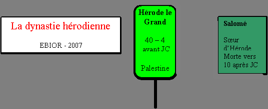
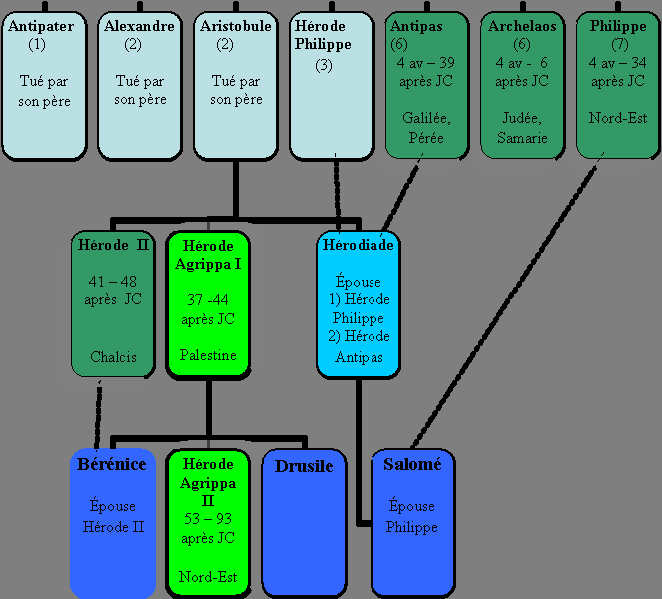

Présentation historique du Nouveau Testament EBIOR 2011 p.1/108
Jésus-Christ, deux termes si souvent réunis que leur signification propre s’estompe le plus souvent:
1.Jésus, « Dieu sauve », un nom porté par de nombreux juifs en Judée à l’époque romaine (notion historique) 2.Christ, « celui qui a reçu l’onction », soit le Messie, titre donné à l’Envoyé de Dieu qui doit sauver Israël (notion théologique)
Jésus-Christ: ces deux termes réunis expriment la continuité entre le « Jésus de l’histoire » et « le Christ de la foi », continuité affirmée
• par saint Paul qui identifie le Jésus d’avant Pâques au Seigneur ressuscité (1Co 9,14: « De même aussi le Seigneur a ordonné à ceux qui annoncent l'Évangile de vivre de l'Évangile. « ) • par le concile de Nicée-Constantinople qui, dans la personne du Christ, mêle les affirmations historiques en gras et théologiques en italique
Nous croyons en un seul Seigneur, Jésus-Christ, le Fils unique de Dieu, né du Père avant tous les siècles, Lumière issue de la Lumière, vrai Dieu issu du vrai Dieu, engendré et non créé, consubstantiel au Père et par qui tout a été fait; qui pour nous les hommes et pour notre salut, est descendu des cieux et s'est incarné du Saint-Esprit et de la vierge Marie et s'est fait homme. Il a été crucifié pour nous sous Ponce-Pilate, il a souffert et il a été mis au tombeau;il est ressuscité des morts le troisième jour, conformément aux Écritures; il est monté au Ciel où il siège à la droite du Père. De là, il reviendra dans la gloire pour juger les vivants et les morts, et son règne n'aura pas de fin.
• par la tradition bimillénaire de l’Église (Jean-Paul II, Tertio millenio adveniente, « …les écrits du Nouveau Testament qui, tout en étant des
Présentation historique du Nouveau Testament EBIOR 2011 p.3/108 documents de croyants, n’en sont pas moins dignes de foi dans tout ce qu’ils rapportent, même comme témoignages historiques »).
Or, depuis plus d’un siècle, l’exégèse classique tend à dissocier le Jésus de l’histoire, qui n’est rien ou presque rien, du Christ de la foi, considéré comme une pure construction ultérieure de croyants traités comme des rêveurs.
Cependant le commencement de la foi chrétienne réside dans le Jésus historique, dans sa naissance, sa prédication, ses miracles, sa conscience filiale et messianique, sa mort sur la Croix et sa Résurrection. Aussi la connaissance du milieu géographique, historique, chronologique, religieux, économique, social et linguistique où a vécu Jésus doit précéder l’étude littéraire des livres du Nouveau Testament et la recherche de leur signification théologique. Cette étude du milieu doit constituer la base objective qui servira de tremplin aux interprétations postérieures et permettra de vérifier si les indications fournies par les textes sont bien des créations ultérieures ou de simples affabulations comme on l’affirme souvent.
Existe-t-il, dans des domaines vérifiables, de nombreux anachronismes, inventions et erreurs flagrantes, en particulier dans les Évangiles? Répondre à cette question permettra de mieux situer la portée des textes et la validité des hypothèses exégétiques.
Cependant, force est de constater que la plupart des bibles et des manuels bibliques négligent ou même ignorent ces considérations, jugées trop communes ou même inutiles pour le salut de chacun.
Les considérations historiques et chronologiques, bien que mieux représentées que les notions géographiques, ne figurent cependant pas à leur vraie place dans les bibles francophones:
• la Bible de Thompson, le Bible à la Colombe et la Bible en français courant ne comportent que des informations insuffisantes • la TOB et surtout la Bible de Jérusalem fournissent des tableaux historiques plus complets et n’hésitent pas à souligner les divergences éventuelles, trop rarement mentionnées ailleurs. • seules la Bible de Crampon et la Nouvelle Bible de Segond comportent des notices historiques et chronologiques détaillées, les autres bibles se contentant de simples tableaux
Présentation historique du Nouveau Testament EBIOR 2011 p.4/108
• malheureusement, aucune bible ne présente les questions chronologiques dans leur ensemble, c’est-à-dire dans les mondes juifs, grecs et romains simultanément. Seule la Bible de Jérusalem et la Nouvelle Bible de Segond présentent les calendriers antiques.
• Les études de chronologies ne sont abordées nulle part.
La situation n’est pas meilleure dans les manuels bibliques de langue française:
* A.GEORGE et P.GRELOT, Introduction à la Bible, Tome III: Le Nouveau Testament, volume 1: Au seuil de l'ère chrétienne, Desclée, 1976:
aucune présentation historique et chronologique: ces informations sont purement laissées de côté.
* Raymond. E.BROWN, Que sait-on du Nouveau Testament?, Bayard, 1997 (édition anglaise) et 2000 (édition française)
une présentation historique peu fournie mais un aperçu détaillé des différentes chronologies pauliniennes. Par contre, rien sur la vie de Jésus ni sur les calendriers.
* Daniel MARGUERAT, Introduction au Nouveau Testament, Labor et Fides, 2001
Aucune présentation historique sauf un aperçu détaillé des différentes chronologies pauliniennes. Rien également sur la vie de Jésus ni sur les calendriers.
C'est pour réparer ces oublis et insuffisances ainsi que pour permettre au lecteur de se forger une opinion par lui-même que le site EBIOR propose sur ce thème de nombreux outils, sous forme d’un fichier facilement imprimable et téléchargeable:
7.une présentation synoptique de différentes chronologies concernant les événements et trois personnages: Jésus, Paul, Hérode 8.de nombreuses annexes: les principaux personnages politiques du premier siècle, les gardes sacerdotales à Qumran, un tableau chronologique synoptique s’étendant sur 135 années (EXCLUSIF) et une chronologie de la semaine sainte
Insistons sur le point suivant: les études qui suivent ne fournissent que les informations de base nécessaires pour comprendre les nombreuses discussions sur des points de chronologie. Aucune solution ni même aucune tentative de solution ne sont présentées, seulement un exposé des connaissances historiques actuelles et des différentes hypothèses chronologiques proposées. Ces divergences ne doivent pas conduire à un scepticisme outrancier. Car elles sont du même ordre que celles rencontrées par les historiens de l’antiquité. Par exemple, nous ne connaissons ni la date de naissance ni la date de décès des auteurs anciens qui ont mentionné le Christ comme Flavius Josèphe, Tacite, Pline le Jeune ou Suétone.
Pour en connaître plus, le lecteur est prié de se référer au site WEB www.ebior.org où il trouvera progressivement des études historiques et chronologiques détaillées, en particulier sur la vie du Christ et où les différentes hypothèses historiques et chronologiques seront comparées et critiquées
Je termine en remerciant madame Henriette HOROVITZ qui m’a autorisé à reproduire ses différents tableaux chronologiques, fruit de ses longues études sur la date de naissance du Christ et dont la collaboration m’a été fort précieuse dans la rédaction de ce troisième volume d’études du Nouveau Testament.
Présentation historique du Nouveau Testament EBIOR 2011 p.6/108
Ou Ebyatar, grand prêtre avec Sadoq sous le règne du roi David, cité en Mc 2,26. Selon 1Sm 22,20 c'est son père Ahimelek, prêtre de Nab, qui remit les pains de proposition à David alors qu'en 1Ch 24,6 Abiathar est le père d'Ahimelek. ABRAHAM
Ancêtre du peuple élu. Il vivait probablement vers le 19e siècle avant Jésus-Christ et était originaire d'Our, ville au bord de l'Euphrate, en Mésopotamie (actuellement Irak). Sa vie est marquée par des actes qui montrent une grande foi en Dieu: le départ de son pays, la confiance en la promesse divine d'une descendance, ainsi que le sacrifice de son fils Isaac qu'un ange empêcha à la dernière minute, préfiguration du sacrifice du Christ. Il est le Père du peuple à qui fut donnée la Terre Promise mais également le Père des croyants (Rm 4,16), ancêtre des juifs, des chrétiens et des musulmans. Il est cité dans les généalogies du Christ (Mt 1,2 et Lc 3,34) ainsi que dans le rappel de l'épisode du buisson en flammes (Mc 12,26 et Mt 22,32).
Petit-fils d'Hérode le Grand par son père Aristobule, né vers 100 avant Jésus-Christ, Agrippa I fut nommé par l'empereur romain Caligula en 37, roi des anciens territoires de Lysanias et de Philippe. Puis en 39, il obtint la Galilée et de la Pérée comme successeur d'Hérode Antipas après la disgrâce de ce dernier. Enfin, en 41, par la faveur de l'empereur Claude, il reçut la Judée et la Samarie. Il règne alors sur toute la Palestine comme son grand-père jusqu'à sa mort en 44 à Césarée. Comme lui, il procéda à de grands travaux. Ce sera le dernier roi des juifs reconnu comme tel par les romains. Très pieux, il était apprécié du peuple et des pharisiens. C'est sans doute sous leur influence qu'il persécuta l'Église naissante de Jérusalem (Ac 12 1), fit emprisonner Simon-Pierre (Ac 12 3), et fit exécuter Jacques, frère de Jean. Il mourut à Césarée frappé par l'ange du Seigneur à cause de ses
Présentation historique du Nouveau Testament EBIOR 2011 p.7/108 prétentions divines, rongé par les vers (Ac 12,23). Remarquons que les Actes des Apôtres l'appellent simplement Hérode et non Agrippa.
Fils d'Hérode-Agrippa I, il reçut en 48 les possessions de son oncle Hérode de Chalcis puis en 53 les anciennes tétrarchies de Philippe et de Lysanias et en 54 une partie de la Galilée autour de Tibériade et de la Pérée autour de Julias. Il possédait également un droit de tutelle sur le Temple de Jérusalem avec le pouvoir de nommer le grand prêtre. À la différence de son père, le peuple juif ne l'aimait pas à cause de sa vie privée dissolue. Avec sa sœur Bérénice, il assista à l'interrogatoire de Paul que le procurateur Porcius Festus avait fait comparaître devant lui (Ac 25 13; Ac 26 32). Après avoir soutenu les Romains pendant la révolte juive des années 66 à 70, bien que bon connaisseur du judaïsme (Ac 26,3), il mourut vers 93 et son royaume sera alors rattaché à la province romaine de Syrie. Plus aucun territoire ne sera désormais sous autorité juive. C'est le seul roi désigné sous le nom d'Agrippa dans les Actes des Apôtres.
Nom grec signifiant "protecteur des hommes". (1) un des deux fils de Simon de Cyrène qui fut réquisitionné pour aider Jésus à porter sa croix et frère de Rufus (Mc 15,21). En 1962 on a découvert, dans la vallée du Cédron à Jérusalem, une tombe portant l'inscription «Alexandre de Cyrène». La probabilité qu'il s'agisse de la même personne n'est pas négligeable car trois éléments sont réunis: un prénom peu courant chez un juif, l'origine dans une ville assez éloignée de Libye en Afrique, la vie à Jérusalem puisqu'il y fut enterré. (2) fils d'Hérode le Grand, né de Mariamme l'Hasmonéenne, tué avec son frère Aristobule sur ordre de leur père vers 7 avant Jésus-Christ. (3) juif d'Éphèse qui n'a pas pu s'exprimer devant l'assemblée du peuple en Ac 19.33-34. C'est peut-être le même homme que Paul dit "avoir livré à Satan" en 1Tm 1,20 ainsi que le fondeur qui s'est opposé à Paul en 2Tm 4,14.
Nom grec signifiant "remplace" (1) Père d'un apôtre appelé Jacques le Mineur, à ne pas confondre avec l'autre, Jacques le Majeur, fils de Zébédée (Mc 3,18). Certains auteurs l'identifient avec Clopas, l'époux d'une femme nommée Marie, présente au pied de la croix de Jésus (Jn 19,25) (2) Père du percepteur d'impôts Lévi (Mc 2,14) devenu sans doute Matthieu.
Présentation historique du Nouveau Testament EBIOR 2011 p.8/108
En hébreu Hananyah et en grec Ananias qui signifie "YH [forme abrégée de YHWH] s'est montré miséricordieux". (1) Désigné comme grand prêtre en 46/47 après Jésus-Christ par Hérode, roi de Chalcis, il fut accusé d'actes de violence par Quadratus, gouverneur de Syrie, et envoyé à Rome en 52 pour y être jugé. Acquitté par l'empereur Claude, il fut assassiné en 66 par le peuple, comme "ami des Romains" au début de la grande révolte juive. Il se comporta également durement envers Paul, durant sa comparution à Jérusalem (Ac 23,2 et 24,1) devant Felix, le procurateur romain de Judée. On ne sait s'il fut destitué de sa charge en 52 ou en 59. (2) Un autre Ananias, habitant Damas, accueillit l'apôtre Paul qui avait perdu la vue après sa rencontre avec le Christ (Ac 9,10-19 et 22,12- 16)
Un des fils d'Hérode le Grand, (son nom est l'abréviation d'Antipater qui en grec signifie «le portrait de son père»), né de Malthacé la Samaritaine, sa cinquième épouse. Il régna comme tétrarque - et non comme roi à la différence des autres Hérode de la famille (Lc 3,1) de 4 avant Jésus-Christ (date traditionnelle sans documents anciens à l'appui) ou de 7 après Jésus-Christ (date révisée après relecture de Flavius Josèphe)[?] à 39 après Jésus-Christ sur la Galilée et sur la Pérée. Cependant il avait le pouvoir d'un souverain et était désigné par le terme de roi dans l'usage populaire (Mc 6,14). Il répudia sa première femme, la fille du roi nabatéen Aretas IV pour épouser Hérodiade, femme de son demi-frère Hérode-Philippe. A l'instigation de celle-ci, il fit arrêter et décapiter Jean-Baptiste qui lui reprochait cet adultère (Mc 6 17; Mt 14 1). Dans les Évangiles, ce prince, toujours désigné par le seul nom d'Hérode, est qualifié par Jésus de «renard» (Lc 13 32). En effet, il se comporta de manière plus habile que son frère Archelaus. Ce fut d'ailleurs le seul Hérode que Jésus rencontra dans le palais des Hasmonéens sur l'un des points culminants de la ville haute et son activité publique se situe principalement dans la tétrarchie d'Hérode- Antipas. Attiré par le surnaturel, le souverain semble intéressé par les rumeurs qui circulent autour de Jésus. Antipas espérait assister à un prodige accompli par celui-ci mais il fut déçu dans sa curiosité et n'obtint aucune réponse lors de son interrogatoire (Lc 23,6-11). Au cours du procès de Jésus, Pilate renvoya ce dernier à Hérode, qui séjournait à Jérusalem pour la Pâque, parce qu'il était Galiléen (Lc 23 8). Les deux hommes étaient des rivaux car le tétrarque n'hésitait pas à manœuvrer contre les autorités romaines. Avec ses frères, il avait
Présentation historique du Nouveau Testament EBIOR 2011 p.9/108 adressé une lettre à l'empereur Tibère pour que Ponce Pilate fasse enlever des boucliers qui offensaient la foi juive. Battu par Aretas qui voulait venger l'honneur de sa fille, accusé par Agrippa I de vouloir être reconnu comme roi, il fut destitué par l'empereur Claude en 39 après Jésus-Christ et exilé avec Hérodiade dans le sud de la Gaule, probablement à Saint-Bertrand de Comminges (Lugdunum). Hérode Antipas est cité par après dans la prière de la communauté chrétienne en Ac 4 27. Il construisit en l'honneur de l'empereur Tibère, la ville païenne de Tibériade, sur le lac de Galilée mais en pays juif ce qui constitue une véritable provocation, et sur l'emplacement d'un ancien cimetière, en violation de la loi juive. De plus, il y fit peindre ou sculpter des images d'animaux, autre violation flagrante (Ex 20,4 et Dt 4,17).
En grec, "l'égal du père". Un des fils d'Hérode le Grand, né de Doris, tué sur ordre de son père quelques jours avant sa propre mort.
En grec, "le chef du peuple". Un des fils d'Hérode le Grand, né de Malthacé la Samaritaine, frère d'Hérode-Antipas. En 4 avant Jésus- Christ (date traditionnelle non prouvée) ou en 7 après Jésus-Christ (date révisée) [?] il fut nommé, par les romains, ethnarque - et non roi - de la Judée, de la Samarie et de l’Idumée, soit la moitié des territoires contrôlés par son père. C'est pour échapper à son caractère cruel que Joseph et Marie viennent s'établir en Galilée, qui relevait de la juridiction de son frère Antipas (Mt 2 22). C'est la seule mention de ce souverain dans le Nouveau Testament. De nombreuses révoltes eurent lieu sous son règne dont celle de Judas de Gamala en Galilée. En 6 après Jésus-Christ (date traditionnelle non prouvée) ou en 16/17 après Jésus-Christ (date révisée)[?] à cause de son despotisme, il fut destitué par l'empereur Auguste, sur plainte des Juifs, exilé à Vienne en Gaule et remplacé par un préfet-procurateur. Son domaine devint la province romaine de Judée.
En grec, "le meilleur conseiller". Fils de la deuxième femme d'Hérode le Grand, Mariamme l'Hasmonéenne, il fut tué sur ordre de son père avec son frère Alexandre vers 7 avant Jésus-Christ. C'est le père d'Hérode Agrippa I et d'Hérodiade.
Présentation historique du Nouveau Testament EBIOR 2011 p.10/108
En araméen, Bar Abba, "le fils du père", sans doute le fils d'un homme respecté, peut-être un pharisien chef d'école. Barabbas avait été arrêté et était emprisonné lorsque Jésus comparaissait devant le sanhédrin et devant Pilate. Les chefs juifs ont insisté auprès du gouverneur pour que Barabbas soit relâché, en même temps qu'ils poussaient Pilate à condamner Jésus à mort. Contemporain de Jésus Christ, Barabbas(veut dire fils du père ou fils du chef) est souvent présenté comme un résistant qui luttait de façon violente contre l'occupant romain. Mais le Nouveau Testament parle simplement d'un brigand qui a commis un meurtre durant une émeute (Mc 15,4; Ac 3,14). Nous ne connaissons aucune révolte violente anti-romaine à l'époque du Christ et cette émeute pouvait être dirigée contre les autorités juives. De plus il est peu vraisemblable que la foule demande à un gouverneur romain la grâce d'un opposant à ce même pouvoir romain. Remarquons que certains manuscrits anciens de l'évangile de Matthieu lui donnent Jésus comme prénom, en Mt 27, 17 ce qui est vraisemblable mais non assuré. Il pourrait s'agir soit d'un ajout par esprit de symétrie soit d'une suppression d'un parallélisme gênant entre les noms qui aurait permis un jeu de mots à Pilate: " Quel fils du père dois- je libérer? »
En hébreu et en araméen, « fils de prophète » ou « fils de consolation ». C’est le surnom d’un lévite originaire de Chypre, dont le nom est Joseph. C’est un homme généreux qui vendit ses biens à la première communauté chrétienne de Jérusalem (Ac 4,36-37), à qui il présenta Paul (Ac 9,26-27) qui leur était suspect à cause de ses persécutions antérieures contre les chrétiens. Barnabé fera venir Paul à Antioche, la grande métropole païenne, pour y annoncer conjointement l’évangile. Ensuite ils partiront ensemble, avec Jean Marc son cousin, pour Chypre, patrie de Barnabé puis pour l’Asie mineure, en particulier en Pamphylie, en Pisidie et en Lycaonie: c’est le « premier voyage missionnaire de Paul ». Tous deux participeront également à « l’assemblée des apôtres et des anciens », traditionnellement appelée « concile de Jérusalem » (Ac 15, 2.12 et 22) qui trancha négativement au sujet des obligations rituelles de la loi de Moïse à imposer aux païens convertis sans être passés par le judaïsme. Une querelle éclata entre les deux hommes parce que Jean-Marc les avait abandonné lors de leur voyage précédent: Barnabé voulait reprendre son cousin et Paul s’y opposa. Barnabé et Marc s’embarquèrent pour Chypre où, selon la tradition, le premier cité mourut lapidé dans la capitale de l’île, Salamine. En 1Co 9,6 Paul parle de Barnabé en termes fraternels, ce qui indique
Présentation historique du Nouveau Testament EBIOR 2011 p.11/108 que leur rupture n’avait été que passagère. L’Église l’honore du tire d’apôtre, tout comme Paul. Une épitre, non canonique malgré l'opinion opposée de CLEMENT d'Alexandrie et d'ORIGENE, lui est attribuée. Datant sans doute du début du deuxième siècle, elle développe l'opposition classique des deux voies, le chemin de la vie et le chemin de la mort.
Mendiant aveugle de Jéricho, que Jésus guérit (Mc 10,46-52). Matthieu (20,29-34) parle, sans les nommer, de deux aveugles. Son nom araméen, Bar-Timée, signifie «fils de Timée». Il appelle Jésus «fils de David», ce qui équivaut à reconnaître en lui le Messie.
Ou Beelzebouth, ancienne divinité adorée par les Philistins dans la ville d'Ekron. Son nom peut signifier «seigneur des mouches» («Zebub» par déformation volontaire), ou encore «seigneur du fumier». Par extension, nom donné au chef des démons, Satan, et à Jésus lui-même par les pharisiens (Mc 3,22 et Mt 10,25). Il n'est pas utilisé ailleurs, en opposition avec son emploi ultérieur dans la sorcellerie sous le nom de Belzébuth.
En grec, "qui attire la victoire". Fille du roi Agrippa I, née en 28, elle fut veuve très tôt du neveu de l'écrivain Philon d'Alexandrie et épousa ensuite son oncle Hérode II, roi de Chalcis. Veuve une seconde fois, elle vécut alors avec son frère Agrippa II. En sa compagnie, elle rencontra Paul lors de sa captivité à Césarée en l'an 60 (Ac 25 13- Ac 26 32), décidée par le procurateur Festus. Pendant la guerre juive, en 68, elle devint la maîtresse du général romain Titus, futur empereur de 79 à 81 après Jésus-Christ. Celui-ci l'emmena à Rome mais renonça à l'épouser, par crainte de l'opinion publique. Après sa répudiation par Titus, elle retourna vivre à Tibériade, avec son frère Agrippa II, dans le palais construit par son grand oncle Antipas. La date de sa mort n'est pas connue.
En hébreu Yosef Qayafa, Joseph "le singe " ou "le tyran", sans doute un jeu de mots sur son comportement. Son fils Elyehoeanay est sans doute le même que Elionaeus ben Kantheras, nom d'un des derniers grands prêtres à avoir accompli le sacrifice de la vache rousse. En ce cas Caïphe appartiendrait à la famille sacerdotale des Kathros, une branche collatérale de la puissante famille des Boethos, originaire d'Alexandrie en Égypte et promue au grand
Présentation historique du Nouveau Testament EBIOR 2011 p.12/108 pontificat par Hérode le Grand. Gendre de l'ancien pontife Hanne dont il subit l'autorité morale, Caïphe fut nommé grand prêtre par le procurateur Valerius Gratius en 18 après Jésus-Christ, sous le règne de Tibère. Il le resta pendant le gouvernement de Pilate et fut destitué la même année que lui, en 36, par le légat impérial de Syrie, Vitellius. Par sa charge, comme représentant officiel du peuple juif auprès des autorités romaines, il était le président du sanhédrin: c'est à ce titre qu'il interrogea Jésus dans son propre palais (Mt 26,57 et Jn 18,13), qu'il conclut au blasphème méritant la mort (Mt 26,63-66 et Mc 14,61-64) et qu'il le livra au gouverneur romain Ponce Pilate. En 1990, a été découvert dans un tombeau au sud de Jérusalem un ossuaire contenant les ossements de plusieurs personnes dont ceux d'un homme d'environ 60 ans. Comme cet ossuaire porte l'inscription "Joseph fils de (ben) Caïphe", il est vraisemblable qu'il s'agisse du même personnage ou d’un descendant direct.
Nom de personnages de la famille de Jules César devenu un titre donné à tous les empereurs romains postérieurs. À l'époque de Jésus, les Romains étaient l'occupant. Trois empereurs sont cités nommément dans le Nouveau Testament et un quatrième par allusion:
Auguste, en latin Caius Octavius Thurinus devenu Caius Iulius Caesar Octavianus, à la mort de son père adoptif, Jules César. Il était le fils d'Atia (85 avant Jésus-Christ - 43 avant), elle-même fille de Julia Caesaris Minor (101 avant Jésus-Christ - 51 après Jésus-Christ), la sœur de Jules César.
Auguste est le surnom donné en 27 avant Jésus-Christ par le sénat romain à Octave, petit-neveu de l'ancien dictateur. C'est lui qui ordonna le recensement (Lc 2,1) pendant lequel naquit Jésus.
Tibère, en latin Tiberius Claudius Nero devenu Tiberius Iulius Caesar Augustus à la mort de son père adoptif Auguste.
Troisième mari de Julia l'aînée (32 avant Jésus-Christ - 14 après Jésus- Christ), unique enfant d'Octavien Auguste, le successeur de ce dernier régna du 19 août 14 (ou 19 septembre, vu le mois de deuil pour Auguste) au 16 mars 37(Lc 3,1). Cette mention historique: l’an 15 est la 16ième du règne! bien que fort discutée, est fondamentale
Car c'est sous son règne que se déroula toute la vie publique du Christ et c'est à lui que Jésus fait allusion lorsqu'il déclare "Rendez à César ce qui appartient à César" (Mt 22,17-21). La fin de son règne, lors de sa retraite dans l'île de Capri, fut marquée par la terreur, ce qui explique la peur de lui désobéir manifestée par Ponce Pilate (Jn 19,12-16). C'est en son honneur qu'Hérode Antipas donna le nom de Tibériade à la ville qu'il avait fondée sur les bords du lac de Galilée.
Présentation historique du Nouveau Testament EBIOR 2011 p.13/108
Claude, en latin Tiberius Claudius Nero Caesar Drusus, fils de Drusus, frère de Tibère et d'Antonia Minor (36 avant Jésus-Christ - 37 après Jésus- Christ). Celle-ci est la fille cadette du célèbre triumvir Marc Antoine (83 avant Jésus- Christ - 30 après Jésus- Christ) et d'Octavia Minor (69 avant Jésus-Christ - 11 avant Jésus- Christ), la sœur d'Auguste.
Claude naquit le 1er août 10 avant Jésus-Christ et mourut le 13 octobre 54. Il est cité en Ac 11,28 à propos d'une famine qui sévit dans tout l'empire et en Ac 18,2 (expulsion de Rome des juifs chrétiens Priscille et Aquilas) ce qui correspond à l'édit, mentionné par l'historien romain Suétone, qui expulsa les juifs de Rome en 49-50. Les deux premiers voyages de saint Paul eurent lieu sous son règne.
Néron, en latin Lucius Domitius Ahenobarbus devenu Nero Claudius Caesar Drusus après son adoption en 50 après Jésus-Christ par l'empereur Claude. Il était le fils d'Agrippine la Jeune (15 après Jésus-Christ - 59 après Jésus- Christ), dernière épouse de Claude, petite nièce de Tibère et arrière-petite-fille d'Auguste.
Néron qui régna de 54 à 68 est l'empereur non nommé mais désigné sous le titre d'Auguste, devant qui Paul demanda à comparaître (Ac 25,12; 26,32; 27,24; 28,19) dans les années 58 à 60 après Jésus- Christ. C'est sous son règne que Paul subit sa captivité et son martyre à Rome.
Forme araméenne de Cléopas, diminutif masculin du nom grec Cléopâtre. Cité en Lc 24,18, il est vraisemblablement l'époux d'une des saintes femmes citées en Jn 19,25. Il est parfois identifié avec Alphée: dans ce cas Clopas et Alphée proviendraient du même nom araméen Cholphaï. Il est également considéré par Eusèbe de Césarée comme un frère de saint Joseph. Malgré la ressemblance des noms, il ne doit probablement pas être identifié avec Cléophas, un des deux disciples d'Emmaüs (Lc 24,18)
Voir Barnabé, Marc, Silas, Timothée et Tite.
Fils de Jessé, né à Bethléem, roi du peuple hébreu, qui vivait vers l'an 1000 avant Jésus-Christ. Une prophétie, prononcée du vivant de David (2S 7,12), annonçait que le Messie serait issu de sa lignée, d'où l'expression «Fils de David» pour désigner Jésus en Mc 10,47-48 et le Messie en Mc 12,35. Pour cette raison, mais aussi à cause de son histoire personnelle, David est une figure très importante de la Bible, modèle du pouvoir selon la volonté de Dieu et sa place s'impose dans
Présentation historique du Nouveau Testament EBIOR 2011 p.14/108 les généalogies du Christ (Mt 1,6 et 17 et Lc 3,31). Sous son règne, les douze tribus étaient encore réunies, alors que par la suite elles se séparèrent en deux royaumes autonomes: Israël et Juda. Salomon, l'un de ses fils, lui a succédé sur le trône.
Prophète de l'Ancien Testament, dont le nom signifie «Mon Dieu est YHWH», qui vivait au 9e siècle avant Jésus-Christ et qui a gardé sa foi en Dieu malgré les persécutions. Comme il est monté au ciel au lieu de mourir, enlevé par le Seigneur, les Juifs croyaient qu'il allait revenir sur terre peu de temps avant le Messie (Mc 9,11-13 et Mt 6,15). Cette conception n'a rien à voir avec la réincarnation, comme on l'affirme parfois. Interrogé sur ce point, Jean le Baptiste nia être Élie (Jn 1,21). Lorsque Jésus fut transfiguré, il était en compagnie d'Élie et de Moïse, témoins de sa gloire anticipée (Mc 9,4). Le Nouveau Testament considère la prière d'Élie comme l'exemple de la prière efficace du juste (Jc 5,16-18) et rappelle la révélation de la gratuité de la grâce divine reçue à l'Horeb (Rm 11,2-6)
Transcription grecque de l'hébreu Elicheba ("Dieu est plénitude"), nom de la femme d'Aron. C'est la femme du prêtre Zacharie, mère de Jean le Baptiste et vieille cousine de Marie. Elle fut libérée de sa stérilité sur le tard (Lc 1,7-24), comme Sarah, la mère d'Isaac. Son mari Zacharie fut prévenu par un ange de la naissance d'un fils (Lc 1,11-18) qui allait devenir un nouvel Élie (Lc 1,17). Par la suite, Élisabeth reçut la visite de Marie, sa parente (Lc 1,39-56), à qui elle adressa la célèbre salutation reprise dans la prière de l'Ave Maria (Lc 1,42). C'est elle qui donnera à son fils un nom, Jean (Lc 1,60), étranger à la tradition familiale.
en latin Antonius Felix, nom du procurateur romain de la Judée et de la Samarie entre 52 et 59. Affranchi d'Antonia, mère de l'empereur Claude, d'où son nom, il épousa Drusille, la plus jeune fille d'Agrippa I et la sœur de Bérénice (Ac 24,24). Pendant son gouvernement Paul demeura prisonnier deux ans à Césarée (Ac 23,33; 24,37) et comparut deux fois devant son tribunal. Violent, cruel et âpre au gain, il fut deux fois démis de ses fonctions, une première fois sous Claude, une seconde fois sous Néron. Son successeur se nomme Festus.
Nom traditionnel donné aux disciples féminins de Jésus qui l'accompagnèrent durant sa mission. Cinq femmes au moins sont ainsi connues mais il est difficile de savoir si "l'autre Marie" correspond à une
Présentation historique du Nouveau Testament EBIOR 2011 p.15/108 seule ou à plusieurs personnes différentes. De plus d'autres femmes, non nommées, ont également suivi Jésus (Lc 8,3 et Mt 27,55)
Marie de Magdala
dans la vie publique: Lc 8,1 au pied de la Croix: Mt 27,56 et Mc 15,40; Jn 19,25-27 lors de l'ensevelissement: Mt 27,61 au tombeau vide: Mt 28,1 et Lc 24,10 lors de l'apparition du Christ: Jn 20,11
Jeanne, femme de Chouza, intendant d'Hérode dans la vie publique: Lc 8,3 au tombeau vide: Lc 24,10
Suzanne dans la vie publique: Lc 8,3
Salomé, mère des fils de Zébédée au pied de la Croix: Mt 27,56 et Mc 15,40 au tombeau vide: Mc 16,1
l'autre Marie [?] lors de l'ensevelissement: Mt 27,61 au tombeau vide: Mt 28,1 lors de l'apparition du Christ: Mt 28,9 et Mc 16,9
Marie, mère de Jacques et de Joseph (ou Joses) au pied de la Croix: Mt 27,56 et Mc 15,40 au tombeau vide: Mc 16,1 et Lc 24,10
la « sœur » ou cousine de Marie, mère de Jésus[?] au pied de la Croix: Jn 19,15-27
Marie, femme de Clopas au pied de la Croix: Jn 19,15-27 FESTUS en latin Porcius Festus, nom du procurateur romain de la Judée et de la Samarie entre 59 et 62, successeur de Felix. C'est devant son tribunal à Césarée que Paul comparut. Avec l'appui d'Agrippa II et de Bérénice, ce fut lui qui l'envoya à Rome pour être jugé comme citoyen romain par l'empereur (Ac 25-26), Néron à cette époque. Ce fut un bon politique et un homme intègre, différent de son prédécesseur mais il mourut en fonction.
Présentation historique du Nouveau Testament EBIOR 2011 p.16/108
Forme abrégée d’Ananie, "miséricordieux", nom masculin ou féminin, dont celui d'Anne, épouse de Joachim et mère de la Vierge Marie. C'est principalement le nom d'un personnage tout-puissant et chef de la famille des Bene Hanin, en hébreu Hanan ben Seth. Désigné en 6 après Jésus-Christ par Quirinius, gouverneur de Syrie, il succéda comme grand prêtre, à l'âge de 36 ans à son frère Yehosua (Josué ou Jésus) ben Seth. Victime de l'avènement de Tibère à l'empire, il sera destitué en 15 après Jésus-Christ. Mais il saura se concilier les faveurs des procurateurs Valerius Gratius et Ponce Pilate et conserva un grand prestige dans le sanhédrin dont il était peut-être le doyen. C'est ainsi que Luc en 3,2 le cite comme repère historique en tant qu'ancien grand prêtre. Par la suite Hanne saura imposer son fils aîné Eleazar (16-17) puis son gendre Joseph Qayafa (18-36 ), transcrit en Caïphe. C'est sans doute dans la salle d'audience du Palais Hanin, fouillé jusqu'en 1983, que Jésus fut interrogé par Hanne (Jn 18,13) avant d'être envoyé devant son gendre Caïphe (Jn 18,24). Son nom est encore cité parmi les personnalités du sanhédrin, réunies pour juger Pierre et Jean (Ac 4,6). Plus tard, quatre autres de ses fils accéderont également au souverain pontificat:
Yehonatan ou Jonathan de 36 à 37, segan ou chef de la police du Temple, à l'époque de l'arrestation de Jésus Théophile de 37 à 41 et Matthias de 41 à 43, peut-être trésoriers du Temple à cette même époque Hanne le dernier qui fit lapider en 62, Jacques, le « frère » ou cousin de Jésus.
Nom de plusieurs rois (en vert clair) et tétrarques (en vert foncé) de la Palestine au temps de Jésus dont le premier est Hérode le Grand. Celui-ci, de dix mariages différents, eut quatorze enfants: neuf fils et cinq filles. Voici une présentation très simplifiée de sa famille:
¦ sa soeur Salomé
¦ Ses fils principaux, dans l'ordre des mariages indiqués entre parenthèses:
¦ (1) né de Doris: Antipater
¦ (2) nés de Mariamme l'Hasmonéenne: Aristobule, Alexandre
¦ (3) né de Mariamme fille de Simon, le grand prêtre nommé par Hérode: Hérode-Philippe
¦ (6) nés de Malthacè la samaritaine: Hérode-Antipas, Archelaüs
Présentation historique du Nouveau Testament EBIOR 2011 p.17/108
¦ (7) né de Cléopâtre de Jérusalem: Philippe
¦ Ses petits-enfants: Hérode Agrippa I, Hérode de Chalcis, Hérodiade, Tigrane
DANS LE TABLEAU CI-DESSOUS, LA DATE DE -4 N'EST PAS PROUVÉE


¦ Ses arrière-petits-enfants: Hérode-Agrippa II, Bérénice, Drusille, Salomé, Aristobule II
Nom de plusieurs rois (en vert clair) et tétrarques (en vert foncé) de la Palestine au temps de Jésus dont le premier est Hérode le Grand. Celui-ci,
Présentation historique du Nouveau Testament EBIOR 2011 p.18/108 de dix mariages différents, eut quatorze enfants: neuf fils et cinq filles. Voici une présentation très simplifiée de sa famille:
sa soeur Salomé Ses fils principaux, dans l'ordre des mariages indiqués entre parenthèses:
(1) né de Doris: Antipater (2) nés de Mariamme l'Hasmonéenne: Aristobule, Alexandre (3) né de Mariamme fille de Simon, le grand prêtre nommé par Hérode: Hérode-Philippe (6) nés de Malthacè la samaritaine: Hérode-Antipas, Archelaüs (7) né de Cléopâtre de Jérusalem: Philippe
Ses petits-enfants: Hérode Agrippa I, Hérode de Chalcis, Hérodiade, Tigrane Ses arrière-petits-enfants: Hérode-Agrippa II, Bérénice, Drusille, Salomé, Aristobule II
Petit-fils d'Hérode le Grand et frère du roi Agrippa I, il régna sur le district de Chalcis dans le centre du Liban, au nord de l'Abilène de 41 jusqu’à sa mort en 48 après Jésus-Christ. Il avait épousé sa nièce Bérénice, la fille de son frère. Nommé inspecteur du Temple avec droit de choisir les grands prêtres, il désignera Ananie en 48.
Fondateur de la dynastie hérodienne, né vers 73 ou 63 avant Jésus- Christ d'un père iduméen, Antipater, ami du prince et grand prêtre hasmonéen Hyrcan II et d'une princesse arabe: il est donc considéré comme un demi-juif. Il obtint de Rome en 40 avant Jésus-Christ le titre de roi de Judée (Mt 2,1). Manœuvrant avec habileté et férocité, il fera assassiner son épouse Mariamme I, petite-fille d'Hyrcan II. Ayant reçu la faveur du triumvir Marc-Antoine puis du futur empereur Auguste, il agrandit ses territoires avec l'aide des légions romaines jusqu'à régner sur toute la Palestine à l'exception de la Décapole. Son règne amena la prospérité économique et l'expansion politique pendant plus de trente ans. Bien que profondément helléniste de cœur, il se considérait comme un grand bâtisseur à l'égal de Salomon - ses nombreuses constructions à Samarie-Sebaste, à Césarée, à Hébron (le tombeau des patriarches) et à Jéricho le démontrent- il respecta les traditions du peuple juif et décida en 20 avant Jésus-Christ de rebâtir le Temple plus beau qu'il ne l'avait jamais été. Le Mur Occidental (improprement appelé Mur des
Présentation historique du Nouveau Testament EBIOR 2011 p.19/108
Lamentations) actuel en est l'unique vestige. Il y ajouta à Jérusalem la forteresse Antonia, un hippodrome non encore découvert et un palais royal dont il subsiste une tour dite de "David". Il fit construire également les palais forteresses de Massada, de Macheronte et de l'Herodion. Cruel et sanguinaire, détesté des juifs pieux pour ses lourds impôts, sa complaisance envers Rome, ses usages païens et ses mœurs dissolues, il n'hésita pas à massacrer des membres de sa famille, entre autre ses fils Alexandre, Antipater et Aristobule. C'est sous son règne que date la naissance de Jean le Baptiste (Lc 1,5) et de Jésus-Christ (Mt 2,1). L'Évangile garde de lui le souvenir du massacre des innocents (Mt 2 16). Craignant que Jésus ne soit une menace pour son trône, il fit massacrer tous les enfants de moins de deux ans. Hérode mourut à Jéricho en mars de l'an 4 avant notre ère selon la date traditionnelle C’est une date répétée à souhait, mais non justifiable selon Mme Henriette HOROVITZ. Des études récentes proposent plutôt en septembre de l'an 2 ou en janvier de l'an 1 avant Jésus-Christ ou même en mars-avril 6 ou 7 (HH) après Jésus-Christ [?]) et fut enterré dans l'Herodion. Sa tombe n'a été découverte qu'en mai 2007, par une équipe d'archéologues de l'Université hébraïque de Jérusalem.
Fils d'Hérode le Grand (Mc 6 17) et demi-frère d'Hérode Antipas, né de Mariamme II, la fille du grand prêtre Simon, il ne participa pas à l'héritage paternel et vécut à Rome. De son mariage avec Hérodiade qui l'abandonna au profit de son beau-frère naquit Salomé (Mt 14,3) qui devait obtenir d'Hérode Antipas la tête de Jean le Baptiste (Mt 14,8-11; Mc 6,24-28).
Elle fut mariée très jeune à Hérode-Philippe (Mc 6,17) (bien que cela soit contesté puisque Philippe est connu comme mari de Salomé mais il a pu avoir plusieurs femmes) par la volonté de son grand-père. Cette femme ambitieuse devint ensuite la maîtresse puis l'épouse d'Hérode Antipas qui n'est autre que le demi-frère de son premier mari. Comme Jean le Baptiste dénonçait cet adultère, elle obtint par un stratagème qu'Hérode Antipas fasse décapiter le prophète et lui apporte sa tête sur un plat (Mc 6,25). Elle exploita ainsi l'imprudence et l'orgueil de son époux qui ne pouvait se dédire devant ses convives. Par ailleurs, Hérodiade était elle-même petite-fille d'Hérode le Grand par son père Aristobule, nièce de son premier mari Hérode-Philippe, et nièce de son amant et second mari Hérode Antipas. Elle eut Salomé comme fille de son premier mariage. Tombée en disgrâce en 39 après Jésus-Christ, en
Présentation historique du Nouveau Testament EBIOR 2011 p.20/108 même temps que son mari, elle fut également exilée à Lugdunum en Gaule, probablement Saint-Bertrand de Comminges en France.
partisan d'Hérode Antipas, hostile à Jésus. Ils veulent le voir régner comme son père sur l'ensemble des territoires formés par la Galilée et la Judée-Samarie sous gouvernement romain. Ils apparaissent en Mt 22,16 et Mc 3,6; 12,13.
fils d'Abraham et de Sarah, père de Jacob. Comme son père, il est cité par Jésus dans sa controverse avec les sadducéens au sujet de la résurrection des morts (Mc 12,26). Les Pères de l'Église verront en lui une préfiguration du Sauveur, lui qui avait porté le bois du sacrifice dont il était la victime désignée.
ou Ésaïe, prophète de l'Ancien Testament, qui vivait au 8e siècle avant Jésus-Christ et a annoncé le Christ. Il a connu les campagnes assyriennes contre Juda et Israël. Ses prophéties sont souvent citées par les Évangiles (Mc 1,2; Mc 7,6). Jésus appliquera à sa personne (Lc 4,17-22) le texte d' Is 61,1-2.
(1) fils d'Isaac. Son nom apparait dans les généalogies du Christ (Mt 1,2 et Lc 3,34). (2) Un autre Jacob est le père de Joseph, l'époux de Marie (Mt 1,15- 16)
prénom, en hébreu Ya'aqôb, courant à l'époque de Jésus et identique au fils d'Isaac. Le Nouveau Testament mentionne plusieurs Jacques: (1) un apôtre, frère de Jean, fils de Zébédée, appelé Jacques le Majeur. (2) un autre apôtre, fils d'Alphée, appelé Jacques le Mineur pour ne pas le confondre avec le précédent. (3) l'un des «frères» de Jésus, avec Joses, Jude et Simon, appelé Jacques le Juste, chef de l'Église de Jérusalem (Ga 1,19) et mort par lapidation en 62 selon la mention de l'historien juif Flavius Josèphe. Cette expression a suscité de nombreuses hypothèses examinées sur le
Présentation historique du Nouveau Testament EBIOR 2011 p.21/108
Doté d'un grand prestige à la tête de l'église de Jérusalem, Jacques, très attaché au respect de la Loi juive, fait montre d'ouverture d'esprit. Il réussit ainsi à maintenir la cohésion dans une communauté formée d'une majorité de chrétiens d'origine juive mais s'ouvrant progressivement à des païens, venus du monde gréco-romain. (4) le père de l'apôtre Jude (Lc 6,16)
Transcription grecque de l'hébreu Yaïr ("YH" rayonne). Un des chefs de la synagogue de Capharnaüm, qui présidait les réunions de la communauté, dont Jésus a rappelé la petite fille à la vie (Mc 5,22; Mt 9,18-19 et 23-25; Lc 8,41-42 et 49-55).
En grec Joannès, transcription du nom hébreu Yohanân qui signifie "YH a fait grâce". (1) l'apôtre, frère de Jacques, fils de Zébédée, surnommé Boanergès et l'évangéliste, vraisemblablement la même personne que le précédent bien que cela soit discuté. (2) le Baptiste. A la fois le dernier des prophètes de l'Ancien Testament, annoncé par Malachie (Ml 3,1) et par Isaïe (Es 40,3) ainsi qu'un des personnages les plus importants du Nouveau Testament après Pierre et Marie, car il y est cité plus de 90 fois. Il est le fils du prêtre Zacharie et d'Élisabeth (Lc 1,5), issue elle aussi d'une famille sacerdotale (Lc 1,5) et cousine de Marie. Sa naissance au temps d'Hérode le Grand, annoncée par l'ange Gabriel, précéda de peu celle du Christ et est située traditionnellement à Aïn Karem, à quelques kilomètres à l'ouest de Jérusalem. Il se retira au désert pour y mener la vie dure d'un ascète et baptisa dans le Jourdain tous ceux qui voulaient obtenir le pardon de leurs péchés, entre autre à Béthanie (Jn 1,28) et aux sources d'Aenon (Jn 3,23). À la différence du baptême des Esséniens qu'il connaissait peut-être mais nous n'en avons aucune certitude, il s'agissait d'un rite unique et non quotidien, à caractère eschatologique et engageant dans un changement de vie. Très populaire, Jean s'adresse à des personnes de toutes les conditions sociales. Nouvel Élie, Jean le Baptiste proclamait l'arrivée du Royaume des cieux (Mt 3,2), annonça la venue d'un plus puissant que lui (Mt 3,11; Mc 1,7), baptisa Jésus (Mt 3,16 -17; Mc 1,9) malgré son refus préalable (Mt 3,14). Il le désigna comme « l'Agneau de Dieu» (Jn 1,19) et le Messie de toute éternité (Jn 1,30) avant de s'effacer.
Présentation historique du Nouveau Testament EBIOR 2011 p.22/108
Après un ministère de plusieurs mois, Jean-Baptiste fut emprisonné vers 28 (?) ou en 32 (HH) après Jésus-Christ [?], peu après le baptême de Jésus-Christ, par le tétrarque Hérode Antipas. Il fut décapité à la demande d'Hérodiade, mère de Salomé,pour avoir critiqué son mariage avec son beau-frère. L'historien juif Flavius Josèphe (Antiquités juives, 18,1,118-119) situe cet événement dans le palais-forteresse de Machéronte édifié par Hérode le Grand à l'est de la mer Morte. Hérode Antipas regrettera d'avoir sacrifié un homme "juste et saint" (Mc 6,20). On le désigne du surnom de Précurseur, celui qui vient avant un autre pour l'annoncer. Plusieurs de ses disciples, tels André et sans doute Jean, le quittèrent pour s'attacher au nouveau maître qu'il leur avait désigné (Jn 1,37-42). Jésus fera du Baptiste un magnifique éloge (Mt 11,11; Lc 7,28) (3) l'auteur d'une Apocalypse. Il est probable qu'il s'agit de la même personne que l'apôtre et évangéliste Jean, au moins en tant que garant de l'œuvre.
en araméen Yéshûa/Yehoshuah, ce qui signifie «Dieu sauve». C'est la même forme que Josué (Ièsos est la transcription grecque) et le prénom de Jésus de Nazareth dont la vie nous est connue par les Évangiles. Christ ("en grec, celui qui a reçu l'onction") est plutôt un titre désignant le Sauveur.
Il est né, par une intervention surnaturelle, à Bethléem en Judée sous le règne du roi Hérode le Grand, après l'édit du recensement. Par la suite, il vécut avec ses parents, Joseph, descendant de David et Marie, à Nazareth en Galilée pendant une trentaine d'années. Sa vie publique, qui se déroula deux ou trois ans, commença en Galilée autour du lac de Tibériade pour se terminer par sa condamnation à mort à Jérusalem par les autorités juives et romaines. Son enfance nous est peu connue, en dehors des épisodes des bergers (Lc 2,8-18) et des mages d’orient (Mt 2,1-12) venus lui rendre hommage, de sa présentation au Temple (Lc 2,22-24) de Jérusalem, de sa fuite en Égypte (Mt 2,13-15) avec ses parents et de la discussion avec les docteurs de la Loi, cette fois à l’insu de ses parents (Lc 2,46). Il portera les surnoms de « Galiléen » (Mt 26,69), de « Nazaréen » ou «Nazarénien » (Mc 1,24; 10,47; 14,67) et même de « Nazoréen » (Mt 2,23; Lc 18,37; Jn 18,5), au sens moins compréhensible: « le rejeton » ou « le nazir, le consacré ». Les évangiles synoptiques ne nous rapportent que quelques épisodes, tous ordonnés en fonction d’un
Présentation historique du Nouveau Testament EBIOR 2011 p.23/108 unique voyage vers la ville sainte, Jérusalem, ce qui ne veut pas dire que la vie publique du Christ n’en a pas comporté d’autres. Citons la rencontre avec Jean-Baptiste (Jn 1,29-36), l’appel des premiers disciples (Jn 1,35-42), les noces de Cana (Jn 2,1-11), l’expulsion des vendeurs du Temple (Jn 2,14-17; Mt 21,12-13; Mc 11,15-17; Lc 19,45-46), l’entretien avec la Samaritaine près de Sichem (Jn 4,3-43), les nombreuses guérisons à Capharnaüm (Jn 4,46-54) et dans les environs (Mt 9,18-19; Mc 1,29-31; Lc 7,1- 10), le célèbre Sermon sur la montagne (Mt 5,3-7,29) et l’enseignement des Béatitudes (Mt 5,3-12), l’envoi des douze apôtres en mission (Mt 10,5; Lc 6,7-12; Lc 9,1-6), le voyage en territoires païens de Phénicie (Mt 15,21; Mc 7,24) et de la Décapole (Mc 7,32- 37; Mt 15,32-38), les différentes annonces de sa Passion et de sa Résurrection, la Transfiguration sur une haute montagne (Mt 17,1-8; Mc 9,2-8; Lc 9,28-36) ainsi que diverses rencontres, source d’enseignements ou d’actions miraculeuses. Lorsqu’il estima « que son heure était venue », (Mt 26,45; Mc 14,41), Jésus décida de monter à Jérusalem, la ville qui tue les prophètes. Avant d’y être arrêté, jugé, flagellé et mis à mort à la fois par les autorités juive (Caïphe) et romaine (Pilate), il rassembla une dernière fois les Douze autour de lui, pour un repas pascal où fut instituée l’Eucharistie. Mort sur une croix, la veille du sabbat et mis au tombeau le soir même, Il ressuscite le lendemain du sabbat (« le troisième jour »), et apparait à ses disciples, en Judée et en Galilée, transformé mais vivant. Il leur confie alors la mission d’évangéliser tous les peuples et disparaît à leurs regards, dans l’attente de sa nouvelle venue, pour le jugement dernier. Personnalité complexe, Jésus apparaît aux hommes qu'il fréquente à la fois comme un sage, comme un prophète, comme un guérisseur et comme un homme de Dieu à l'autorité indiscutable. Profondément ancré dans le monde juif de son époque, il est fidèle à la Torah, la Loi écrite, comme les sadducéens mais ne partage pas leurs interprétations étroites; avec les pharisiens, il prône l'intériorisation du culte mais ne partage pas leurs distinctions poussées à l'extrême entre le pur et l'impur; son enseignement trouve un écho dans la littérature des esséniens mais il ne partage pas leur conceptions exclusives; il ne se soumet à aucune autorité humaine comme les zélotes et les sicaires mais ne partage pas leur recours à la violence. Bref, il ne rentre dans aucune catégorie sociale ou intellectuelle de son temps. Jésus était un nom courant à l'époque car sept ossuaires à ce nom sont connus à ce jour et les "Jésus, fils de Joseph" étaient également nombreux. Jésus est probablement aussi le prénom de Barabbas (dans certains manuscrits de Mt 27,16), d'un certain Justus en Col 4,11 et du père d'un faux prophète en Ac 13,6. [?]
Présentation historique du Nouveau Testament EBIOR 2011 p.24/108
en hébreu Yôséph[el]), prénom qui signifie «que [Dieu] ajoute», fort courant à l'époque puisqu'apparaissant dans une centaine d'ossuaires. C'est, entre autre, le nom ou le surnom de Caïphe, de Barsabbas, un des deux disciples proposés pour remplacer Judas Iscariote et à qui le sort préféra Matthias, celui de José, "le frère de Jésus", et de Barnabé, un lévite originaire de Chypre, compagnon de Paul. (1) Fils de Jacob (Mt 1,16) ou d'Héli (Lc 3,23), époux de Marie, père légal de Jésus-Christ et descendant de David (Lc 2,4), Joseph, habitant de Nazareth, était charpentier selon Mt 13,55 ce qui signifie qu'il était artisan du bois, fabriquait des portes ou des meubles et construisait des maisons. Il n'est cité que dans les évangiles de l'enfance selon Matthieu et Luc où il ne tient qu'une place discrète. Fiancé à Marie de Nazareth, il pensa la répudier secrètement lorsqu'il apprit qu'elle était enceinte (Mt 1,19) en-dehors de toute relation conjugale. Averti par un ange (Mt 1,20) que cette conception est d'origine divine et que son épouse est sans reproche, Joseph témoigne d'une totale docilité à la volonté de Dieu et partage sa demeure avec Marie (Mt 1,24). Originaire de Bethléem, il dut se rendre dans cette localité avec son épouse pour répondre aux exigences d’un recensement (Lc 2,2) ordonné par l’empereur Auguste. C’est là que naquit Jésus, entouré par sa mère et son père (Lc 2,16). Ce dernier sera également présent lors de la Présentation de Jésus au Temple (Lc 2,22 et 27), lors du rite de purification. Pour soustraire Jésus à la colère d’Hérode le Grand (Mt 2,16), Joseph doit s’exiler et emmener sa famille en Égypte (Mt 2,14-15), lieu de refuge traditionnel pour tous les juifs menacés (exemple en Is 25,10). Après la mort d’Hérode, Joseph décide par prudence de venir s’installer à Nazareth en Galilée, hors de la juridiction d’Archelaus, héritier du roi défunt et aussi cruel que lui (Mt 2,22). Le dernier épisode relevé par les évangiles le montre à Jérusalem, dans sa recherche angoissée avec son épouse, de son fils Jésus, âgé de douze ans, qui s’était attardé dans le Temple, parmi les docteurs de la Loi (Lc 2,43-50). Comme les Nazaréens, lors du ministère public de Jésus, désigne ce dernier comme « le fils de Marie « (Mc 6,3), sans nommer son père Joseph, on suppose généralement qu’il était décédé à ce moment. Si, en Orient, Joseph fut l’objet d’un culte dès le Vème siècle, il faudra attendre le XIIIème siècle pour que celui-ci se développe également en Occident. Proclamé patron de l'église universelle par le pape Pie IX en 1870, Joseph est fêté le 19 mars. (2) En hébreu, Yosef de Ramatayim. Ce notable juif, un Ancien, originaire de la ville d'Arimathée ou Arimathie, était un membre distingué du Sanhédrin (Mc 15,42). Homme juste et bon, disciple secret de Jésus, il réclama le corps de ce dernier avant le coucher du
Présentation historique du Nouveau Testament EBIOR 2011 p.25/108 soleil et l'ensevelit dans son propre tombeau qu'il s'était fait creuser (Mt 27,60).
Forme galiléenne de Joseph, l'un des «frères» de Jésus, avec Jacques, Jude, et Simon (Mt 13,55; Mc 6,3) qui parlent également, sans autre
en grec Ioudas, transcription de l'hébreu Yehoudah, "judéen". La distinction en français entre Jude et Judas est purement conventionnelle. (1) Un des apôtres, fils d'un certain Jacques, surnommé Thaddée, dans les évangiles selon Matthieu et Luc. (2) Un des «frères» de Jésus, avec Jacques, Joses, et Simon (Mt 13,55;Mc 6,3). Sans doute l'auteur de l'épitre de Jude qui se présente également comme "frère du Seigneur" en Jude 1,1. Ce sont probablement deux personnages différents, bien qu'Origène et Tertullien les identifient. (3) Judas l'Iscariote, qui trahit Jésus
Forme grecque abrégée d'Eleazar qui signifie «Dieu a aidé». (1) Originaire de Béthanie près de Jérusalem (à trois kilomètres de distance), sur la pente orientale du mont des Oliviers. Frère de Marthe et de Marie, il mourut de maladie et fut ressuscité quatre jours plus tard par Jésus dont il était l'ami (Jn 11,1-44). (2) Personnage de la parabole décrit en Lc 16,19-31.
nom d'un percepteur fils d'Alphée, qui, appelé par Jésus, quitta aussitôt son bureau pour le suivre (Mc 2,14). Voir aussi l'apôtre Matthieu.
Tétrarque du petit état montagneux d'Abilène, situé dans l'Anti-Liban, au nord-ouest de Damas. Il est cité par Luc (Lc 3 1) qui situe à son époque la prédication de Jean-Baptiste et le baptême de Jésus. Il est mort vers 37 après Jésus-Christ. Son fils et successeur, Zénodore, est mentionné dans une inscription trouvée à Baalbek au Liban et une seconde inscription, trouvée sur le site même d'Abila et datée du règne de Tibère le mentionne directement: «... Nymphaios, affranchi du
Présentation historique du Nouveau Testament EBIOR 2011 p.26/108 tétrarque Lysanias, a fondé et fait établir la route, construire le temple...»
Ce personnage est connu sous deux noms, Jean et Marc (Ac 12,12 et 15,37), forme grécisée du prénom latin Marcus. C’est donc « Jean surnommé Marc » pour le distinguer des autres Jean. Sa mère, Marie, avait accueilli dans sa maison de Jérusalem, les premiers chrétiens persécutés par Agrippa I. Cousin de Barnabé, Marc quitta Jérusalem pour Antioche et participa au « premier voyage missionnaire de Paul » (Ac 13,14), en particulier dans l’évangélisation de la grande île de Chypre. Mais parvenu à Pergé, un port de Pamphylie, Marc quitta ses compagnons et retourna à Jérusalem (Ac 13,13). Une dizaine d’années plus tard, Marc fait partie de l’église de Rome. Sa présence y est citée en 1P 5,13 et en Col 4,10. De plus, lors de sa première captivité, Paul le désigne comme son collaborateur (Phm 1,24). La tradition patristique (Pappias, Origène, Irénée) affirme que, jusqu’à la mort de Pierre vers 64, Marc fut le disciple du premier des apôtres et recueillit son enseignement. Elle lui attribue avec vraisemblance la rédaction du second évangile, considéré comme « l’évangile de Pierre ». Et l’épisode de la fuite d’un jeune homme nu lors de l’arrestation de Jésus (Mc 14,51-52) pourrait très bien le représenter. La tradition égyptienne considère Marc comme le fondateur de l’église d’Alexandrie, où il aurait subi le martyre vers l’an 68. Vers 820, des marchands vénitiens transportèrent son corps à un endroit où fut édifié la célèbre basilique Saint-Marc à Venise.
Prénom, en hébreu Miryâm, le plus courant à l'époque de Jésus. Le Nouveau Testament mentionne plusieurs Marie: (1) Marie mère de Jésus. Jeune fille originaire de Nazareth en Galilée, fiancée de Joseph le charpentier et cousine d'Élisabeth, la mère de Jean le Baptiste. Selon un texte apocryphe, le Protévangile de Jacques, Marie aurait eu des parents âgés, Joachim et Anne, vivant à Jérusalem. Ceux- ci auraient eu un enfant après vingt ans de mariage et aurait conduit leur fille au Temple à l’âge de trois ans pour qu’elle y soit éduquée. Elle n'est citée qu'une seule fois dans l'évangile de saint Marc (6,3) qui ne possède pas de récit de l'enfance du Christ et rarement ailleurs: cinq fois par saint Matthieu, douze fois par saint Luc, une fois par saint Jean qui parle de la "mère de Jésus" sans la nommer et une fois dans les Actes des Apôtres (Ac 1,14).
Présentation historique du Nouveau Testament EBIOR 2011 p.27/108
Dans la scène de l’Annonciation (Lc 1,26-38), l’archange Gabriel apparaît à Marie et lui annonce, que sous l’action de l’Esprit Saint, elle va concevoir un fils, qui recevra le nom de Jésus et dont le règne n’aura pas de fin. La jeune fille, qui connait la promesse faite à David concernant le Messie (« ta royauté durera à jamais devant moi » en 2S 7,16) et qui a consacré à Dieu sa virginité, demande une explication. Elle va collaborer, par sa foi et son obéissance, au projet divin de salut de l’humanité. Sa soumission volontaire et responsable réalisera en elle, « qui est comblée de grâces », le lien entre l’humain et le divin, ainsi que l’accomplissement de cette promesse messianique. Un signe lui est donné: Élisabeth, sa vieille cousine stérile, va donner le jour à un enfant. Celle-ci va bénir « la mère de son Seigneur » qui lui avait rendu visite. Á la salutation d’Élisabeth, Marie répondra par le célèbre cantique du Magnificat (« mon âme magnifie le Seigneur »). S’apercevant que sa fiancée est enceinte, Joseph projette d’abord de la répudier puis, après l’apparition d’un ange, accepte de recueillir la mère et l’enfant et de la prendre pour épouse (Mt 1,19-25). Marie méditera et conservera dans son cœur tous les événements de l’enfance de son fils.
le voyage vers Bethléem imposé par un recensement et l’humble naissance de son fils dans une étable
l’hommage que viennent lui rendre les bergers et les mages d’Orient huit jours après sa naissance, la circoncision de l’enfant qui reçoit le nom de Jésus comme prescrit par l’ange (Mt 1,21; Lc 1,31) quarante jours après l’accouchement, lors de l’offrande au Temple de deux colombes pour accomplir le rite de la purification, l’annonce par le vieillard Syméon « qu’une douleur lui transpercera le cœur" (Lc 2,22-35) la recherche par Marie et Joseph de Jésus qui, âgé de douze ans, était resté au Temple pour écouter les docteurs de la Loi, sans qu’ils s’en rendent compte. Remplie d’inquiétude puis toute à la joie de l’avoir retrouvé, Marie doit accepter la réponse de Jésus « qu’il se doit d’abord aux affaires de son Père » (Lc 2,41-51).
Pendant la vie privée tant que publique de Jésus, tous les actes et toutes les paroles de ce dernier, même déroutants au premier abord, seront pour elle un motif d’enseignement. Cela sera le cas à plusieurs reprises:
Présentation historique du Nouveau Testament EBIOR 2011 p.28/108
lorsque Jésus affirme « ma mère et mes frères, ce sont ceux qui écoutent et mettent en pratique la parole de Dieu" (Mt 12,46-50; Mc 3,31-35; Lc 8,19-21)
lorsque la mère, citée en premier, et le fils sont invités à un mariage dans le village de Cana, Marie intervient auprès de leurs hôtes pour confirmer l’action de Jésus malgré un apparent rappel à l’ordre (« mon heure n’est pas encore venue »). Elle manifeste ainsi la preuve de sa confiance dans la bonté de son fils et de sa propre intercession auprès de lui (Jn 2,1-11). lorsqu’au pied de la croix, avec quelques autres femmes, elle assiste à la terrible agonie de son fils, comme l’avait prédit Syméon (Jn 19,25). Jésus confiera alors Marie au disciple bien- aimé (Jn 19,26-27) et une tradition affirme qu’elle vécut à Éphèse auprès de l’apôtre Jean.
Ajoutons que Marie était présente avec les apôtres dans la chambre haute, lorsqu’ils reçurent l’Esprit Saint (Ac 1,14). Désormais, elle n’apparaîtra plus ni dans la vie ni dans l’organisation de la jeune Église. Le lieu et la date de sa mort ne sont pas connus. Selon le Transitus Mariae, son corps, préservé de la corruption, aurait été déposé à Jérusalem, dans la vallée du Cédron, où son sanctuaire est toujours visité. (2) Mère de Jacques et de Joses, appelés «frères du Seigneur» (Mc 15,40; 15,47; 16,1). Appartenant au groupe des saintes femmes qui suivaient Jésus en Galilée, elle est présente elle aussi à la mort et à la mise au tombeau de Jésus. (3) Marie de Béthanie en Judée, sœur de Marthe et de Lazare, modèle de contemplation, consacrée à l'écoute de la Parole divine. Quelques jours avant la Passion, dans la maison de Simon le lépreux, elle mit un parfum précieux sur les pieds de Jésus et les essuya avec ses cheveux (Jn 12,2-3). Ce geste lui valut les critiques de Judas et l'approbation du Christ. Dotée d'une grande sensibilité, elle écoutait attentivement l'enseignement de Jésus (Lc 10,39) et lui manifesta une confiance
(4) Marie de Magdala, sur la côte occidentale du lac de Tibériade, une femme guérie par Jésus car elle était possédée (Lc 8,2). Elle se mit à son service et au service des apôtres. Elle était présente au pied de la croix, précise Jn 19,25, à la mort de Jésus (Mc 15,40 et Mt 27,56) et à sa mise au tombeau (Mc 15,47 et Mt 28,1). Elle fut la première femme à rencontrer Jésus ressuscité (Mc 16,9; Jn 20,11-18), la première à y croire (Mc 16,11) et sa mission consista à annoncer l'événement aux apôtres. Le nom de Madgaléenne (habitante de Magdala) a donné lieu au prénom Madeleine. La vie de Marie de
Présentation historique du Nouveau Testament EBIOR 2011 p.29/108
Magdala a connu des développements étonnants mais étrangers à la
Elle a traditionnellement été considérée comme une prostituée, en particulier dans les arts alors que l'évangile (Lc 8,2) dit seulement que "Jésus avait chassé d'elle sept démons". La tradition provençale l'a fait débarquer aux Saintes-Marie de la Mer en Camargue, une région de la Provence, en compagnie de Marthe et de Lazare pour fuir les persécutions d'Hérode Antipas. Elle se serait retirée dans la grotte de la Sainte-Baume et aurait été ensevelie à Saint-Maximin.
Sœur de Marie de Béthanie et de Lazare. Symbole d'activité, elle s'appliquait aux travaux du ménage (Lc 10,40) pendant que sa sœur écoutait l'enseignement de Jésus. Elle est probablement l'aînée et apparaît comme la propriétaire de la maison où elle accueille Jésus. Elle prend également en charge le service de la table chez un de ses voisins, Simon le lépreux (Jn 12,2). C'est encore elle qui, après la mort de son frère, accourt au-devant de Jésus, alors que sa sœur est restée à la maison (Jn 11,20). Mais sa confiance dans le Christ est aussi profonde que celle de sa sœur Marie (Jn 11,21-22). Selon la tradition provençale, Marthe a débarqué avec Lazare et Marie de Magdala sur les côtes de la Camargue en France.
Prophète choisi par Dieu pour libérer le peuple hébreu esclave en Égypte. À la fois guide et législateur, il conduisit les Hébreux à travers le désert jusqu'à l'entrée de la Terre promise. Il est souvent cité dans les évangiles en relation avec la Loi (Mc 1,44; 7,10). Lorsque Jésus fut transfiguré, il était en compagnie d'Élie et de Moïse, témoins de sa gloire anticipée (Mc 9,4).
Ce nom grec qui signifie «vainqueur du peuple» désigne un docteur de la Loi, pharisien, probablement membre du Sanhédrin (Jn 3,1). Il est mentionné sous le nom de «fils de Gorion», en hébreu Naqdimon ben Gorion dans les sources rabbiniques comme un des habitants les plus riches de Jérusalem. Ébranlé par les miracles de Jésus, il vient le consulter en secret et de nuit de peur de se compromettre. Mais l'enseignement spirituel du Christ sur une nouvelle naissance le dépasse (Jn 3,5-10). Nicodème interviendra deux fois par la suite, pour demande d'écouter Jésus avant de le juger (Jn 7,50-52) et pour enlever son corps de la croix, en compagnie de Joseph d'Arimathie (Jn 19,39).
Présentation historique du Nouveau Testament EBIOR 2011 p.30/108
Lors de la guerre de 70 après Jésus-Christ, les insurgés incendièrent ses réserves de blé.
Originaire de Tarse, en Cilicie, (Ac 22,3) Paul est né entre 5 et 15 après Jésus-Christ dans une famille juive, issue de la tribu de Benjamin (Rm 11,1). Circoncis, il reçoit le nom de Saül qui signifie «demandé », porté par le premier roi d’Israël. Élevé dans l’observance pharisienne de la Loi, il étudie à Jérusalem (Ac 22,3) auprès de Gamaliel, (« récompense de Dieu »), célèbre docteur de la Loi juive et petit-fils de Hillel, fondateur d’une école rabbinique. Il se glorifiera d’être « hébreu, fils d’hébreux » et « Israélite, de la descendance d’Abraham ») (en Rm 11,1). Cependant il écrit en grec, connait les auteurs classiques et leur mode de pensée. De manière significative, il s’adresse « en langue hébraïque », (Ac 21,40) c’est-à-dire probablement l’araméen, aux juifs de Jérusalem et en grec au tribun venu l’arrêter (Ac 21,37). De plus, il possède la citoyenneté romaine (22,25-28) et c’est par son nom romain qu’il se fera appelé: « Saul, qui est aussi Paul » (Ac 13,9). Veuf ou célibataire, il exerce le métier de tisserand, la Cilicie étant célèbre par ses tissages en poil de chèvre. Féroce ennemi des chrétiens qu’il persécute jusqu’à Damas (Ac 9,1-2), ce juif orthodoxe va voir sa vie bouleversée par sa rencontre avec le Christ, entre 32 et 36/37 environ. Nous possédons trois récits de sa conversion, deux rapportés par Paul lui-même devant les juifs de Jérusalem (Ac 22,6-16) et devant Hérode Agrippa I à Césarée (Ac 26,12-18), un troisième par saint Luc en Ac 9,3-19. Par la suite, Barnabé le présentera à Jacques, à Pierre et aux autres apôtres. Ceux-ci accueilleront leur ancien persécuteur et l’enverront, vers 43 ou 44, évangéliser Antioche, où est née la première église chrétienne hors de Palestine. Ensuite, quatre voyages dans l’empire romain lui permettront d’annoncer partout la vie, la mort et la résurrection du Christ: En 58, Paul est arrêté à Jérusalem puis transféré à Césarée et à Rome, via l’île de Malte, pour être jugé devant l’empereur. La fin de sa vie nous est mal connue: libéré vers 63, Paul se rend à nouveau à Éphèse et en Macédoine, puis se retrouve à nouveau captif à Rome, à la fin de l’année 67. Comme citoyen romain, il y mourut, décapité et non crucifié comme saint Pierre, au lieu-dit « Les Trois-Fontaines ». Son corps fut enterré le long de la voie Ostia à l’endroit où s’élève actuellement la basilique Saint-Paul-hors-les-Murs. Sous l'autel de cette église, a été découvert en décembre 2006, un sarcophage de 25 centimètres d'épaisseur portant l'inscription latine: "Paul apôtre martyr". Un sondage effectué en mai 2007 y a découvert des traces de tissu précieux en lin ainsi que des fragments d'os datés entre le 1er et le 2e siècle. Non loin de là, en juin 2009, dans les catacombes Sainte Thècle, a été découvert le plus ancien portrait connu de saint Paul, datant du 4e siècle, présentant l'image traditionnelle d'un homme au front dégarni et à la barbe en pointe. De tempérament fougueux, Paul n’hésite pas à affirmer ses convictions (il s’oppose à Pierre au sujet de l’ouverture vers les païens en Ga 2,11- 15) et à se comporter comme un chef, en particulier lorsque le navire qui le transportait menaçait de faire naufrage (Ac 27,21-22). Cependant il se montre tendre et affectueux envers ses compagnons, en particulier Timothée (1Tm 1,2) et envers les membres des différentes églises qu’il rencontre au cours de ses voyages (1Co 16,15-17; Eph 6,21; Col 4,15; 2Tm 4,19-21). C’est également un mystique, favorisé de plusieurs visions sur lesquelles il ne s’étend guère (Ac 22,17-21; Ac 23,11; Ac 27,23-24; 2Co 12,1-4) et un intellectuel capable d’un discours rationnel et argumenté, par exemple devant l’Aréopage d’Athènes (Ac 17,22-32) ou devant le gouverneur Félix (Ac 24,10-21). Enfin il sut se réconcilier avec Barnabé, après une brouille passagère (comparer Ac 15,38-39 et 1Co 9,6).
(1) l'apôtre, un des Douze, chargé de l'approvisionnement. (2) demi-frère d'Hérode Antipas, fils dernier-né d'Hérode le Grand et de Cléopâtre, à ne pas confondre avec la célèbre reine d'Égypte. Il régna dans sa capitale Césarée de Philippe (Mc 8,27) avec le titre de tétrarque, de 4 avant Jésus-Christ selon la date "dite" traditionnelle ou de 7 après Jésus-Christ selon la date révisée à 34 ou 36 après Jésus- Christ, sur les districts du nord: Iturée, Batanée, Trachonitide, Auranitide. (Lc 3 1). Il épousa sur le tard Salomé, fille de son demi- frère Hérode-Philippe et d'Hérodiade (Mt 14 3). Ce fut un bon administrateur pacifique et un grand bâtisseur (Mt 16 13): il fonda entre autre la ville de Césarée de Philippe, près des sources du Jourdain ainsi nommée en l'honneur de l'empereur et Julias, sur l'emplacement de Bethsaïde, en l'honneur de Julie, fille d'Auguste. A sa mort, sa
Présentation historique du Nouveau Testament EBIOR 2011 p.32/108 tétrarchie fut rattachée à la province romaine de Syrie puis donnée par l'empereur Caligula à Hérode-Agrippa I (37-44 ). (3) Hérode Philippe, un autre demi-frère d'Hérode Antipas,
en latin Pontius Pilatus,"l'obstiné", gouverneur de l'ensemble constitué
Il s’agit d’une province secondaire, confiée à un débutant inexpérimenté, issu de l’ordre équestre (noblesse récente de fonctionnaires), d’un rang social inférieur au sénateur romain Quirinius ou aux aristocrates juifs Hanne, Caïphe et Hérode Antipas. Cette charge constituait vraisemblablement sa première fonction de gouverneur, dans un pays dont les coutumes devaient lui être indifférentes. De plus il dirige des troupes en nombre insuffisant, constituées d’auxiliaires (et non de légionnaires) recrutés parmi les populations voisines, hostiles aux juifs: samaritains, syriens, philistins, arabes… En effet les juifs sont dispensés de service militaire. Les chefs juifs du sanhédrin qui avaient arrêté Jésus ne pouvaient, selon la loi de l'occupant romain, procéder eux-mêmes à la mise à mort (Jn 18,31) qu'ils avaient prononcés. C'est donc à leur demande que Pilate a condamné Jésus à être crucifié. Ce fut un administrateur dur, méprisant les juifs qui le lui rendaient bien; Flavius Josèphe et Philon le critiquent violemment. Il n'hésita pas à recourir à la manière forte envers toute menace contre son autorité (Lc 13,1: l'épisode du massacre de pèlerins galiléens). A trois reprises, Ponce Pilate affronta ses administrés:
en introduisant sur les remparts de la forteresse Antonia à Jérusalem, des enseignes de César (Flavius JOSEPHE, Guerre des Juifs, II,169-174) en utilisant le trésor sacré du Temple pour construire un aqueduc (Flavius JOSEPHE, Guerre des Juifs, II,169-174) en introduisant des boucliers dorés dans le palais d’Hérode, sans décoration mais avec une dédicace écrite qui en fait « une provocation païenne ». Hérode Antipas qui, pourtant a fait bien pire à Tibériade, menaça le préfet d’écrire une lettre de protestation à l’empereur.
Dans le premier et le troisième cas, Pilate cédera devant la foule et devant les notables comme il le fera lors du procès de Jésus. Ce fut pour avoir fait exécuter des samaritains dans une autre affaire qu'il fut destitué de ses fonctions en 36 et rappelé à Rome pour s'expliquer. On perd alors sa trace. Selon Eusèbe et Jérôme, il se serait suicidé ou aurait été exécuté. Son attitude générale ne s'oppose pas
Présentation historique du Nouveau Testament EBIOR 2011 p.33/108 nécessairement à la compréhension que Pilate manifeste dans les évangiles (Mc 15,10-12; Lc 23,14 ) envers la personne individuelle de Jésus. Soucieux de ne pas avoir de problème avec l'autorité impériale, il se réfugia dans la lâcheté et le désintérêt (Mt 27,24). La cruauté d’un Tibère vieillissant et l’exécution en 31 de son protecteur, Séjan, ancien favori de l'empereur, expliquent cette attitude, mieux qu’une prétendue faiblesse ou une incapacité supposée.
En latin P.Sulpicius Quirinius. Nom d'un important sénateur romain à la carrière politique bien remplie: gouverneur de Cyrénaïque en 14 avant Jésus-Christ, consul en 12, proconsul d'Asie approximativement entre 1 avant et 1 après Jésus-Christ, conseiller à la même époque du jeune Caïus Caesar, héritier d'Auguste, légat de Syrie entre 5 et 8 après Jésus-Christ. Il est cité par l'historien romain Tacite, par Luc (2,1-2) mentionnant un premier recensement avant la naissance du Christ qui obligea Joseph et Marie à se rendre à Bethléem et par l'historien juif Flavius Josèphe dans la Guerre des Juifs, VII, 8: "Judas qui avait persuadé les juifs de refuser les registres de contribution lorsque Quirinius avait été envoyé en Judée depuis la région du Taurus, après sa victoire sur les Homonades (Taurus: chaine de montagnes proche de la Syrie qui controlait entre autres, la Judée) pour y établir le cens à la place de Marcus Lollius, subitement déchu et éliminé. »
Un des deux fils de Simon de Cyrène qui fut réquisitionné pour aider Jésus à porter sa croix et frère d'Alexandre (Mc 15,21).
En hébreu, " paisible". (1) l'une des femmes qui suivirent les apôtres et assistèrent à la crucifixion de Jésus et à son ensevelissement. Elle fut aussi de celles qui constatèrent le tombeau vide au matin de la résurrection de Jésus (Mc 15,40; 16,1). Elle peut être identifiée à la mère des fils de Zébédée (Mt 27,56), Jacques et Jean. Selon saint Matthieu (20,20-21), elle demanda à Jésus que ses deux fils soient "assis l'un à sa droite, l'autre à sa gauche". (2) fille d'Hérodiade et d'Hérode Philippe qui, à la demande de sa mère, dansa devant le frère de son père, Hérode Antipas pour obtenir de lui la tête de Jean le Baptiste (Mc 6,25). Elle épousa Philippe le tétrarque, son aîné de trente ans puis son cousin Aristobule, fils d'Hérode de Chalcis. Son nom n'est pas mentionné dans les évangiles mais par l'historien juif Flavius Josèphe.
Présentation historique du Nouveau Testament EBIOR 2011 p.34/108
(3) sœur d'Hérode le Grand qui reçut en héritage les cités d'Ashod en Philistie, de Jamnia sur la côte et de Phasaelis dans la basse vallée du Jourdain. A sa mort, en 10 après Jésus-Christ, elle remit ses possessions à Livie, la femme de l'empereur Auguste.
Son nom signifie en hébreu «adversaire» ou "accusateur". C'est une créature révoltée contre Dieu et qui s'oppose aux projets de Dieu et au salut des hommes: voir la tentation de Jésus (Mc 1,13), le chef des démons (Mc 3,23 et 26), la possession de Pierre (Mc 8,33) et la célèbre interpellation du Vade retro Satanas en Mt 4,10, la possession de Judas qui le conduira à la trahison (Lc 22,3; Jn 13,27) et d'Ananie, l'adversaire de Paul (Ac 5,3) et enfin son attaque contre saint Paul (1Th 2,18).
Forme araméenne de l’hébreu Saül « demandé par Dieu », transcrit en latin par Silvain (2Co 1,19; 1P 5,12). C’est le nom d’un chrétien de la communauté de Jérusalem, peut-être citoyen romain (Ac 16,37). Avec Paul, Barnabé et Judas Barsabbas, il fut désigné pour annoncer à Antioche les décisions du « concile de Jérusalem » (Ac 15,22 et 27). Lorsque Paul se sépara de Barnabé lors du « premier voyage missionnaire », Silas resta avec lui tandis que Timothée les accompagna à partir de Lystres (Ac 15,40). Silas partagea la vie aventureuse de Paul, à Philippes de Macédoine, lorsqu’ils furent jetés en prison (Ac 16,19; Ac 16,25-34; Ac 16,40), à Thessalonique, où ils durent s’enfuir (Ac 17,4.6) ou à Corinthe, où il demeura aux côtés de Paul. Ensuite, vers 62-64, Silas devint le secrétaire de Pierre pour qui il rédigea probablement la première épître de Pierre (1P 5,12). Silas a également signé avec Paul l’épître aux Thessaloniciens, envoyée depuis Corinthe.
Prénom grec courant à l'époque de Jésus qui transcrit l'hébreu Simeon ou Symeon, "[Dieu] a entendu". Le Nouveau Testament mentionne plusieurs Simon: (1) Simon, surnommé Pierre, l'apôtre. (2) Simon, surnommé le Zélote (Mt 10,4; Mc 3,18) ou le Cananéen (Lc 6,15), apôtre (Mc 3,18). Les deux termes sont synonymes et signifient "le zélé".
Présentation historique du Nouveau Testament EBIOR 2011 p.35/108
(3) l'un des «frères» de Jésus, avec Jacques, Joses et Jude (Mc 6,3; Mt 13,55). Selon Hégésippe, écrivain du 2ème siècle cité par Eusèbe, Histoire Ecclésiastique, 4,22,4, Simon était le cousin du Christ et succéda à son frère Jacques comme chef de l'église de Jérusalem. (4) un lépreux habitant Béthanie à qui Jésus rendit visite (Mt 26,6; Mc 14,3) et chez qui une femme versa du parfum sur sa tête (5) un pharisien qui invita Jésus à prendre un repas avec lui (Lc 7,36 et 40). Il est parfois identifié au précédent mais à tort, semble-t-il. (6) Simon de Cyrène, ville de Libye, qui fut réquisitionné à son retour des champs pour aider Jésus à porter sa croix (Mc 15,21). Il est le père d'Alexandre et de Rufus, personnages sans doute connus à l'époque. Il était membre d'une communauté juive qui possédait sa propre synagogue à Jérusalem (Ac 6,9) (7) le père de Judas Iscariote, mentionné uniquement en Jn 6,71 (8) un magicien de Salamine, stupéfait par les miracles du diacre Philippe, qui offrit de l'argent aux apôtres pour pouvoir imposer l'Esprit- Saint (Ac 8,9-24). (9) un habitant de Joppé où séjourna Pierre et chez qui celui-ci reçut la vision de se rendre à Césarée chez le centurion Corneille (Ac 9,43; 10,6 ). (10) Syméon, un vieillard se tenant dans le Temple de Jérusalem, qui reconnut l'enfant Jésus, le prit dans ses bras et prononça un cantique inspiré. Désormais il pouvait attendre la mort car il avait vu "la lumière des nations" (Lc 2,25-33).
Titre honorifique donné au gouverneur d'un quart de région, dont la population est composite, que la division en quatre parties fut réelle ou non. Il fut accordé par les Romains à deux des fils d'Hérode, Antipas (tétrarque de Galilée et de Pérée) et Philippe (tétrarque d'Iturée et de Trachonitide) ainsi qu'à Lysanias (tétrarque d'Abilène). Bien que prince subalterne, l'autorité d'un tétrarque envers ses sujets était presque égale à celle d'un monarque, d'où l'appellation populaire de roi donné à Antipas en Mc 6,14.
En grec "ami de Dieu". Nom du grand prêtre en charge de 37 à 41, fils d'Hanne et beau-frère de Caïphe, membre d'une des plus riches familles juives de l'époque. Un de ses fils, Matthias sera l'avant-dernier grand prêtre avant la destruction du Temple par les Romains et un autre de ses fils, Jonathan eut une fille nommée Yohanah (Jeanne) comme l'indique
Présentation historique du Nouveau Testament EBIOR 2011 p.36/108 l'inscription trouvée en 1986 dans un ossuaire près de Jérusalem qui se lit: "Yohanah fille de Yohanan fils de Théophile le grand prêtre." [?]
père de Bartimée (Mc 10,46), aveugle de Jéricho guéri par Jésus.
Le plus proche disciple de Paul (« son enfant bien-aimé » en 1Co 4,17), plus jeune que lui (1Tm 4,12), d’une nature réservée (1Co 16,10-11) et de santé fragile (1Tm 5,23). Né à Lystres en Lycaonie, d’un père païen et d’une mère juive convertie au christianisme avec ses parents (Ac 16,1), Timothée n’était pas circoncis. Quand saint Paul le rencontra dans sa ville natale lors de « son second voyage missionnaire », il lui imposera la circoncision (cf. La BIBLE DES COMMUNAUTES CHRETIENNES p 264 notes de bas de page) (Ac 16,3), à la différence de Tite. Avec Paul et Silas, Timothée participera à la fondation des églises de Macédoine puis séjournera à Bérée avec Silas. Les trois hommes se retrouveront ensuite à Corinthe, la capitale de la Grèce. Timothée sera, avec Éraste, un précieux collaborateur de Paul lors du long séjour de ce dernier à Éphèse. Par la suite il participera à la collecte destinée à soutenir la communauté mère de Jérusalem et se rendra de nouveau à Corinthe. Timothée a sans doute partagé la première captivité de Paul à Rome. Ensuite, après sa libération, il se rendra de nouveau à Éphèse (1Tm 1,3). Lors de sa seconde captivité, Paul demanda à Timothée de lui ramener les effets qu’il avait laissé à Troas (2Tm 4,13). Selon EUSÈBE de Césarée, Tite devint le premier évêque d’Éphèse. Selon les Actes de Timothée, il y serait mort martyr, vers l’an 57. Timothée a signé avec Paul les deux épîtres aux Thessaloniciens ainsi que les épîtres aux Colossiens, à Philémon et aux Philippiens. Il est également le destinataire de deux lettres que Paul lui a adressée:
la première lutte contre de faux docteurs et fournit des recommandations pour l’organisation de la communauté chrétienne. Des détails sur la personnalité de Timothée y figurent (1Tm 5,23 et 6,20).
la seconde, plus courte, lutte elle aussi contre de faux docteurs et exhorte Timothée à annoncer continuellement l’évangile.
Présentation historique du Nouveau Testament EBIOR 2011 p.37/108
Fidèle compagnon de Paul, d’origine païenne, peut-être né en Cilicie tout comme lui. A la différence de Timothée, dont la mère était juive, Paul refusa de le circoncire (Ga 2,3). Comme l’apôtre des Gentils appelle Tite « son véritable enfant selon une foi commune » (Tt 1,4), on peut supposer que Tite fut converti et baptisé par Paul lui-même. Pendant près de vingt ans, il collabora avec Paul, faisant montre de fermeté et d’habileté à de nombreuses occasions. Avec Paul et Barnabé, il se rend à Jérusalem (Ga 2,1), quatorze ans après la conversion de l’Apôtre des Gentils. Puis lors du troisième voyage missionnaire de Paul, Tite est envoyé à Corinthe porteur d’un lettre de l’Apôtre afin de calmer les troubles qui s’y déroulaient (2Co 8,23). Après avoir accompli sa mission et retrouvé Paul en Macédoine, Tite revint à Corinthe pour y organiser la collecte en faveur des pauvres de l’église de Jérusalem (2Co 8,6) Ensuite, après la première captivité de Paul, celui-ci invita Tite à venir le rejoindre de l’île de Crète à Nicopolis en Épire (Tt 3,12) où il comptait passer l’hiver. Enfin, lors de la seconde captivité de Paul, Tite, à sa demande, se rend en Dalmatie (2Tm 4,10). Selon EUSÈBE de Césarée, Tite devint le premier évêque de Crète et fut enterré dans l’ancienne capitale Gortyne. Toutefois sa tête se trouve dans la basilique Saint-Marc à Venise. Tite est également le destinataire d’une brève lettre de saint Paul, que celui-ci écrivit de Macédoine, vers l’an 65, pour organiser l’église de Crète.
Pêcheur du lac de Galilée (Mc 1,19-20), époux de Salomé, père des apôtres Jacques et Jean, surnommés par Jésus Boanerges (Mc 3,17), «fils du tonnerre», sans doute en raison de leur caractère impulsif. Ne pas confondre ce Jacques avec l'autre Jacques, fils d'Alphée. C'était un patron de pêche relativement prospère qui emploie des salariés en plus de ses deux fils (Mc 1,20). Son port d'attache était probablement Bethsaïde ("la maison des pécheurs"), patrie d'André, de Simon-Pierre et de Philippe. Il était peut-être fournisseur au palais du grand prêtre, ce qui expliquerait que son fils Jean ait été connu de la servante, concierge de son palais (Jn 18,15-16)
Présentation historique du Nouveau Testament EBIOR 2011 p.38/108
(~4 - ~2) ?] ELEAZAR, fils de Boethos (~4
(~23 - ~13) JESUS, fils de Phiabi (~35/30
(~10 - ~8) MATTHIAS, fils de Théophile
JOAZAR, fils de Boethos et
SIMON, fils de Boethos et beau-frère d'Hérode (~4)
Nommés par Archelaüs beau-père d'Hérode
JESUS, fils de Seth
Nommés par Hérode
SAMARIE GRAND PRETRES
(~23 - ~6/5)
(~6/5 - ~4)
- ~24/23)
(~3? - 6)
- ~3?)
ARCHELAÜS
(~4 ou +7
PEREE JUDEE
+16/17)
- + 6 ou
~29: fait exécuter son épouse Mariamne
ANTIPAS
(~4 ou +7
~ 28: fait exécuter sa mère Alexandra
Présentation historique du Nouveau Testament EBIOR 2011 p.39/108
ROMAIN SYRIE ABILENE NORD EST GALILEE
HÉRODE
- + 39)
~38: Galilée et Samarie
(~4 ou +7
PHILIPPE
- + 34)
~40 roi de Judée
Quintilius VARUS
M,CENSORINIUS
province en ~29
C, SATURNINUS
Légats impériaux
Caius CAESAR
-30 Création de la
QUIRINIUS
(~12 - ~10)
M,LOLLIUS (~2 –+ 1) –
(~9/8 - ~6)
(~1 -3/4 ) -
M.CICERO
M. TITIUS
AGRIPPA
(~6 - ~4) L. VITELLIUS (35-39) JONATHAN, fils d'Hanne (deux
(26 - 36) JOSEPH Kathros dit Caïphe
16), ELEAZAR, fils aîné d'Hanne (16 - 17) et SIMON,
( 41 - 44) SIMON Kathros ou Kanteras mois en 37) et THEOPHILE,
ISMAEL, fils de Phiabi (15 fils de Kamithos (17? - 18)
HANNE, fils de Seth
(41?), MATTHIAS, fils
ELIONAEUS Kathros ou
Nommés par Agrippa I procurateurs Nommé par Quirinius
? (36 - 37) Nommés par Vitellius d'Hanne (41-43) et
Nommés par Gratius fils d'Hanne (37-41)
(18? - 36/37)
(6 -15)
ARCHELAÜS
MARCELLUS
(40 - 44) AGRIPPA I
AMBIBULUS
MARULLUS
(8-10) COPONIUS
(~4 - + 6)
GRATIUS (15 - 26)
(37 - 41)
(9? - 12)
(5-6 / 8) Préfets -
PILATE
Valerius
(6? -9) Marcus
Ponce
Présentation historique du Nouveau Testament EBIOR 2011 p.40/108
AGRIPPA I
AGRIPPA I (37 -44)
(10-17) LYSANIAS avant 37) (? - ISMAEL,fils de Phiabi (56-59?
Antonius FELIX (52-60) JONATHAN (52 - 56 ou 59?)
Gessius FLORUS (64/65-66) MATTHIAS, fils de Théophile
(62? - 63) et JESUS, fils de
ANANIE, fils de Nébédée
Kanteras, fils de Caïphe (43-
PHANNIAS, fils de Samuel
Simon (61-62) et HANNE, - 61), JOSEPH Kabi fils de dernier fils d'Hanne (trois
63) Lucceius ALBANUS (62 - 64) JESUS, fils de Damnée
48) Nommés par Hérode de
JOSEPH, fils de Kami
Nommés par Agrippa II plus de gouverneur Choisi par le peuple: plus de grand prêtre
Gamaliel (63? - 64)
(47-52 ou 59?)
(44? - 46?) mois en 62)
(65-66?)
(66-70)
Chalcis
44)
Ventidius CUMANUS (48 -52)
Cuspius FADUS (44- 45/46) Tibère ALEXANDRE (46? -
60 Porcius FESTUS (59/60-
Lucilius BASSUS (71-72)
Flavius SILVA (73 -?)
(69) MUCIEN (67-69) Légats impériaux
62)
Présentation historique du Nouveau Testament EBIOR 2011 p.41/108
AGRIPPA II
Ummidius QUADRATUS (50-60)
Cassius LONGINUS (45 - 50)
(53 -95)
Cestius GALLUS
CORBULON (60-
(63-66)
GALBA (68)
VESPASIEN
VITELLIUS
(54-66)
(68-79)
(79-81)
NERON
TITUS
ent EBIOR 2011 p.42/108
Présentation historique du Nouveau Testam
Né à Bethsaïde, au bord du lac de Tibériade en Galilée, André, dont le nom grec signifie "le viril", fils de Jonas, est le frère de Simon, devenu l'apôtre Pierre. Il est cité onze fois dans les évangiles. Pêcheur comme son frère (Mt 4,18), il vivait avec lui à Capharnaüm (Mc 1,29), au moment du ministère de Jésus. D'abord disciple de Jean-Baptiste (Jn 1,40), lorsqu'il l'entendit acclamer Jésus, il quitta immédiatement Jean pour suivre le Christ dans la maison de ce dernier pendant une journée (Mc 4,19) en amenant son frère Simon (Jn 1,40-44). André fut donc le premier disciple (en grec Prôtoklêtos). Prompt à aider les autres, André est également mentionné lors du premier miracle de Jésus à Cana (Jn 1,41-42), lors de la multiplication des pains (Jn 6,8) lorsqu'il amène un jeune garçon portant des provisions, pour porter une requête à Jésus (Jn 12,20-22) de la part de Grecs sympathisants du judaïsme ou pour l'interroger à part avec son frère (Mc 13,4) ainsi que lors de la Pentecôte (Ac 1,13).
La tradition (Actes d'André, connus dès le IIIème siècle, conservés partiellement en différentes langues et datés entre 150 et 200) ainsi que les historiens (EUSÈBE de Césarée, environ 265-340, Histoire de l'Église III,1) s'accordent généralement sur sa prédication en Scythie, au nord de la mer Noire, et en Asie mineure ainsi que sur sa mort vers l'an 60 à un âge fort avancé par crucifixion à Patras, en Grèce, sur ordre du préfet d'Achaïe appelé Éée. Il y prêcha durant deux jours, dit-on, avant d'être flagellé par les soldats et de mourir sur une croix en X, d'où le nom de croix de Saint-André, emblème officiel de l'Écosse.
Voici un extrait de la lettre des prêtres d'Achaïe: "Le bienheureux André ayant ainsi parlé, les yeux fixés sur la croix placée devant lui, se dépouilla de ses habits et se livra aux bourreaux; il exhortait ses frères à se retirer et à laisser de la place aux bourreaux, afin qu'ils fissent ce qui leur était ordonné, car ils étaient debout un peu plus loin. Ceux-ci s'approchant l'élevèrent sur la croix, ils étendirent des cordes sur son corps, et ne lièrent que ses pieds sans lui briser les genoux. Il avait ainsi été ordonné par le proconsul qui voulait le tourmenter sur la croix, et le laisser manger aux chiens pendant qu'il resterait encore vivant la nuit suivante."
Le patronage d'André sur l'Écosse repose sur une légende qui affirme qu'au IVème siècle, saint Rule aurait rapporté ses reliques de Patras à l'emplacement de l'actuelle ville de Saint Andrews.
Mais en réalité l'empereur Constantin les fit transférer, à l'exception de la tête, à Constantinople en 356; une autre translation eut lieu dans la crypte de la
Présentation historique du Nouveau Testament EBIOR 2011 p.43/108
cathédrale d'Amalfi (Italie) en 1208 et le dimanche 26 avril 2006, le cardinal Roger ETCHEGARAY les remit à l'évêque orthodoxe AGATHANATOS, représentant de l'archevêque d'Athènes, CHRISTODOULOS. Quant à la tête, qui fut transférée en 1462 dans la basilique Saint-Pierre au Vatican après l'invasion turque de la Grèce de 1460, elle revint à Patras sur la décision du pape PAUL VI en 1969.
André, fêté le 30 novembre, est le patron de l'Écosse, de la Russie et des pécheurs. Il est invoqué contre la goutte et les maux de gorge. Son symbole est évidemment la célèbre croix en forme de X.
En araméen, "fils de Tolmaï", transcription du grec Ptolemaios. Nous savons seulement qu'il fut l'un des douze apôtres (Mc 3,18). Il est cité trois fois dans les évangiles. La plupart des chercheurs l'identifient à Nathanaël ("don de Dieu"), originaire de Cana en Galilée (Jn 21,2) et nommé dans Jn 1,43-49. Ils sont l'un et l'autre mentionnés en compagnie de Philippe et Nathanaël voit le Seigneur ressuscité (Jn 21,2) sur les rives du lac de Tibériade. Il est également cité lors de la Pentecôte (Ac 1,13). Jésus s'exprime avec éloge à son propos (Jn 1,47) et l'apôtre répond en reconnaissant la filiation divine de Jésus (Jn 1,49)
La tradition rapporte qu'il fut missionnaire dans de nombreux pays, en Asie Mineure (Actes de Philippe) où il participa au martyr de Philippe, en Inde (Eusèbe, les Actes de Barthélemy décrivent même son martyre dans ce pays mais il peut s'agir d'un pays autour de la mer rouge selon la terminologie antique), en Perse et surtout en Arménie où il aurait été écorché vif et décapité, ou crucifié selon d'autres sources, sur les bords de la mer Caspienne. Mais nous ne possédons aucun autre détail sur sa vie. On pense que ses reliques, trouvées en Mésopotamie, auraient été transférées à Rome, dans l'église Saint-Barthélemy sur le Tibre. Très populaire en Angleterre (le reste d'un de ses bras se trouve dans la cathédrale de Canterbury) et en France (relique à Toulouse), il y est invoqué pour protéger les enfants contre les maladies nerveuses.
Barthélemy, fêté le 24 août dans l'Église catholique et le 11 juin dans l'Église orthodoxe est le patron des marchands de sel, des tanneurs et des travailleurs du cuir. Son symbole sont des couteaux à dépecer et il est souvent représenté la peau tout écorchée
Né à Bethsaïde en Galilée, fils de Zébédée et Salomé (Mt 10,2 et 27,56) et frère aîné de saint Jean l'évangéliste (Mc 1,9), tous les deux pêcheurs de Galilée (Mt 4,21) en association avec Simon Pierre (Lc 5,10). Jésus avait surnommé les deux frères "Boanerges" (en grec, "fils
Présentation historique du Nouveau Testament EBIOR 2011 p.44/108 du tonnerre", Mc 3,17 ) sans doute en raison de leur désir de punir par le feu céleste ses opposants (Lc 9,54). Ce furent Jacques et Jean, ou leur mère, qui demandèrent à Jésus de leur réserver des places à ses côtés au paradis (Mc 10,35-37). Jacques resta avec le Christ durant tout son enseignement et fut le témoin privilégié de la guérison de la belle-mère de Pierre (Mc 1,29-31), de la résurrection de la fille de Jaïre (Lc 8,51), de la Transfiguration sur la montagne (Mt 17,1), de l'agonie dans le jardin de Gethsémani (Mt 26,37 et Mc 14,33) et d'une manifestation du Seigneur ressuscité (Jn 21,2). Après avoir prêché en Judée, Jacques fut le premier apôtre à subir le martyre (Ac 12,2): il périt décapité sur ordre du roi Hérode Agrippa I à Jérusalem, vers 42 ou 44.
D'après le témoignage de CLÉMENT d'Alexandrie rapporté par EUSÈBE (Histoire ecclésiastique,11,9), pendant qu'on le menait au tribunal pour le procès, il aurait converti l'esclave qui l'accompagnait et qui partagea ensuite son martyre.
Jacques est particulièrement vénéré en Espagne à cause de textes apocryphes (les Actes de Saint Jacques qui décrivent sa prédication, peu fructueuse en Espagne, la Passion de Jacques le Majeur) ainsi qu'une légende du IXème siècle (Martyrologue de Florus) selon laquelle son corps aurait été transporté miraculeusement depuis Joppé en Palestine jusqu'à la future ville de Saint-Jacques-de-Compostelle. Son tombeau fut en tout cas l'un des grands lieux de pèlerinage du moyen âge et le long de la route de Compostelle un grand nombre de monastères furent fondés pour servir de halte. Le sanctuaire reste très populaire aujourd'hui encore.
Jacques, fêté le 25 juillet, est le patron de l'Espagne, des pèlerins, des laboureurs et des fourreurs. Le saint est représenté avec un chapeau, un bâton et surtout avec une coquille qui porte son nom, signe distinctif des pèlerins
On l'appelle Jacques le Majeur pour le distinguer de l'autre apôtre Jacques, dit le Mineur.
Galiléen, fils d'Alphée, un des Douze (Mt 10,3; Mc 3,18; Lc 6,15; Ac 1,13) parfois identifié avec Jacques le petit, fils d'une Marie présente près de la Croix (Mc 15,40 et Mt 27,56), considérée par saint JÉRÔME comme la sœur de la mère du Seigneur. Toujours cité en tête du troisième groupe des apôtres, il est aussi identifié par les Pères occidentaux avec Jacques, le "frère du Seigneur", auteur de l'épître dite de Jacques et le chef du groupe judéo-chrétien de Jérusalem qui fut lapidé sur l'ordre du grand prêtre Hanne, en 62. Cet événement est mentionné également par l'historien juif FLAVIUS JOSÈPHE.
Présentation historique du Nouveau Testament EBIOR 2011 p.45/108
S'il s'agit d'un autre personnage, comme les distinguent les Pères orientaux et saint JÉRÔME, on ne sait rien d'autre sur lui.
Une tradition rapporte qu'il fut jeté du haut du Temple de Jérusalem, lapidé et scié par les juifs, une autre qu'il aurait prêché en Palestine et aurait été crucifié en Égypte. Ses reliques furent transférées à Rome et conservées dans la basilique des Douze-Apôtres avec celles de Philippe.
Jacques est fêté avec Philippe le 3 mai et son symbole est une matraque ou une scie
Né à Bethsaïde en Galilée, fils de Zébédée et de Salomé, frère cadet de Jacques le Majeur, tous les deux pécheurs sur le lac de Gennésareth (Mt 4,21), son nom hébreu signifie "Dieu fait grâce". Son tempérament fier, ambitieux et emporté lui valut, comme son frère, le surnom de "fils du tonnerre" (Mc 3, 17), en araméen "bene rigsha" et en hébreu "bene regech". Il appela d'ailleurs le feu du ciel sur les Samaritains (Lc 9,52). La tradition qui identifie Jean comme étant le disciple "que Jésus aimait" (Jn 13 23-25; Jn 19,26; Jn 21,20) et "l'autre disciple" (Jn 18,15-16; 20,2.4.8) est sans doute fondée malgré les controverses actuelles. Remarquons qu'elle est d'ailleurs déjà présente en Jn 21,24 et que l'apôtre Jean n'est jamais cité nommément dans l'évangile qui porte son nom. Plusieurs indices permettent de plus d'affirmer que son auteur connait bien Jérusalem et le milieu sacerdotal, en particulier le palais d'Hanne. Au côté de Jacques et de Pierre, Jean était présent à la guérison de la belle-mère de Pierre (Mc 1,29-31), à la résurrection de la fille de Jaïre (Lc 8,51), à la Transfiguration (Mt 17,1) et enfin à l'agonie de Jésus dans le jardin de Gethsémani (Mt 26,37). Il fut envoyé avec Pierre (Lc 22,8) pour préparer la dernière Cène et, seul parmi les apôtres, était présent lors de la crucifixion: Jésus lui confia sa mère (Jn 19,27). Ce furent Pierre et Jean qui coururent au tombeau du Christ lorsque les femmes lui rapportèrent la présence de l'ange (Jn 20,4). Jean, qui était le plus jeune des apôtres, arriva le premier au tombeau et sa description, très précise, est remarquable (Jn 20,7). Ensuite Jean était avec Pierre lors de la guérison de l'infirme au Temple (Ac 3,1). Il fut emprisonné avec lui (Ac 4,3), puis à nouveau incarcéré en Ac 5,18-42 et l'accompagna en Samarie (Ac 8,14). Par la suite il devint avec Pierre et avec Jacques (Ga 2,9) l'un des piliers de la première communauté chrétienne puis quitta Jérusalem pour Éphèse, capitale de l'Asie romaine dont l'église fut fondée par Paul. D'après IRÉNÉE, il fut exilé quelques années sur l'île de Patmos d'où il retourna à Éphèse après la mort de l'empereur Domitien en 96.
Présentation historique du Nouveau Testament EBIOR 2011 p.46/108
Selon la tradition rapportée par saint Jérôme, il y finit sa vie de mort naturelle vers l'an 100, fort âgé (environ 94 ans), sous l'empereur Trajan (98-117).
Ses écrits restent son plus bel héritage: la quatrième évangile avec le célèbre prologue (1,1-18), trois épîtres fort courtes qui font allusion plus de vingt- cinq fois à l'amour chrétien et l'Apocalypse que la Tradition lui attribue lors d'une vision à Patmos.
Un texte apocryphe grec, les Actes de Jean, remontant peut-être au IIème siècle, décrit les déplacements et les activités de l'apôtre dans plusieurs villes d'Asie mineure, Milet, Smyrne et plus particulièrement Éphèse où il aurait fait creuser le tombeau dans lequel il se couchera.
Seul parmi les apôtres à ne pas avoir subi le martyre, la légende rapporte qu'il échappa miraculeusement deux fois à la mort: quand il fut jeté à Rome dans un bassin d'huile bouillante et quand il but une coupe empoisonnée qu'un prêtre païen le défiait de prendre. Fêté le 27 décembre, son symbole, comme évangéliste, est l'aigle, allusion à la pensée perçante du premier des théologiens. On le représente également, comme apôtre, avec une coupe contenant un serpent.
En grec Ioudas, transcription de l'hébreu "Yehoudah" "Dieu soit loué". Surnommé l'Iscariote (terme au sens peu clair: "originaire de Kerioth", ville du sud de la Palestine ou "le menteur" d'après une racine araméenne ou transcription du latin sicarius, "sicaire", mouvement s'opposant par la force aux Romains? Le premier sens est le plus vraisemblable, mais sans preuve certaine. Fils d'un certain Simon, il est toujours cité en dernier dans les listes, une vingtaine de fois en tout. Il est présenté comme le trésorier malhonnête des douze (Jn 12,3-6), qui critique le gaspillage provoqué par Marie lorsqu'elle essuie les pieds du Christ avec un parfum précieux (Jn 12,2-3). Possédé par Satan (Lc 22,3), il devait livrer Jésus (Mt 26,14-16; Mc 14,10-11; Lc 22,3-6) à ses adversaires, les grand prêtres pour trente pièces d'argent (Mt 26,25;Jn 18,1-5). Le récit de la Passion relate les faits dramatiques de sa trahison et de sa mort, par pendaison selon Mt 27,3-6 ou par chute selon Ac 1,16-20.
Découvert en Égypte en 1978, révélé en 1983 aux chercheurs, l'Évangile de Judas est conservé en copte, langue des chrétiens d'Égypte, justement dans un manuscrit du III - IVème siècle et a été rédigé en grec vers le milieu du IIème siècle. Déjà critiqué par IRENEE de Lyon vers 180 dans son œuvre "Contre les hérésies", cet apocryphe interprète cette trahison comme l'obéissance de Judas à un ordre divin. En effet, selon les conceptions gnostiques de cette époque, comme le monde serait mauvais, Jésus devait se sacrifier pour révéler le vrai Dieu qui est bon et donc demander à Judas de le
Présentation historique du Nouveau Testament EBIOR 2011 p.47/108
livrer. Mais ce texte ne nous révèle rien sur la vie de l'apôtre sauf qu'il ne serait pas suicidé sinon comment aurait-il pu écrire son évangile?
Il est représenté par trente pièces, salaire de sa trahison et une corde, instrument de son suicide par pendaison.
Ce nom apparaît dans l'évangile de Luc (Lc 6,14-16) et dans les Actes (Ac 1,13) sous la forme "Judas, fils de Jacques" pour le distinguer du traître Judas Iscariote (Jn 14,22) alors que les évangiles synoptiques omettent son nom et parlent d'un certain Thaddée (Mc 3,16-19; Mt 10,2-4 ), de l'araméen Thaddai "courageux" (?) ou Lebbée, dans certains manuscrits (Codex Besae, Vetus Latina). Les spécialistes pensent que les deux noms désignent le même personnage, un galiléen auquel est attribuée traditionnellement l'épître de Jude. Aucune information ne nous est fournie sur cet apôtre sinon le fait qu'il demanda à Jésus pourquoi il s'était fait connaître auprès de ses disciples et non auprès du monde entier (Jn 14,22) et qu'il était présent lors de la Pentecôte (Ac 1,13). Remarquons également qu'un des frères de Jésus porte le même nom mais il s'agit sans doute de deux personnes différentes.
D'après un apocryphe (Passion de Simon et de Jude) il aurait prêché en Assyrie, en Arabie et en Perse avec Simon, et aurait été martyrisé près de Beyrouth au Liban. Les reliques de Jude et de Simon auraient été transférées à Saint-Pierre de Rome vers le VIIIème siècle.
Saint JÉRÔME (Sur saint Matthieu, X,4 et EUSÈBE, Histoire ecclésiastique, II, 23) affirment quant à eux qu'un certain Thaddée fut envoyé en 43 à Édesse, ville de Mésopotamie auprès du roi Abgar. Il y accomplit beaucoup de guérisons, fut mêlé au récit de la lettre de Jésus-Christ envoyée à Abgar, un des premiers témoignages de l'histoire du Linceul de Turin (ou Saint Suaire) et y mourut paisiblement. Mais rien ne prouve qu'il s'agisse de l'apôtre Jude: ces témoignages pourraient concerner un des 72 disciples, portant le même nom de Thaddée.
De même, un Jude, frère de Jacques, de Simon et de Joseph est présenté comme "frère du Seigneur " en Mt 13,55 et Mc 6,3. Le problème d'identification est le même que pour Jacques le Mineur.
Jude, fêté le 28 octobre avec Simon, est connu comme le pardon des causes perdues, quand les prières aux autres saints ont échoué car son culte a toujours souffert de la ressemblance de son nom avec Judas Iscariote. Son symbole est la lance de son martyre ou un navire faisant allusion à son activité de missionnaire au-delà des mers.
Présentation historique du Nouveau Testament EBIOR 2011 p.48/108
Après l'Ascension, Matthias fut désigné par le sort (Ac 1,15-26) parmi deux disciples qui avaient suivi le Christ depuis le début de sa vie publique, pour remplacer Judas Iscariote et devenir ainsi l'un des Douze. On ne possède aucun autre renseignement sur sa vie publique mais il faisait probablement partie des 72 disciples mentionnés en Lc 10,1.
Il aurait évangélisé la Palestine, ainsi que l'Éthiopie ou la Cappadoce (centre de la Turquie actuelle) où il aurait été lapidé et frappé par la hache.
Matthias, patron des ingénieurs et des bouchers, fêté le 14 mai, a comme symbole une hache et un livre ouvert portant son nom.
Né probablement en Galilée dans les environs de Capharnaüm, il était percepteur d'impôt (= publicain) à l'octroi de Capharnaüm (Mt 9,9; Mt 10,3; Mc 2,14-16; Lc 5,27-29), sous l'autorité d'Hérode Antipas. Par sa profession, il était donc exclu de la communauté religieuse et évité par tous. Marc l'appelle " Lévi, fils d'Alphée", Luc simplement "Lévi" mais est-ce son nom à l'origine ou une désignation tribale (le lévite)? Quand il entendit l'appel de Jésus, il abandonna son mode de vie, lucratif mais méprisé. En tout cas, Matthieu est un ancien nom hébreu, Mattatyah, abrégé en Matthyah qui signifie "don de Dieu" et il a peut- être été appelé ainsi pour témoigner de la grâce de Jésus-Christ. Ce devait être un homme instruit, connaissant à la fois le grec et l'araméen pour communiquer avec les autorités juives et romaines. Ce n'est pas un personnage de premier plan dans le Nouveau Testament et nous savons peu de choses de lui, en dehors du festin qu'il offrit pour fêter sa conversion (Lc 5,29). La tradition ecclésiastique (Irénée, Origène, Eusèbe) lui attribue la rédaction du premier évangile, écrit d'abord en hébreu comme l'affirment plusieurs auteurs anciens, pour montrer que Jésus répond aux attentes messianiques du peuple juif et ensuite traduit et/ou remanié en grec.
Sa vie nous est inconnue. CLÉMENT d'Alexandrie (Stromates, II, 1) loue simplement sa sobriété: "Matthieu, écrit-il, ne se nourrissait que de graines sèches, de légumes et jamais de viande ". Selon saint Irénée, il aurait évangélisé la Palestine et selon Eusèbe de Césarée, la Perse. Le martyrologue romain prétend qu'il prêcha en Éthiopie et qu'il y fut martyrisé. Ses reliques auraient été transportées en Bretagne puis à Salerne en Italie, à la fin du Xe siècle probablement.
Matthieu, fêté le 21 septembre, est le patron des percepteurs, des comptables, des douaniers et des banquiers. Il est habituellement représenté
Présentation historique du Nouveau Testament EBIOR 2011 p.49/108
en train d'écrire son évangile aidé par un ange. A la différence des autres évangélistes dont le symbole est un animal, il est représenté par un homme ailé, en raison der son souci de la généalogie humaine de Jésus. En tant qu'apôtre son symbole est l'instrument de son martyre (lance ou épée) ou les sacs d'argent du collecteur d'impôts.
Originaire de Bethsaïde en Galilée, sur le lac de Tibériade comme Pierre et André, marié et père de deux filles (EUSÈBE de Césarée), Philippe, dont le nom grec signifie "ami des chevaux" fut probablement un disciple de Jean-Baptiste. Mentionné comme un des apôtres dans les évangiles synoptiques et dans les Actes, sa vie nous est surtout connue par l'évangile de Jean. Choisi comme disciple par Jésus, il amena à son nouveau maître Nathanaël (Jn 1,43-49) (Barthélemy). Chargé de l'approvisionnement, Philippe figure dans trois épisodes du ministère de Jésus: il fut désigné pour nourrir la foule (Jn 6,5-7) quand le Seigneur lui demanda combien d'argent serait nécessaire, il fut approché par des juifs de langue grecque qui voulaient parler à Jésus (Jn 12,20-22) et demanda conseil à André; enfin, il est présent lors du dernier repas lorsqu'il demande à Jésus: "Seigneur, montre-nous le Père " (Jn 14,8). Enfin il figure parmi les apôtres qui reçurent l'Esprit-Saint, le jour de la Pentecôte (Ac 2,1). Il est parfois identifié avec le diacre Philippe qui évangélisa la Samarie (Ac 8,5-13) et qui convertit l'eunuque éthiopien sur la route de Jérusalem à Gaza (Ac 8,26-39). Ce Philippe s'établit sur la côte à Césarée avec ses quatre filles qui avaient le don de prophétie et accueillit l'apôtre Paul (Ac 21,8-10) à la fin de son troisième voyage missionnaire. Le débat sur l'identité de ces deux personnages reste ouvert.
Ses reliques furent transférées à Rome et conservées dans la basilique des Douze-Apôtres avec celles de Jacques, fils d'Alphée. Deux textes apocryphes portent son nom:
* l'Évangile selon Philippe, texte gnostique écrit en copte, découvert en 1945 dans la bibliothèque de Nag Hammadi en Égypte. Malgré son nom, cette œuvre, datée du milieu du IIème siècle, est surtout constituée d'une suite de discours se rapportant au Christ, au monde, à la vie communautaire et aux sacrements gnostiques (baptême, onction, eucharistie, rédemption, chambre nuptiale).
* les Actes de Philippe qui décrivent les multiples succès missionnaires de l'apôtre à Athènes, dans la ville inconnue de Nicatera, parfois assimilée avec Césarée et finalement à Hiérapolis. Cette œuvre complexe, utilisée par certaines sectes hérétiques de Phrygie, est datée du IVème ou du Vème siècle.
Présentation historique du Nouveau Testament EBIOR 2011 p.50/108
Selon la tradition, Philippe prêcha en Gaule (ISIDORE de Séville, JULIEN de Tolède), en Grèce, chez les Scythes au nord de la Mer Noire et en Phrygie où il fut crucifié fort âgé à Hiérapolis, l'actuelle Pamukalé en Turquie, vers l'an 60.
D'après la vie de saint Philippe écrite par l'écrivain SYMÉON Métaphraste au Xème siècle à partir des Actes, Philippe guérit un riche habitant de la ville de Hiérapolis ("la Sainte"), aveugle depuis quarante ans, du nom de Stachys; il le convertit ainsi que la femme du proconsul Nicanor. L'apôtre fut pour cela arrêté, jeté en prison, flagellé puis suspendu la tête en bas, des cordes étant passées par ses talons. L'apôtre Barthélémy fut son compagnon dans la prédication comme dans la passion et Marianne, sœur de Philippe assista à leur supplice, parmi une grande foule. Or un tremblement de terre effraya le peuple et menaça de tuer un grand nombre. Leurs supplications les sauva du châtiment divin. Barthélemy fut alors délié mais Philippe interdit de les détacher. Puis, priant pour tous, il mourut peu après et fut enseveli par Barthélemy et Marianne, un 24 novembre.
Philippe, patron de l'Uruguay est fêté le 3 mai avec Jacques le Mineur et est habituellement représenté avec la longue croix de son martyre ou avec des pains et des poissons pour rappeler la multiplication des pains
Né à Bethsaïde en Galilée, habitant sans doute dans la maison de son beau-père à Capharnaüm, fils de Jonas, Simon est pécheur sur le lac de Tibériade avec son frère André et les deux fils de Zébédée, Jacques et Jean. Marié, puisque Jésus soigna sa belle-mère (Mc 1,29-31), d'un tempérament tout d'une pièce mais pas toujours réfléchi, Jésus le surnommera Kepha en araméen (Cephas en grec), "Pierre " c'est-à- dire le roc (Mt 16,13). Alors qu'il avait renié le Christ au moment de la Passion, il lui restera par la suite fidèle jusqu'au martyre et reconnaîtra en lui le Fils de Dieu (Mt 13,16; Mc 8,29; Lc 9,20). Dans les listes, Simon Pierre tient toujours la première place. Jésus le placera à la tête de l'Église (Mt 16,18) et confirmera sa mission juste avant son Ascension (Jn 21,15).
Personnage contradictoire, à la fois présomptueux et affectueux, timide et violent, lâche et courageux, c'est l'apôtre le plus souvent cité dans les Évangiles et le témoin de la plupart des miracles de Jésus. Avec Jacques et Jean, ils forment un trio privilégié de l'activité du Seigneur: Pierre était présent à la résurrection de la fille de Jaïre (Lc 8,51), à la Transfiguration (Mt 17,1) et enfin à l'agonie de Jésus dans le jardin de Gethsémani (Mt 26,37). Cependant il abandonna Jésus dans le jardin des Oliviers et le renia dans la cour de la maison de Caïphe, le vendredi de la Passion (Mt 26,69; Mc 14,66; Lc 22,56; Jn 18,17..25). Le Christ avait prédit son reniement et le repentir ultérieur
Présentation historique du Nouveau Testament EBIOR 2011 p.51/108 de Pierre. (Mt 26,34; Mc 14,30; Lc 22,34; Jn 13,38). Ensuite Pierre fut reconnu comme le chef de la communauté chrétienne et parle en son nom ( Ac 2,14; Ac 3,12). Le premier, il prêcha aux païens et en convertit un grand nombre (Ac 2,41). A la Pentecôte il accomplit le premier miracle des apôtres (Ac 3, 6). Emprisonné par le roi Hérode Agrippa I (Ac 12,3) vers 43, il fut miraculeusement délivré par un ange (Ac 12,7). A Joppé, Pierre reçoit une vision et une voix lui dit: "Ce que Dieu a déclaré pur, toi, ne l'appelles plus souillé " (Ac 10,10-16) Mais alors qu'il avait baptisé des païens comme Corneille (Ac 10,46), il fut réprimandé par Paul à Antioche parce qu'il refusait de manger avec des Gentils (Ga 2,11-14) ce qui n'empêcha pas une étroite communion entre les deux hommes. Son activité en Judée et en Samarie (Ac 8,14) ne fut pas freinée par ses trois arrestations successives (Ac 4,3; Ac 5,17; Ac 12,3).
Le Nouveau Testament conserve de lui deux épîtres (la deuxième fut longtemps contestée dans l'antiquité et pose encore problème aujourd'hui) et son influence est sensible dans l'Évangile de Marc qui fut son disciple.
Plusieurs écrits apocryphes portent son nom:
* l'Évangile de Pierre, dont un fragment conservé dans un manuscrit grec du VIème siècle découvert en Égypte en 1886 décrit la Passion et la Résurrection du Christ, selon une traduction proche de celle des évangiles synoptiques mais contenant également des éléments originaux (IIème siècle).
les Actes de Pierre, conservés en grec, en latin et en copte, décrivent la lutte de Pierre contre Simon le magicien ainsi que son martyre sous le règne de Néron (fin IIème siècle - début IIIème siècle)
* l'Apocalypse de Pierre, conservée en éthiopien dans sa totalité, se présente comme une révélation de Jésus à Pierre sur les événements de la fin des temps (milieu IIème siècle).
Sa venue à Rome, son quatrième emprisonnement et son martyre (selon les Actes de Pierre, il aurait été crucifié la tête en bas pour ne pas subir le même sort que son maître) sur la colline du Vatican entre 64 et 67 sous l'empereur Néron sont attestés par une longue et ancienne tradition remontant au 1ère siècle (CLÉMENT de Rome, Lettre aux Romains 5,1-5; Ascension d'Isaïe; EUSEBE, Histoire de l'Église III 1-2; saint JEROME, De Viris Illustribus I ) acceptée par les historiens modernes.
Celle-ci a été confirmée par les inscriptions des premiers siècles laissés par les pèlerins venus à Rome et par les fouilles menées pour Pie XII de 1939 à 1950, effectuées sous la basilique qui porte son nom. Celle-ci a été édifiée sur l'emplacement d'une tombe par l'empereur Constantin vers 320. Ces fouilles ont ainsi mis à jour, à la verticale de l'autel papal actuel, un "mur rouge" daté
Présentation historique du Nouveau Testament EBIOR 2011 p.52/108
entre 150 et 161 ainsi qu'un monument funéraire, reposant sur deux colonnettes, composé d'une tablette de marbre perpendiculaire à ce mur et de deux niches superposées, une au-dessus et une en-dessous de la tablette. Ce monument, déjà cité vers 200 par un certain Gaius comme "trophée de Pierre" (EUSÈBE, Histoire ecclésiastique, II, 25,5-7) est construit au-dessus d'une tombe vide creusée dans le sol qui fut donc l'objet d'un culte bien avant Constantin. Perpendiculairement à ce mur rouge furent découverts des graffiti contenant des centaines de noms, dont une trentaine de fois celui du Christ sous la forme de deux lettres grecques, chi et rho ainsi qu'une cavité contenant des ossements et des morceaux de tissus, teints en pourpre et tissés de fils d'or. Les os appartenaient à un même squelette, celui d'un homme âgé d'une soixantaine d'années, dont le crâne manquait. Rappelons que la tête de saint Pierre repose au-dessus de l'autel de la basilique Saint- Jean-de-Latran à Rome.
En juin 1968, le pape Paul VI proclama officiellement l'authenticité de cette découverte
Fêté le 29 juin en même temps que saint Paul, Pierre est le premier évêque de Rome et le patron des pêcheurs. Ses symboles sont un coq ou des clés.
Galiléen surnommé le zélote (Mt 10,4; Mc 3,18;) ou le "Cananéen" (Lc 6,15) d'un mot araméen qananayya signifiant "le zélé" pour la Loi et le culte, membre d'un groupe intransigeant au niveau religieux mais non de la lutte armée contre les romains comme on l'affirme souvent en les considérant comme des nationalistes, notion inconnue à cette époque. Les textes du Nouveau Testament ne le cite pas par ailleurs et il ne faut pas le confondre avec Simon Pierre.
Mais certains auteurs comme HÉGÉSIPPE, cité par EUSÈBE (Histoire ecclésiastique, III, 2) identifient Simon au frère de Jacques le Juste (Mt 13,55 et Mc 6,3 ), comme lui fils de Marie, sœur de la mère de Jésus et/ou femme de Cléophas (?). Il serait donc le cousin du Christ et il succéda à son frère Jacques sur le siège de Jérusalem, de 62 à 106 (?). Il mourut, coupé en deux et très âgé, à plus de cent ans, sous le règne de l'empereur Trajan.
Il aurait parcouru l'Égypte et la Cyrénaïque en Afrique et une tradition (FORTUNATUS, VIème siècle) le fait mourir martyr en Perse au côté de l'apôtre Jude avec lequel il est fêté le 18 octobre.
D'après une autre tradition (EPIPHANE, IXème siècle), sa tombe se trouverait dans le Caucase. Son attribut est un poisson sur un livre car Simon était connu comme un grand pêcheur d'hommes grâce à la puissance de l'Évangile, ou une scie à cause de son supplice.
Présentation historique du Nouveau Testament EBIOR 2011 p.53/108
Surnommé Didyme ("le jumeau " en grec Jn 20,24; Jn 21,2 car les mots Thomas et jumeaux sont voisins en hébreu, Teoma, et en araméen Teom), il est né probablement en Galilée. Il est cité dix fois dans les évangiles. Sans illusion sur la gravité des événements qui allaient se produire et entièrement dévoué au Christ, il fut prêt à partir et à mourir avec lui (Jn 11,16) lors de l'épisode de la mort de Lazare. Il fut lent à comprendre les paroles (Jn 14,5) de Jésus lorsqu'il l'interrogea au sujet du chemin qui conduit à son Père. Pourtant on ne retient habituellement de lui que son scepticisme lucide et réaliste; absent lors d'une première apparition du Christ (Jn 20,24), il refusa de croire les autres apôtres. Ce ne fut que huit jours plus tard, lorsque Jésus l'invita à toucher ses blessures qu'il se prosterna devant lui: ce fut la première reconnaissance de la divinité du Christ après la Résurrection (Jn 20,28) et l'occasion pour Jésus de montrer de quelle nature est la foi. Thomas figure également parmi les sept disciples à qui Jésus apparut sur les rives du lac de Tibériade (Jn 21,1-2)
Un texte apocryphe porte son nom, l'Évangile selon Thomas, découvert lui aussi en 1945 dans la bibliothèque de Nag Hammadi en Égypte et daté vraisemblablement du début du IIème siècle. Dans cette œuvre se présentant comme un recueil de 114 paroles attribuées à Jésus, parfois fort proches des évangiles synoptiques mais sans aucun élément bibliographique, l'apôtre est considéré presque comme l'égal de Jésus, "son jumeau", comme le dépositaire exclusif de révélations secrètes (Ev Th sentences 1 et 13).
Une tradition très ancienne (GREGOIRE de NAZIANCE, Discours 33 et EUSEBE, Histoire de l'Église II,40), reprise par le texte apocryphe des Actes de Thomas, rédigé sans doute à Édesse en Syrie au nord de la Mésopotamie au début du IIIème siècle, lui attribue une mission en Parthie, en Perse et en Inde où il aurait été martyrisé dans l'état du Kerala, près de la ville de Madras sur le mont Saint-Thomas, tué à coup de lance par des soldats. D'après Éphrem (Chronique d'Édesse), ses reliques auraient été ensuite transférées à Édesse en 394 puis à Ortona en Italie. Proclamé apôtre de l'Inde par le pape Paul VI en 1972, il est fêté le 3 juillet et est souvent représenté avec une règle d'architecte parce qu'une légende raconte qu'il aurait promis un palais à un roi indien et ne l'aurait construit qu'au ciel. Il est le patron des constructeurs, des architectes et des théologiens.
Présentation historique du Nouveau Testament EBIOR 2011 p.54/108
Il existe quatre listes différentes
Matthieu 10,3 Marc 3,14 Luc 6,13 Actes 1,13
Simon appelé Pierre
Pierre surnom de Simon
Simon qui fut appelé Pierre Pierre
Jean
André, frère de Simon André, frère de Simon
Jacques, fils de Zébédée
Jacques, fils de Zébédée Jacques Jacques
Jean, frère de Jacques
Jean, frère de Jacques Jean
André André
Philippe Philippe Philippe Philippe
Thomas
Barthélemy Barthélemy Barthélemy Barthélemy
Thomas Matthieu Matthieu Matthieu Lebbée) Lebbée) Jacques Jacques
Simon le zélote Simon le zélote
Judas Iscariote Judas Iscariote Judas Iscariote
Marc regroupe Pierre, Jacques et Jean qui forment un trio privilégié (Mt 17,1; Mt 26,37; Mc 5,37) alors que Matthieu et Luc regroupent par parenté: les deux frères André et Simon, les deux frères Jacques et Jean.
Remarquons que la tradition n'hésite que sur le nom d'un seul apôtre: Thadée, Lebbée ou Jude? S'agit-il de la même personne?
Les cases de couleurs correspondent à des regroupements effectués par l'évangéliste lui-même
Date de la fête Patron de Symbole
André 30 novembre
Ecosse, pêcheur une croix en X
Barthélemy 24 août travailleurs du cuir des couteaux Jacques le Majeur 25 juillet Espagne, pélerin des coquilles Jacques le Mineur 3 mai une scie Jean 27 décembre théologien, écrivain une coupe avec serpent
Judas une corde et 30 pièces Jude 28 octobre un bateau avec voile Matthieu 21 septembre comptable, percepteur des sacs d'argent
Matthias 14 mai une hache avec un livre Pierre 29 juin pêcheur Une croix renversée, des clefs Philippe 3 mai une croix et des pains Simon 28 octobre un poisson sur un livre Thomas 3 juillet Inde, architecte une équerre et une lance
Pour permettre une meilleure compréhension, les explications ci-dessous débordent du cadre strictement biblique pour recouvrir toutes les traditions juives et chrétiennes.
AJC (Avant Jésus-Christ) = ACN (ante Christum natum en latin) = AC (en anglais) = CE (common era)
JC (de Jésus-Christ) = PCN (post Christum natum en latin) = BC (en anglais) = BCE (before common era)
Ce tableau donne les jours et heures moyennes de l'équinoxe pendant la période 709 à 757. Les dates sont indiquées en années de Rome (Ab Urbe Condita)
Présentation historique du Nouveau Testament EBIOR 2011 p.57/108
Les bissextiles erronées de 712 AUC (42 ACN) à 745 AUC (9 ACN) furent introduites indûment tous les 3 ans. Toutes les années bissextiles de 709 à 742 de Rome sont des "tête" d'un triennat. La troisième année du triennat, en vert, présente un équinoxe correct, compte tenu des années juliennes erronées. L'année 745 de Rome (bissextile) est la tête des 12 années de 745 à 756 selon l'Edit d'Auguste de 746, qui ne sont pas bissextiles pour rattraper l'erreur commise. Les dates " correctes " du printemps tombaient l’année précédant la bissextile
L'année 757 de Rome devint tête de bissextile d'une période de quatre ans (quadriennat) et ainsi de suite jusqu'à nos jours. Comme on pourra le remarquer, l'équinoxe avance d'un jour sur le printemps, donc c'est l'année qui précède cette bissextile où la date de l'équinoxe est en bonne place dans le calendrier.
Auteur: Henriette HOROVITZ
Le calendrier est un système de mesure du temps utilisant une unité de mesure la plupart du temps astronomique.
On peut distinguer différents types de calendrier:
• les calendriers lunaires qui utilisent comme unité de temps la lunaison, soit l’intervalle de temps de 29,53 jours entre la Nouvelle lune (invisible) et la Pleine lune (complètement visible). Exemple: le calendrier musulman • les calendriers solaires qui utilisent comme unité de temps l’année tropique, soit l’intervalle de temps de 365,2224 jours entre deux positions identiques du soleil dans la même saison, en général l’équinoxe de printemps. Exemples: le calendrier romain julien, le calendrier grégorien • les calendriers luni-solaires qui utilisent comme unités de temps à la fois le mois lunaire et l’année solaire, en essayant de les concilier sur une période plus ou moins longue en utilisant des cycles. Exemples: le calendrier juif traditionnel, les calendriers grecs, le calendrier romain républicain • les calendriers vagues qui utilisent comme unité de temps une année de 365 jours, sans autre correction. Exemple: le calendrier égyptien, le calendrier juif « solaire » CALENDRIER GRÉGORIEN
Il s’agit fondamentalement d’une modification du calendrier julien et non d’un nouveau calendrier. Pour rattraper le décalage avec la longueur de l’année tropique, le pape Grégoire XIII décida
• de supprimer 10 bissextiles introduites erronément au long de 12 siècles, supprimées du jeudi 4 octobre 1582 au vendredi 15 octobre 1582) • de ne rendre bissextiles (année de 366 jours avec un 29 février) que les années étant divisibles par 4, mais non divisibles par 100, soit divisibles par 400.
C’est ainsi que 2000 et 2012 sont bissextiles alors que 1900 et 2100 ne le sont pas. Remarquons que cette réforme n’a pas été adoptée partout en 1582 mais à des dates très différentes selon les différents pays d’Europe.
Présentation historique du Nouveau Testament EBIOR 2011 p.58/108
Pays Premier jour grégorien Décalage en jours Italie, Portugal, Espagne 15/10/1582 10 France 20/12/1582 10 Pays-Bas catholique 25/12/1582 10 Allemagne catholique Octobre-novembre 1583 10 Danemark 01/03/1700 11 Pays-Bas protestant Entre 1700 et 1701 11 Angleterre 14/09/1752 11 Suède 01/03/1753 11 Russie 14/02/1918 13 Grèce Mars 1923 13 Table 2 Date d'introduction du calendrier grégorien L’écart entre le calendrier julien et le calendrier grégorien augmente d’un jour lors de chaque année séculaire dont le millésime n’est pas un multiple de 400. Actuellement de 13 jours, l’écart passera à 14 en l’an 2100. CALENDRIER JUIF
Le calendrier juif est luni-solaire: le mois calculé d'après les phases de la lune commence à la néoménie (nouvelle lune) ou molad et contient alternativement 29 ou 30 jours
Nisan est le premier mois de l'ancien calendrier religieux qui précise les gardes sacerdotales du Temple et débute la numérotation en italique, Tichri est le premier mois du nouveau calendrier civil indiqué entre parenthèses.
Comme douze lunaisons correspondent à 354 jours et que l'année solaire comporte 365 jours, il est nécessaire d'ajouter un mois tous les trois ans approximativement. D'où l'utilisation du cycle lunaire ou de Meton: un mois intercalaire de 30 jours est ajouté aux années 3, 6, 8, 11, 14, 17 et 19 du cycle (avec exceptions au temps des décisions du Sanhédrin). A l'époque du Christ, le Sanhédrin décidait de l'ajout du mois intercalaire, en se basant sur l'observation visuelle de la lune par des témoins.
Dans le tableau suivant, sont indiqués en italique les jours fériés uniquement dans la diaspora 2.(8) IYYAR
29 Avril-mai 2Ch 3,2
Nommé Ziv en 1R 6,1
3.(9) SIVAN
30 Mai-juin 6-7: Chavouot.
Est 8,9
Pentecôte ou fête des semaines ou fête de la moisson. Deuxième fête de pèlerinage. Rappel du don de la Torah sur le mont Sinaï
4.(10) TAMMOUZ
29 Juin-juillet
5.(11) AV 30 Juillet-août 9: Jour de jeûne en souvenir de la destruction du Premier et du Second Temple
Za 8,19;
6.(12) ELOUL
29 Août- septembre
Ne 6,15; 1M 14,27
7.(1) TICHRI
30 Septembre -octobre
1-2: Roch-ha-chanah Nouvel-an de l’année civile ou jour du jugement ou jour de sonnerie du chofar (deux jours fériés) 10: Yom Kippour Jour de l’Expiation: journée la plus solennelle de l’année 15-16: premier(s) jour(s) de Soukkot Fête des Tabernacles ou fête des cabanes. Troisième fête de pélérinage 21: dernier jour de Soukkot Hochana Rabba: exécution du jugement de Dieu 22-23 Chemini Atseret Fête de la joie de la Torah. Cloture des trois fêtes de pélérinage
KISLEV décembre Hanoukkah (Purification et Dédicace du Temple en 165 AJC)
Ne 1,1
10.(4) TEVET
29 Décembre- janvier
2 / 3: dernier jour de Hanoukkah
Est 2,16;
11.(5) CHAVAT
30 Janvier- février
Za 1,7; 1M 16,14
[ADAR I] 30
Intercalai re
Est 3,7; Est 8,12; Esd 6,15; 2M 15,37
12.(6) ADAR [ADAR II]
29 Février - mars
14: Pourim (Sorts)
Triomphe sur Haman qui voulait anéantir le peuple juif en 450 AJC
Table 3 Les mois du calendrier juif
La détermination de Roch ha-channah (Nouvel an = 1 Tishri) est fondamentale.
Pour cela il suffit de calculer le nombre de cycle lunaires et donc de jours écoulés depuis le mohad tolu. Cependant des problèmes particuliers apparaissent. Car pour éviter des conflits d'observation entre le sabbat et Yom Kippour tombant un vendredi ou un dimanche ou bien avec Hochana Rabba tombant un samedi, les rabbins décidèrent que le nouvel-an ne peut commencer ni un dimanche ni un mercredi ni un vendredi. De plus, une année commune ne peut comporter plus de 355 jours et une année embolismique ne peut comporter moins de 383 jours.
Aussi 1 Tichri peut être décalé d'un ou de plusieurs jours en modifiant le nombre de jours des mois Hechvan et Kislev. Pour conserver des journées entières, on doit donc considérer six espèces d'années différentes au lieu de quatre comme dans le cycle de Méton initial:
TYPE de l'année
Hechvan Kislev Adar I Adar Nombre total de jours
Défective 29 29 --- 29 353
Défective embolismique
29 29 30 29 383
Table 4 Les types d'années juives Voici les données pour le cycle lunaire actuel, le 304ème depuis le début du calendrier juif. Année juive
Reste cycle 19
Années grégoriennes
Type Genre Nbre jours
1 Tichri
5757 0 1996 - 1997 E Défective 383 Chabbat 5758 1 1997 - 1998 C Régulière 354 Jeudi 5759 2 1998 – 1999 C Abondante 355 Lundi 5760 3 1999 – 2000 E Abondante 385 Chabbat 5761 4 2000 – 2001 C Défective 353 Chabbat 5762 5 2001 – 2002 C Régulière 354 Mardi 5763 6 2002 – 2003 E Abondante 385 Chabbat 5764 7 2003 – 2004 C Abondante 355 Chabbat 5765 8 2004 – 2005 E Défective 383 Jeudi 5766 9 2005 – 2006 C Régulière 354 Mardi 5767 10 2006 - 2007 C Abondante 355 Chabbat 5768 11 2007 – 2008 E Défective 383 Jeudi 5769 12 2008 – 2009 C Régulière 354 Mardi 5770 13 2009 – 2010 C Abondante 355 Chabbat 5771 14 2010 - 2011 E Abondante 385 Jeudi 5772 15 2011 – 2012 C Régulière 354 Jeudi 5773 16 2012 – 2013 C Défective 353 Lundi 5774 17 2013 – 2014 E Abondante 385 Jeudi 5775 18 2014 - 2015 C Régulière 354 Jeudi Table 5 Le cycle lunaire actuel du calendrier juif C’est l’intervalle entre les jours de Roch-ha-chanah (éventuellement déplacé) de deux années consécutives qui permet de déterminer le type de l’année
Année défective Année régulière Année abondante Année commune 2 3 4 Année embolismique 4 5 6 Table 6 La détermination du type d'année juive
C’est ainsi que le 1 Tichri 5771 et le 1 Tichri 5772 tombent tous les deux un jeudi, soit un intervalle de 6 jours. L’année 5771 est donc embolismique et abondante. Comme le 1 Tichri 5773 tombe un lundi, soit un intervalle de 3 jours, l’année 5772 est donc commune et régulière.
La semaine comporte sept jours, chez les Juifs comme chez les chrétiens. Ils sont numérotés à partir du dimanche qui porte le numéro 1, le 6ème jour étant la parascève (Jn 19,14), préparation du sabbat et le 7ème le jour de repos, le chabbat. Le premier jour de Pessah, qui ne peut jamais tomber un nombre pair (lundi/2, mercredi/4 ou vendredi/6), est déterminé à partir du jour de Roch-ha- chanah auquel on ajoute un nombre de jours dépendant du type de l’année.
Présentation historique du Nouveau Testament EBIOR 2011 p.62/108
ANNÉE COMMUNE Défective Régulière Abondante + 1 jour + 2 jours + 3 jours Jour de Roch- Hachana
Lundi chabbat Mardi jeudi Lundi Jeudi chabbat
Mardi dimanche Jeudi chabbat Jeudi dimanche mardi
Jour de Pessah
ANNÉE EMBOLISMIQUE Année défective
Année régulière
Année abondante
+ 3 jours + 4 jours + 5 jours Jour de Roch- Hachana
Lundi jeudi chabbat Mardi Lundi Jeudi chabbat
jeudi dimanche mardi chabbat chabbat mardi jeudi
Jour de Pessah Table 7 Décalage en jours entre Roch-Hachana et Pessah Ainsi, pour 5571 année embolismique abondante, comme Roch-Hachana tombe un jeudi, Pessah tombe un mardi (5 jours d’intervalle) Ainsi, pour 5572 année commune régulière, comme Roch-Hachana tombe un jeudi, Pessah tombe un chabbat (2 jours d’intervalle)
Le jour commence au coucher du soleil et s'achève le lendemain au coucher du soleil. Cette méthode s'applique au sabbat et aux jours de fête mais dans les calculs du calendrier il commence à 18 heures. Ainsi, il faut décompter 6 heures pour passer du système juif au système julien ou grégorien
L’appellation traditionnelle de calendrier essénien est à éviter car ce calendrier est exposé dans des œuvres (Livre d’Hénoch et Livre des Jubilés) antérieures à la communauté essénienne.
Il se compose de 12 mois de 30 jours, sans nom contrairement au calendrier juif officiel mais simplement numérotés. Dans une série de trois, les deux premiers mois comportent 30 jours, le troisième 31 jours. A la fin du 12ème mois, la longueur du jour est égale à celle de la nuit. L’année commence donc à l’équinoxe de printemps car les jours s’allongent le mois suivant.
L’année comporte donc 364 jours (30 * 8 + 31 * 4) répartis exactement en 52 semaines. En conséquence les fêtes tombent toujours le même jour de la semaine (calendrier perpétuel): le 1er jour de l’année est un mercredi car dans la Genèse Dieu a crée le soleil et la lune le 4ème jour, la Pâque tombe le mardi 14 du 1er mois, la fête des semaines le dimanche 15 du 3ème mois et la fête des huttes le mercredi 15 du 7ème mois.
Présentation historique du Nouveau Testament EBIOR 2011 p.63/108
Jour Mois I, IV, VII, X Mois II, V, VIII, XI Mois III, VI, IX, XII Mercredi 4 1 8 15 22 29 6 13 20 27 4 11 18 25 Jeudi 5 2 9 16 23 30 7 14 21 28 5 12 19 26 Vendredi 6 3 10 17 24 1 8 15 22 29 6 13 20 27 Samedi 7 4 11 18 25 2 9 16 23 30 7 14 21 28 Dimanche 1 5 12 19 26 3 10 17 24 1 8 15 22 29 Lundi 2 6 13 20 27 4 11 18 25 2 9 16 23 30 Mardi 3 7 14 21 28 5 12 19 26 3 10 17 24 31 Table 8 Calendrier perpétuel "essénien"
Des fêtes supplémentaires sont mentionnées: la gerbe d’orge nouvelle le dimanche 26 du 1er mois, le vin nouveau le dimanche 3 du 5ème mois, l’huile nouvelle le dimanche 22 du 6ème mois
Auteur pour le tableau ci-dessus: Fernand LEMOINE.
Exemple de correspondances entre les calendriers trouvés à Qumran et les années juliennes, par exemple; Année: 4 à 5 après JC, de mars à mars.
4 trimestres de 91 jours (chaque trimestre se compose de 30 - 30 - 31 jours); l’équinoxe de printemps au 25 mars au début du calendrier de Jules César
TRIMESTRE I Solaire 1er mois solaire du mercredi 26 mars au jeudi 24 avril (30 jours) 2ème mois solaire du vendredi 25 avril au samedi 24 mai (30 jours) 3ème mois solaire du dimanche 25 mai au mardi 24 juin (31 jours) TRIMESTRE II 4ème mois solaire du mercredi 25 juin au jeudi 24 juillet (30 jours) 5ème mois solaire du vendredi 25 juillet au samedi 23 août (30 jours) 6ème mois solaire du dimanche 24 août au mardi 23 septembre. (31 jours)
Avant 8 AJC le mois d’août possède 30 jours. Après 8 AJC c’est le calendrier d’Auguste et août possède 31 jours d’où le 23 septembre devient le 22 septembre
TRIMESTRE III 7ème mois solaire du mardi 24 septembre au jeudi 23 octobre (30 jours) 8ème mois solaire du vendredi 24 octobre au samedi 22 novembre (30 jours) 9ème mois solaire du 23 novembre au 23 décembre (31 jours) TRIMESTRE IV 10ème mois solaire du mercredi 24 décembre au jeudi 22 janvier (30 jours) 11ème mois solaire du vendredi 23 janvier au samedi 21 février (30 jours) 12ème mois solaire du dimanche 22 février au mardi 24 mars (si +4 JC) (31 jours)
Auteur pour le tableau ci-dessus: Henriette HOROVITZ
Il ne s’agit pas vraiment d’un calendrier solaire mais plutôt d’un calendrier vague. En effet aucune méthode d’alignement sur l’année tropique de 365,25 jours n’est connue. Et l’existence d’un alignement n’est qu’une hypothèse plausible, sans plus.
Présentation historique du Nouveau Testament EBIOR 2011 p.64/108
Le calendrier essénien connait également une année lunaire de 12 mois, alternativement de 29 et 30 jours soit un total de 354 jours. L’ajout d’un mois complémentaire de 30 jours après 3 ans permet d’obtenir un cycle de 1092 jours qui synchronise l’année lunaire (354 * 3 + 30) avec l’année solaire (364 * 3).
Une autre notion importante est celle de garde sacerdotale, qui positionne dans le calendrier tous les événements et toutes les fêtes.
A l’époque de Philippe II, le calendrier macédonien devait commencer en automne (mois de Dios) et alterner des mois de 29 et de 30 jours comme les autres calendriers luni-solaires. Les intercalations éventuelles nous sont inconnues. Remarquons que le calendrier attique, plus connu, possède des noms de mois différents et commence en été avec Hecatombeon.
Par la suite, sans doute sous Alexandre le Grand, il fut synchronisé avec le calendrier babylonien qui intercalait un mois supplémentaire lors des années 1,3,6,9,11,14 et 17 du cycle de Méton. Mais le début de l’année resta fixé en automne et l’intercalation se fit de manière différente
Mois Jours Correspondance
Correspondanc juive julienne
Dios 1 30 Septembre-octobre Tishri (Etanim) Apellaios 2 29 Octobre-novembre Hechvan Audynaios 3 29 Novembre-décembre Kislev Peritios 4 30 Décembre-janvier Tevet Dystros 5 29 Janvier-février Chavat Xanthikos 6 30 Février-mars Adar Xanthikos II? Mois intercalaire [VeAdar] Année 1 Artemisios 7 29 Mars-avril Nissan Daisios 8 30 Avril-mai Iyyar (Ziv) Panemos 9 29 Mai-juin Sivan Loos 10 30 Juin-juillet Tammouz Gorpiaios 11 29 Juillet-août Av Hyperberetaios 12 30 Août-septembre Eloul Hyperberetaios II? Mois intercalaire Années 4,7,10,12,15,18 Table 9 Le calendrier macédonien
Comme le nom et l’organisation des mois juifs est d’origine babylonienne lui aussi, le tableau ci-dessus permet de synchroniser les calendriers macédoniens et juifs de manière vraisemblable mais non certaine. Cette similitude explique l’utilisation du calendrier macédonien dans la vie courante des juifs et même dans la Bible, dans les livres des Maccabées. Cependant les juifs de Babylonie et de Palestine adoptèrent l’ère séleucide de type SEB alors que ceux de Syrie et d’Asie mineure adoptèrent l’ère séleucide de type SEM
Présentation historique du Nouveau Testament EBIOR 2011 p.65/108
En 46 AJC, le grand pontife Jules César décida de corriger l’ancien calendrier romain républicain et de le transformer en un pur calendrier solaire.
• l’équinoxe de printemps est fixée au 25 mars • pour corriger les mois de retard sur le cycle solaire, l’année 46 AJC (ou -45 ou 708 AUC) qui était intercalaire recut 67 jours supplémentaires répartis en deux mois supplémentaires intitulés intercalaris prior et intercalaris posterior, entre ceux de November et de December. Ce fut « la grande confusion ». • tous les quatre ans, un jour redoublait le 24 février (ante diem bis sextum Kalendas Martias) d’où le terme bissextile. • le nombre de jours par mois est modifié
Mois: nom latin Nombre de jour Ianuarius 31 (+2) Februarius 28 (29 pour bissextile) Martius 31 Aprilis 30 (+1) Maius 31 Iunius 30 (+1) Julius (d’après JULES César) 31 Augustus (d’après AUGUSTE) 31 (+2) September 30 (+1) October 31 November 30 (+1) December 31 (+2) Table 10 Le calendrier romain julien Auteur du tableau ci-dessus: Fernand LEMOINE Cette réforme fut mal appliquée par les pontifes en ce qui concerne les années bissextiles. (voir bissextiles erronées)
Deux autres points méritent l’attention.
Présentation historique du Nouveau Testament EBIOR 2011 p.66/108
solaire fixée à 365 jours ¼, est fort utilisée actuellement, avec de nombreuses variantes, en astronomie, en chronologie et en informatique. C’est ainsi qu’au 1 janvier 2010 la période julienne comportait 2 455 198 jours.
Il s’agit également d’un calendrier luni-solaire de 355 jours qui respectait bien mal les saisons et qui se présentait ainsi:
Mois: nom latin Nombre de jour Ianuarius 29 Februarius 28 Martius 31 Aprilis 29 Maius 31 Iunius 29 Quintilis (= Cinquième) 31 Sextilis (= Sixième) 29 September (= Septième) 29 October (= Huitième) 31 November (= Neuvième) 29 December ( = Dixième) 29 Mercedonius: intercalaire 27? Table 11 Le calendier romain républicain
• Chaque mois est divisé par trois jours spéciaux:
1.les calendes: le premier jour du mois 2.les ides: au milieu du mois, le 15 pour Martius, Maius, Iulius et October, le 17 pour les autres mois 3.les nones: neuf jours avant les ides, soit le 5 ou le 7 (calcul inclusif) • chaque jour est indiqué par rapport à ces jours spéciaux, à reculons. Par exemple, la veille des nones ou le troisième jour avant les ides de mars ou le cinquième jour avant les calendes de mai. • certains mois sont numérotés d’après un ancien calendrier qui commençait en mars • un mois intercalaire du nom de mercedonius est inséré de manière irrégulière par les pontifes, prêtres romains responsables du calendrier. Sa longueur et son mode d’insertion fait l’objet de nombreuses discussions. Il aurait compté 27 jours et aurait été intercalé tous les deux ans alternativement après le 23 ou le 24 février en se substituant aux quatre ou cinq derniers jours de février. L’année aurait compté alors 377 ou 378 jours.
Le comput grégorien utilise la lettre dominicale grégorienne et l’épacte grégorienne. Ce comput est employé actuellement par l’église catholique et protestante pour déterminer la date de la fête de Pâques.
Présentation historique du Nouveau Testament EBIOR 2011 p.67/108
Pâques est célébré le dimanche après la première pleine lune survenant après l'équinoxe de printemps, selon la règle fixée au concile de Nicée en 325 JC.
Pour déterminer sa date, le comput julien utilise deux éléments, la lettre dominicale julienne et le nombre d’or. Celui-ci permet d’obtenir automatiquement l’épacte julienne et la date de la peine lune correspondante selon la table perpétuelle suivante:
Nombre d’or Pleine Lune 1 8 5 avril 11 28 15 avril 2 19 25 mars 12 9 4 avril 3 0 (=30) 13 avril 13 20 24 mars 4 11 2 avril 14 1 12 avril 5 22 22 mars 15 12 1 avril 6 3 10 avril 16 23 21 mars 7 14 30 mars 17 4 9 avril 8 25 18/17 avril 18 15 29 mars 9 6 7 avril 19 26 17 avril 10 17 27 mars Table 12 Le comput pascal julien
Épacte julienne
Pleine Lune Nombre d’or
Épacte julienne
La date de la pleine lune recule d’un jour lorsque l’épacte julienne augmente de un. N’oublions pas que certaines valeurs des épactes juliennes n’existent pas ce qui entraine un recul de plusieurs jours pour la pleine lune.
Ce comput est toujours employé actuellement par les églises orthodoxes.
Période d’un certain nombre d’années, à la fin de laquelle des phénomènes le plus souvent astronomiques, se présentent dans le même ordre que précédemment.
On peut distinguer les olympiades, le cycle lunaire ou métonique, le cycle solaire ou dominical, le cycle sabbatique et le cycle jubilaire
Le cycle jubilaire comporte 7 cycles sabbatiques. La première année qui suit ce cycle de 49 ans est la première année du cycle de 49 ans suivant (appelée erronément "cinquantième"), année Jubilaire ou Yovel, pendant laquelle les terres vendues doivent revenir à leur premier propriétaire, en plus des prescriptions de la Sabbatique (Shemitta) qui restent d’application. Le Jubilé ne s’applique que si toutes les tribus d’Israël résident sur leurs terres. Pendant la période du second Temple, le cycle jubilaire n’a plus été pratiqué, seul son calcul a été maintenu.
Après 7 fois 7 ans, la 50ème année est celle du Yovel ou Jubilé (J) et la première d’un nouveau cycle. Ce cycle de 49 ans permet le calcul de la shemitta ou année sabbatique (S).
Présentation historique du Nouveau Testament EBIOR 2011 p.68/108
1/7...7/7 1/7...7/7 1/7...7/7 1/7...7/7 1/7...7/7 1/7...7/7 1/7...7/7 1/7 S S S S S S S J
cycle
Table 13 Le cycle jubilaire
Schéma repris du site www.louisg.net/E_systemes_datation.htm
Appelé également cycle lunaire, il fut introduit à Athènes par le géomètre grec Méton en 433 ACN. Il ne fut cependant appliqué qu’un siècle plus tard.
Ce cycle est basé sur l’équivalence suivante:
communes (C) de 12 mois et 7 années embolismiques (E) de 13 mois. Comme la durée moyenne de 12 lunaisons est de 354,36 jours, Méton créa quatre types d’années différentes:
Total des jours
Ou cycle de sept ans. Comme la semaine comporte 7 jours avec un septième jour particulier (sabbat), le cycle sabbatique comporte 7 années, cette 7ième est la chémita suivie de la jubilaire, qui est la première du cycle chémita suivant d’où l’expression de « semaines d’années ». La shemitta impose le repos de la terre, la rémission des dettes et la libération des esclaves. La Chémita est une année de "componction", la jubilaire est une "année de grâce" (jubilation/ Jovel)
C’est ainsi que, selon le Talmud, l'année 69 de JC (3829 AM) précédant la chute du temple de Jérusalem le 9 du mois d'AV en 70 de JC (3830 AM ) fut sabbatique. [reste de 3829 / 7 = 547]. Les années sabbatiques et jubilaires commencent à l'automne.
Présentation historique du Nouveau Testament EBIOR 2011 p.69/108
Selon Flavius JOSEPHE, il se présenta une année sabbatique avec guerre et grande famine en l’an 3724 AM soit de 38 à 37 AJC des historiens (-37 à -36 des astronomes)
ANNO MUNDI
-2563 (2564 AJC) -2562 (2563 AJC) 1198 Premier Jubilé à l'entrée en Terre Promise, Petau (mort de Moïse?) -456(457 AJC) -455 (456 AJC) 3305 An Jubilaire (Edit d'Artaxerxès) -65 (66 AJC) -64 (65 AJC) 3696 An sabbatique -64 (65 AJC) -63 (64 AJC) 3697 An jubilaire -37 (38 AJC) -36 (37 AJC) 3724 An sabbatique (selon Flavius. Josèphe) -16 (17 AJC) -15 (16 AJC) 3745 An sabbatique -15 (16 AJC) -14 (15 AJC) 3746 An Jubilaire (Immaculée Conception de Marie?) -2 (3 AJC) -1 (2 AJC) 3759 An sabbatique 33 JC 34 JC 3794 An sabbatique 34 JC 35 JC 3795 An jubilaire (année de la rédemption?) 40 JC 41 JC 3801 An sabbatique 47 JC 48 JC 3808 An sabbatique 54 JC 55 JC 3815 An sabbatique 61 JC 62 JC 3822 An sabbatique 68 JC 69 JC 3829 An sabbatique (an qui précéda la chute du Temple en 70 JC) Table 15 Le cycle sabbatique Auteur du tableau: Henriette HOROVITZ CYCLE SOLAIRE
Appelé également cycle dominical. Cycle de 28 ans où les mêmes dates reviennent aux mêmes jours des semaines. Il est également utilisé dans le calendrier liturgique chrétien sous la forme de la lettre dominicale qui sert dans les calculs du comput pascal.
Un événement peut être daté de plusieurs manières:
•selon le nom d’une personnalité ou d’un magistrat qui donne son nom à l’année.
Exemple grec: « Aenêsias étant éphore à Sparte et Pythodôros ayant encore à exercer l’archontat à Athènes pendant quatre mois (THUCYDIDE 2.2.1) et romain
Présentation historique du Nouveau Testament EBIOR 2011 p.70/108
« Les consuls furent Aulus Sempronius et Marcus Minucius, sous lesquels eut lieu la dédicace du temple de Saturne (TITE-LIVE II,21). (cf. fastes consulaires)
selon les années de règne du souverain, système universellement utilisé, en Égypte, à Babylone, à Rome pour les empereurs (cf. Lc 3,1), chez les Grecs après Alexandre et chez les juifs pour les rois, aussi bien pour David et Salomon que pour les rois postérieurs, d’Israël et de Juda. (cf. Références chronologiques dans l’Ancien Testament). La principale difficulté est de déterminer quelle est l’année 1 du règne: l’année de l’accession au trône ou l’année suivant l’accession au trône? Les deux méthodes ont existé. Un bon exemple en est la mention de l’an 15 de Tibère en Lc 3,1.
Mort de Tibère, le samedi 16 mars selon Suétone 37 JC Mort après 22 ans, 5 mois et 3 jours (Flavius Josèphe) 30 29 Décembre 29
Septembre- octobre 29
Janvier 29
Décembre 28
Septembre- octobre 28
Janvier 28
Intronisation de Tibère le 19 septembre après un mois de deuil
14 JC
Mort de César Auguste le 19 août 14 JC
Table 16 L'an 15 de Tibère Au moins trois possibilités pour l’an 15, qui se chevauchent
1.par année entamée, selon l’usage romain 2.selon la date d’intronisation ou la date de Josèphe 3.selon les années civiles complètes •selon une année dans une ère, procédé le moins courant: les Olympiades, l’ère du monde ou l’ère chrétienne •selon une année dans un cycle, procédé fort utilisé chez les juifs: le cycle sabbatique et le cycle jubilaire
Dans le calendrier juif, le mois de Nissan sert de départ pour le calcul des années de règne alors que le mois de Tichri sert de départ pour le décompte des années du calendrier.
Présentation historique du Nouveau Testament EBIOR 2011 p.71/108
Depuis Jules César et la réforme julienne, l’année romaine commence le 1 janvier et non plus au solstice d’hiver comme précédemment. Dans le monde grec, à Athènes, la nouvelle année était fixée à la nouvelle lune suivant le solstice d’été et à l’équinoxe d’automne en Macédoine.
Ces divergences dans la fixation du début de l’année constituent une des principales difficultés pour obtenir un synchronisme chronologique et se retrouvent à l’époque contemporaine avec l’année civile, l’année scolaire et académique, l’année financière et l’année liturgique qui toutes commencent à un moment différent.
Les juifs divisent la nuit entre trois veilles (soir, milieu, matin) alors que les Romains la divisent en quatre (soir, milieu, chant du coq, matin) correspondant à des tours de garde.
L’intervalle de temps entre le lever du soleil et le coucher du soleil (jour naturel) est divisé en douze heures de longueur inégale, qui change en fonction des pays et des saisons. C’est l’heure « vraie » indiquée par un cadran solaire. La fin de la sixième heure tombe toujours à midi lorsque le soleil est à son plus haut point dans le ciel.
Les juifs ne tiennent compte que de quatre heures triples, comprenant également les deux heures suivantes: le lever du soleil, la troisième heure, la sixième heure ou midi, la neuvième heure alors que les romains distinguent chaque heure individuelle, même si ils utilisaient également la division en quatre parties dans la vie courante.
Par contre, les calculs du calendrier juif prennent en compte l’heure équinoxiale, de longueur égale, vingt-quatrième partie du jour solaire (c’est aussi l’heure moderne) qui est divisée à son tour en 1080 temps élémentaires appelés halakim.
Année embolismique (E): année comportant treize mois dont le mois intercalaire Veadar (sept fois dans le cycle lunaire de 19 ans: reste de la division par 19 égal à 0, 3, 6, 8, 11, 14, et 17. Année commune (C): année comportant douze mois (douze fois dans le cycle lunaire) et dont le reste de la division de l’année par 19 donne un résultat différent Il y a toujours trente jours d'écart entre les deux. Voici les données pour le cycle actuel, le 304 ème depuis le début du calendrier juif. ÉPACTE
Présentation historique du Nouveau Testament EBIOR 2011 p.72/108
nouvelle lune de l'année précédente et le 1er janvier. Elle peut prendre toutes les valeurs entre 1 et 30 et la différence entre les deux épactes est de 21 jours actuellement.
Du latin æquus (égal) et nox, noctis (nuit) car à l'équinoxe le jour et la nuit ont une durée identique. On distingue l’équinoxe de printemps fixée au 25 (Jules César) ou au 21 mars (concile de Nicée) selon les époques et l’équinoxe d’automne. La première sert de référence pour le comput pascal, juif et chrétien.
Longue période décomptée à partir d’un événement remarquable considéré comme le début d’une nouvelle chronologie: l’ère chrétienne commence à la date présumée de la naissance du Christ, l’ère musulmane à partir de la fuite du prophète Mahomet à Médine (632 JC). On peut distinguer
• les ères événementielles, basées sur l’avènement d’un roi ou la date d’une bataille, par exemple
1.l’ère romaine 2.les ères séleucides 3.l’ère de Nabonassar • les ères religieuses basées sur la Bible 1.l’ère du monde juive 2.l’ère chrétienne ÈRE CHRÉTIENNE (OU DE L’INCARNATION)
Elle a été étudiée au VIème siècle JC par le moine Denys le Petit, originaire de Petite Sythie en Roumanie, mort à Rome vers 540. L’abréviation classique est AD. (Les travaux de Denys le mène à fixer l'année de l'Incarnation de Jésus le vendredi 25 mars 754 de Rome (+1 JC)
Présentation historique du Nouveau Testament EBIOR 2011 p.73/108
Au 4ème siècle après JC fut définie l'ère de la création appelée aussi ère des Juifs ou Anno mundi (AM). La création du monde est fixée au 25 Eloul et le 6ème jour où a eu lieu la création de l’homme, le vendredi, correspond au 1er Tichri. Les années du calendrier sont comptées à partir de cette date mais l’année virtuelle qui précède la création d’Adam s’appelle l’année du Tohu (chaos). Le molad correspondant (molad tohu cf. Gn 1.2) eut lieu également en Tichri, à 2 jours 5 heures 204 halakim. Cette date qui correspond dans le système grégorien au dimanche 6 octobre 3761 AJC à 23 heures (calcul juif: lundi 1 Tishri 5 heures) constitue le point de départ de tous les calculs du calendrier juif.
Exemple: 3830 AM = 70 date de la chute du temple de Jérusalem ÈRE DE NABONASSAR
Cette ère, établie par l’astronome Ptolémée au IIème siècle JC, n’est utilisée que par les historiens et astronomes antiques. Elle remonte au 26 février 747 ACN, date de l’avènement de Nabonassar, roi de Babylone.
L'abréviation classique est AUC ab urbe condita depuis la fondation de Rome. L'an 1 de Rome correspond à 753 AJC (date des historiens) ou - 752 (année des astronomes). Elle commence le 21 avril selon Varron, auteur latin contemporain de l’empereur Auguste.
Exemple: l’an 247 JC correspond donc à l'an 1000 de Rome (AUC), sauf pour les trois premiers mois. ÈRE SÉLEUCIDE OU ERE DES GRECS
Elle correspond à la victoire de Seleucos I Nicator sur Démétrios Poliorcète lors de la bataille de Gaza. Deux variantes existent, qui fixent leur départ d’une manière différente.
calendrier macédonien: le 1 Tishri = 1 Dios = 1 octobre 312 ACN (SEM) calendrier babylonien: le 1 Nissan = 1 Artemisios = 3 avril 311 ACN (SEB)
Ceci explique la différence apparente de datation entre 1M 6.16 et 2M 11.21 voir Références chronologiques dans l’Ancien Testament
Liste des deux consuls qui, à Rome, donnent leur nom à l’année en cours. Les fastes sont repris dans les tables chronologiques
D'après I Chroniques 29, au retour de l'exil, la tribu sacerdotale, les fils de Lévi, était divisée en vingt-quatre classes, chacune à son tour servant une semaine dans le
Présentation historique du Nouveau Testament EBIOR 2011 p.74/108
temple à partir du samedi midi. Elles servaient donc deux fois par an (24 x 2 = 48). Un manuscrit comme 4Q320 montre qu'au bout d'un cycle de six ans du calendrier solaire qumrânien de 52 semaines, on ajoutait un cycle supplémentaire de 24 semaines, ce qui permettait de rattraper l'année qumrânienne trop longue de quatre semaines (6 ans x 4 semaines = 24 classes). Donc chaque classe servait treize fois (2 x 6 + 1) dans un cycle de six années qumrâniennes.
Le document 4Q321 (fragment I colonne I. page. 390 paragraphe 2, ligne 7) nous fournit quatre indications précieuses concernant l’an I sur VI du cycle des Gardes et permet de le dater dans le calendrier julien.
Grâce à la coïncidence du lundi 17 novembre Julien, de la Pleine Lune, de la Lettre Dominicale FE qui confirme le lundi et de l’épacte 20 (âge de la lune au premier janvier à 0 heure) qui donne la clé des lunaisons de cette mystérieuse année, il s’avère que l’an 4 après Jésus-Christ (757 AUC) est l'année I du cycle VI des Gardes et cette année 4 après JC correspond à toutes les indications du document 4Q321 ( Fragment 1 Colonne 1 de Qumran)
Ces indications réunies en une même année comme ici en l’an 4 après JC ne se trouvent qu'une fois entre 45 avant JC (709 de Rome / 3716 des Hébreux ) et 70 après JC (823 de Rome / 3830 des Hébreux ).
Présentation historique du Nouveau Testament EBIOR 2011 p.75/108
Donnée à une année: de A à G. Abréviation: LD.
Par définition la lettre dominicale correspond au dimanche. Si un dimanche tombe le 1er janvier la LD de l'année est A. S'il tombe le 2 janvier la LD est B et le premier jour de la semaine est un samedi, s'il tombe un 3 janvier la LD est C et le premier jour de la semaine est un vendredi et ainsi de suite. Durant les années bissextiles, on utilise deux lettres différentes, une pour janvier-février, l'autre pour le reste de l'année. La lettre dominicale constitue l’un des éléments du comput pascal grégorien.
1 janvier
Lun Mar Mer Jeu Ven Sam Dim
Lettre 1 G F E D C B A
Lettre 2 F E D C B A G
Table 18 La lettre dominicale La lettre 1 correspond aux deux premiers mois d’une année bissextile. La lettre 2 correspond aux autres cas LUSTRE
Dans la Rome antique, le lustre désigne l'espace de temps de cinq ans séparant deux recensements organisés par les censeurs ou par les empereurs possédant la puissance censoriale.
Numérotation annuelle situant la lune dans son cycle de 19 ans: c’est le rang d’une année dans le cycle de Méton. Il permet de déterminer si une année du calendrier juif est commune ou embolismique (reste = 0,3,6,8,11,14,17) et permet de calculer aussi l’épacte, julienne et grégorienne. Après un cycle lunaire complet les phases de la lune reviennent aux mêmes dates des mêmes mois.
En hébreu molad (engendrement). C’est le moment où la lune, après être demeurée invisible, réapparait sous la forme d’un croissant très mince. Ce phénomène revient tous les 29 jours 12 heures 793 halakim. Il s’agit en réalité d’un temps moyen.
Périodes de quatre ans (de juin à juin) inventée par l’historien grec Timée au IVème siècle ACN. Elle débute par l'année Olympique 1 en 776 AJC jusque 381 JC, qui correspond à l’arrêt des jeux sous l'empereur romain Théodose. Elles sont indiquées à l'aide de deux chiffres, le premier désignant l'Olympiade (N) et le second (n) le rang de l'année. Exemple: OL 192,3 =3ème année de la 192 ème Olympiade
Présentation historique du Nouveau Testament EBIOR 2011 p.76/108
Ère de Rome: A (année grégorienne) = AUC (Rome) – 753 AUC (Rome) + 753 = A (année grégorienne) Exemples 2011 JC = 2764 AUC et 2012 JC = 2765 AUC 9 AJC = -8 = 745 AUC Ces deux formules peuvent donner une réponse négative correcte à transformer pour obtenir la date historique Olympiades OL 192,3 = (192 x 4) +3 - 780 = - 9 AJC = 744 AUC
Nombre d’or: reste (A / 19) + 1
pour 2011: nombre d’or = 17 [reste (2011 / 19) +1 ] pour 2012: nombre d’or = 18 [reste (2012 / 19) +1 ]
Épacte julienne: reste ((( nombre d’or - 1) * 11) + 8) / 30
pour 2011: 4 [reste (16 * 11) + 8 ) / 30 ] pour 2012: 15 [reste (17 * 11) + 8 ) / 30 ]
Lettre dominicale julienne (LDJ)
pour 2011: LDJ = C et pour 2012: LDJ = BA
Cycle solaire: reste (A + 8 / 28 ) + 1
pour 2011 cycle solaire = 4 (reste (2011 + 8) / 28) + 1) pour 2012 cycle solaire = 5 (reste (2012 + 8) / 28) + 1) Date de Pâques orthodoxes: dimanche 11 avril 2011 julien = 24 avril 2011 grégorien dimanche 2 avril 2012 julien = 15 avril 2012 grégorien Il existe un décalage systématique de 13 jours dans le calendrier entre la fête orthodoxe, exprimée en calendrier julien, et la fête catholique, exprimée en calendrier grégorien, qui peuvent cependant être célébrées le même jour comme en 2010, 2011 et 2014.
Présentation historique du Nouveau Testament EBIOR 2011 p.77/108
Épacte grégorienne:
reste (épacte-julienne + 23 + correction lunaire + correction solaire / 30) = reste (épacte-julienne + 23 + 1 -3 ) / 30) pour 2011: épacte grégorienne = 25 reste (4 + 23 - 2 ) / 30 pour 2012: épacte grégorienne = 6 reste (15 + 23 - 2 ) / 30
Lettre dominicale grégorienne (LDG)
a = reste (A / 100) et b = division entière de a par 4 LDG = reste ((40 - 5 – a – b) / 7 ) +1 pour 2011 LDG = reste ((40 – 5 – 11 - 2 ) / 7) + 1 = 1 + 1 = 2 = lettre B il s’agit d’une année commune commençant un samedi pour 2012 LDG = reste ((40 – 5 – 12 - 3 ) / 7) + 1 = 6 + 1 = 7 = lettre G il s’agit d’une année bissextile commençant un dimanche. La formule donne directement la lettre 2 du tableau soit au final les lettres AG Date de Pâques catholiques: dimanche 24 avril 2011 grégorien dimanche 8 avril 2012 grégorien Comme le calcul des épactes julienne et grégorienne est différent, les deux fêtes peuvent tomber à des dates différentes mais pas chaque année.
Ère juive (AM)
année grégorienne + 3760 (jusque août) ou 3761 (depuis septembre) = année juive
5771 AM correspond aux années grégoriennes 2010 et 2011 année 14 du 304 ème cycle lunaire (reste 3771 / 19) année embolismique abondante de 385 jours année 3 du cycle sabbatique (reste 5771 / 7) début de l’année: 1 Tichri 5771 = jeudi 9 septembre 2010 Pessah: 15 Nissan 5771 = mardi 19 avril 2011 grégorien 5772 AM correspond aux années grégoriennes 2011 et 2012 année 15 du 304 ème cycle lunaire (reste 3772 / 19) année commune régulière de 354 jours année 4 du cycle sabbatique (reste 5772 / 7) début de l’année: 1 Tichri 5772 = jeudi 29 septembre 2011 Pessah: 15 Nissan 5772 = samedi 7 avril 2012 grégorien
Présentation historique du Nouveau Testament EBIOR 2011 p.78/108
Gn 1,5 Dieu appela la lumière jour, et il appela les ténèbres nuit. Ainsi, il y eut un soir, et il y eut un matin: ce fut le premier jour.
Gn 1,14 Dieu dit: Qu'il y ait des luminaires dans l'étendue du ciel, pour séparer le jour d'avec la nuit; que ce soient des signes pour marquer les époques, les jours et les années;
Gn 2,2 Dieu acheva au septième jour son œuvre, qu'il avait faite: et il se reposa au septième jour de toute son œuvre, qu'il avait faite.
Gn 2,3 Dieu bénit le septième jour, et il le sanctifia, parce qu'en ce jour il se reposa de toute son œuvre qu'il avait créée en la faisant.
Gn 8,13 L'an six cent un, le premier mois, le premier jour du mois, les eaux avaient séché sur la terre. Noé ôta la couverture de l'arche: il regarda, et voici, la surface de la terre avait séché.
Gn 8,14 Le second mois, le vingt-septième jour du mois, la terre fut sèche
1R 6.1 Ce fut la quatre cent quatre-vingtième année après la sortie des enfants d'Israël du pays d'Égypte que Salomon bâtit la maison à l'Éternel, la quatrième année de son règne sur Israël, au mois de Ziv, qui est le second mois.
1R 8.2 Tous les hommes d'Israël se réunirent auprès du roi Salomon, au mois d'Éthanim, qui est le septième mois, pendant la fête.
1R 6.37 La quatrième année, au mois de Ziv, les fondements de la maison de l'Éternel furent posés; 38. et la onzième année, au mois de Bul, qui est le huitième mois, la maison fut achevée dans toutes ses parties et telle qu'elle devait être. Salomon la construisit dans l'espace de sept ans.
1R 4.7 Salomon avait douze intendants sur tout Israël. Ils pourvoyaient à l'entretien du roi et de sa maison, chacun pendant un mois de l'année.
1R 14.25 La cinquième année du règne de Roboam, Schischak, roi d'Égypte, monta contre Jérusalem.
2R 8.16 La cinquième année de Joram, fils d'Achab, roi d'Israël, Joram, fils de Josaphat, roi de Juda, régna. 17. Il avait trente-deux ans lorsqu'il devint roi, et il régna huit ans à Jérusalem.
2R 18.13 La quatorzième année du roi Ézéchias, Sanchérib, roi d'Assyrie, monta contre toutes les villes fortes de Juda, et s'en empara.
Présentation historique du Nouveau Testament EBIOR 2011 p.79/108
2R 17.6 La neuvième année d'Osée, le roi d'Assyrie prit Samarie, et emmena Israël captif en Assyrie.
Ne 2.1 Au mois de Nisan, la vingtième année du roi Artaxerxès, comme le vin était devant lui, je pris le vin et je l'offris au roi.
Ex 12.2 Ce mois-ci sera pour vous le premier des mois; il sera pour vous le premier des mois de l'année. 3 …. Le dixième jour de ce mois, on prendra un agneau pour chaque famille, un agneau pour chaque maison. 6. Vous le garderez jusqu'au quatorzième jour de ce mois; et toute l'assemblée d'Israël l'immolera entre les deux soirs. 11. … C'est la Pâque de l'Éternel.
Ex 23.10 Pendant six années, tu ensemenceras la terre, et tu en recueilleras le produit. 11. Mais la septième, tu lui donneras du relâche et tu la laisseras en repos; les pauvres de ton peuple en jouiront, et les bêtes des champs mangeront ce qui restera. Tu feras de même pour ta vigne et pour tes oliviers.
Lv 25.3 Pendant six années tu ensemenceras ton champ, pendant six années tu tailleras ta vigne; et tu en recueilleras le produit. 4. Mais la septième année sera un sabbat, un temps de repos pour la terre, un sabbat en l'honneur de l'Éternel: tu n'ensemenceras point ton champ, et tu ne tailleras point ta vigne.
Lv 25.8 Tu compteras sept sabbats d'années, sept fois sept années, et les jours de ces sept sabbats d'années feront quarante-neuf ans. 9. Le dixième jour du septième mois, tu feras retentir les sons éclatants de la trompette; le jour des expiations, vous sonnerez de la trompette dans tout votre pays. 10. Et vous sanctifierez la cinquantième année, vous publierez la liberté dans le pays pour tous ses habitants: ce sera pour vous le jubilé; chacun de vous retournera dans sa propriété, et chacun de vous retournera dans sa famille.
Lv 23.3 On travaillera six jours; mais le septième jour est le sabbat, le jour du repos: il y aura une sainte convocation. Vous ne ferez aucun ouvrage: c'est le sabbat de l'Éternel, dans toutes vos demeures. … 5. Le premier mois, le quatorzième jour du mois, entre les deux soirs, ce sera la Pâque de l'Éternel. 6. Et le quinzième jour de ce mois, ce sera la fête des pains sans levain en l'honneur de l'Éternel; vous mangerez pendant sept jours des pains sans levain.
Nb 10. 10 Dans vos jours de joie, dans vos fêtes, et à vos nouvelles lunes, vous sonnerez des trompettes, en offrant vos holocaustes et vos sacrifices d'actions de grâces
Nb 28.14 C'est l'holocauste du commencement du mois, pour chaque mois, pour tous les mois de l'année.
Ez 40.1 La vingt-cinquième année de notre captivité, au commencement de l'année, le dixième jour du mois, quatorze ans après la ruine de la ville, en ce même jour, la main de l'Éternel fut sur moi, et il me transporta dans le pays d'Israël.
Ez 1.1 La trentième année, le cinquième jour du quatrième mois, comme j'étais parmi les captifs du fleuve du Kebar, les cieux s'ouvrirent, et j'eus des visions divines. 2. Le cinquième jour du mois, c'était la cinquième année de la captivité du roi Jojakin
Ez 4.5 Je te compterai un nombre de jours égal à celui des années de leur iniquité, trois cent quatre-vingt-dix jours; tu porteras ainsi l'iniquité de la maison d'Israël.
Présentation historique du Nouveau Testament EBIOR 2011 p.80/108
Ez 8.1 La sixième année, le cinquième jour du sixième mois, comme j'étais assis dans ma maison, et que les anciens de Juda étaient assis devant moi, la main du Seigneur, de l'Éternel, tomba sur moi.
Est 3.7. Au premier mois, qui est le mois de Nisan, la douzième année du roi Assuérus, on jeta le pur, c'est-à-dire le sort, devant Haman, pour chaque jour et pour chaque mois, jusqu'au douzième mois, qui est le mois d'Adar.
Est 9.21 pour leur enjoindre de célébrer chaque année les quatorzième et quinzième jours du mois d'Adar (= fête de Purim)
1M 1.57. Le quinzième jour du mois de Kislew, l'an cent quarante-cinq, ils (= les grecs) construisirent l'abomination de la désolation sur l'autel des holocaustes…
1M 4.52 Après avoir achevé tous les ouvrages qu'ils avaient faits, ils (= les juifs) se levèrent de grand matin, le vingt-cinquième jour du neuvième mois c'est le mois nommé Kislew de l'an cent quarante-huit, 53 et ils offrirent un sacrifice, selon la loi, sur le nouvel autel des holocaustes qu'ils avaient construit. 1M 6.16 Et le roi Antiochus mourut en ce lieu, l'an cent quarante-neuf. 2M 11.21 L'an cent quarante-huit, le vingt-quatre du mois de Dioscorinthe…. 23. Notre père ayant été transféré parmi les dieux, 2M 11.33 L'an cent quarante-huit, le quinze du mois de Xantique 2M 13.1 L'an cent quarante-neuf, Judas et ses compagnons apprirent qu'Antiochus Eupator marchait contre la Judée avec des troupes nombreuses
2M 7.49 On décida que ce jour (= défaite et mort de Nicanor) serait célébré chaque année, le treize du mois d'Adar.
2M 10.5 Le temple avait été profané par les étrangers le vingt-cinquième jour du mois de Kislew, et il se rencontra qu'il fut purifié à pareil jour. (= fête de la Hanouka) 2M 15.36 D'un commun accord on rendit un édit public ordonnant de ne pas laisser passer ce jour sans solennité, 37 mais de célébrer le treizième jour du douzième mois, appelé Adar en syriaque, la veille du jour dit de Mardochée.
Ex 14.24. A la veille du matin, l'Éternel, de la colonne de feu et de nuée, regarda le camp des Égyptiens, et mit en désordre le camp des Égyptiens.
Jg 7.19 Gédéon et les cent hommes qui étaient avec lui arrivèrent aux abords du camp au commencement de la veille du milieu, comme on venait de placer les gardes.
1S 11.11.Le lendemain, Saül divisa le peuple en trois corps. Ils pénétrèrent dans le camp des Ammonites à la veille du matin, et ils les battirent jusqu'à la chaleur du jour.
Présentation historique du Nouveau Testament EBIOR 2011 p.81/108
Mt 20.3 Il sortit vers la troisième heure, et il en vit d'autres qui étaient sur la place sans rien faire. 5 Et ils y allèrent. Il sortit de nouveau vers la sixième heure et vers la neuvième, et il fit de même. 6 Étant sorti vers la onzième heure, il en trouva d'autres qui étaient sur la place, et il leur dit: Pourquoi vous tenez-vous ici toute la journée sans rien faire?
Mt 26.17 Le premier jour des pains sans levain, les disciples s'adressèrent à Jésus, pour lui dire: Où veux-tu que nous te préparions le repas de la Pâque?
Mt 27.45 Depuis la sixième heure jusqu'à la neuvième, il y eut des ténèbres sur toute la terre
Mt 27.62 Le lendemain, qui était le jour après la préparation, les principaux prêtres et les pharisiens allèrent ensemble auprès de Pilate
Mt 28.1 Après le sabbat, à l'aube du premier jour de la semaine, Marie de Magdala et l'autre Marie allèrent voir le sépulcre.
Mc 1.21 Ils se rendirent à Capernaüm. Et, le jour du sabbat, Jésus entra d'abord dans la synagogue, et il enseigna.
Mc 1. 32 Le soir, après le coucher du soleil, on lui amena tous les malades et les démoniaques. (= fin du sabbat)
Mc 2.23 Il arriva, un jour de sabbat, que Jésus traversa des champs de blé. Ses disciples, chemin faisant, se mirent à arracher des épis.
Mc 6.2 Quand le sabbat fut venu, il se mit à enseigner dans la synagogue.
Mc 14.1 La fête de Pâque et des pains sans levain devait avoir lieu deux jours après.
Mc 14.12 Le premier jour des pains sans levain, où l'on immolait la Pâque, les disciples de Jésus lui dirent: Où veux-tu que nous allions te préparer la Pâque?
Mc 15. 33 La sixième heure étant venue, il y eut des ténèbres sur toute la terre, jusqu'à la neuvième heure. 34 Et à la neuvième heure, Jésus s'écria d'une voix forte: Éloï, Éloï, lama sabachthani? ce qui signifie: Mon Dieu, mon Dieu, pourquoi m'as-tu abandonné?
Mc 15.42 Le soir étant venu, comme c'était la préparation, c'est-à-dire, la veille du sabbat, 43 arriva Joseph d'Arimathée, conseiller de distinction, qui lui-même attendait aussi le royaume de Dieu. Il osa se rendre vers Pilate, pour demander le corps de Jésus.
Mc 16.1 Lorsque le sabbat fut passé, Marie de Magdala, Marie, mère de Jacques, et Salomé, achetèrent des aromates, afin d'aller embaumer Jésus. 2 Le premier jour de la semaine, elles se rendirent au sépulcre, de grand matin, comme le soleil venait de se lever.
Présentation historique du Nouveau Testament EBIOR 2011 p.82/108
Mc 16.9 Jésus, étant ressuscité le matin du premier jour de la semaine, apparut d'abord à Marie de Magdala, de laquelle il avait chassé sept démons.
Lc 1.5 Du temps d'Hérode, roi de Judée, il y avait un prêtre, nommé Zacharie, de la classe d'Abia; sa femme était d'entre les filles d'Aaron, et s'appelait Élisabeth.
Lc 1.26 Au sixième mois, l'ange Gabriel fut envoyé par Dieu dans une ville de Galilée, appelée Nazareth,
Lc 1.56 Marie demeura avec Élisabeth environ trois mois. Puis elle retourna chez elle.
Lc 1.59 Le huitième jour, ils vinrent pour circoncire l'enfant, et ils l'appelaient Zacharie, du nom de son père.
Lc 2.1 En ce temps-là parut un édit de César Auguste, ordonnant un recensement de toute la terre. 2 Ce premier recensement eut lieu pendant que Quirinius était gouverneur de Syrie.
Lc 3.1 La quinzième année du règne de Tibère César, Ponce Pilate étant gouverneur de la Judée; Hérode, tétrarque de la Galilée; Philippe, son frère, tétrarque de l'Iturée et du pays de la Trachonitide, et Lysanias, tétrarque de l'Abilène; 2 au temps des grands prêtres Anne et Caïphe, la parole de Dieu fut sur Jean, fils de Zacharie, dans le désert.
Lc 3.23 Jésus avait environ trente ans lorsqu'il commença (son ministère), étant, comme on le croyait, fils de Joseph, fils d'Héli,
Lc 4.18 L'Esprit du Seigneur est sur moi, parce qu'il m'a oint pour annoncer la bonne nouvelle aux pauvres; il m'a envoyé publier aux captifs la délivrance, aux aveugles le retour à la vue, renvoyer libres les opprimés, 19 publier l'année favorable du Seigneur.
Lc 4.31 Il descendit à Capharnaüm, ville de Galilée, et il les enseignait le jour du sabbat.
Lc 6.1 Il arriva, un jour de sabbat, qu'il traversait des moissons, et ses disciples arrachaient et mangeaient les épis, en les frottant dans leurs mains. 2 Quelques Pharisiens dirent: " Pourquoi faites-vous ce qui n'est pas permis le jour du sabbat? "
Lc 13.10 Il enseignait dans une synagogue un jour de sabbat.
Lc 13.14 Mais le chef de synagogue, indigné de ce que Jésus avait guéri le jour du sabbat, prit la parole et dit à la foule: " Il y a six jours pour travailler; venez donc vous faire guérir ces jours-là et non pas le jour du sabbat. "
Lc 14.1 Un jour de sabbat, comme il était entré dans la maison d'un chef des Pharisiens pour y manger, eux le guettaient. 2 Et voici qu'un homme hydropique se trouvait devant lui. 3 Et Jésus, prenant la parole, dit aux docteurs de la Loi et aux Pharisiens: " Est-il permis de guérir le jour du sabbat, ou non? "
Lc 22.1 Or la fête des Azymes, qu'on appelle Pâque, approchait;
Lc 22.7 Vint le jour des Azymes, où l'on devait sacrifier la pâque.
Lc 22.66 Quand il fit jour, se réunit le conseil des anciens du peuple, grands prêtres et scribes; et ils l'amenèrent à leur tribunal.
Présentation historique du Nouveau Testament EBIOR 2011 p.83/108
Lc 23. 44 Il était alors environ la sixième heure, et il se fit des ténèbres sur la terre entière jusqu'à la neuvième heure,
Lc 23. 54 C'était le jour de Préparation, et le sabbat commençait.
Lc 24. 1 Mais le premier jour de la semaine, de grand matin, elles allèrent au sépulcre, portant les aromates qu'elles avaient préparés.
Jn 1. 9 Il leur dit: "Venez et vous verrez." Ils allèrent et virent où il demeurait, et ils restèrent auprès de lui ce jour-là. Or c'était environ la dixième heure.
Jn 2.1 Et le troisième jour, il se fit des noces à Cana en Galilée; et la mère de Jésus y était.
Jn 2.13 Or la Pâque des Juifs était proche, et Jésus monta à Jérusalem.
Jn 2.20 Les Juifs repartirent: " C'est en quarante-six ans que ce temple a été bâti, et vous, en trois jours vous le relèverez!"
Jn 4.6 Or, là était le puits de Jacob. Jésus fatigué de la route, s'assit tout simplement au bord du puits: il était environ la sixième heure.
Jn 4.43 Après ces deux jours, Jésus partit de là pour se rendre en Galilée.
Jn 5.1 Après cela, il y eut une fête des Juifs, et Jésus monta à Jérusalem.
Jn 5.9 Et à l'instant cet homme fut guéri; il prit son grabat et se mit à marcher. C'était un jour de sabbat.
Jn 7.2 Or, la fête des Juifs, celle des Tabernacles, était proche.
Jn 7.37 Le dernier jour de la fête, qui en est le jour le plus solennel, Jésus, debout, dit à haute voix: "Si quelqu'un a soif, qu'il vienne à moi, et qu'il boive.
Jn 9.14 Or, c'était un jour de sabbat que Jésus avait ainsi fait de la boue et ouvert les yeux de l'aveugle.
Jn 10.22 On célébrait à Jérusalem la fête de la Dédicace; c'était l'hiver;
Jn 11.17 Jésus vint donc et trouva Lazare depuis quatre jours dans le sépulcre.
Jn 11.55 Cependant la Pâque des Juifs était proche, et beaucoup montèrent à Jérusalem, avant la Pâque, pour se purifier.
Jn 12.1 Six jours avant la Pâque, Jésus vint à Béthanie, où était Lazare, le mort qu'il avait ressuscité.
Jn 13.1 Avant la fête de Pâque, Jésus, sachant que son heure était venue de passer de ce monde à son Père, après avoir aimé les siens qui étaient dans le monde, les aima jusqu'à la fin.
Présentation historique du Nouveau Testament EBIOR 2011 p.84/108
Jn 18. 28 Ils conduisirent Jésus de chez Caïphe au prétoire: c'était le matin. Mais ils n'entrèrent pas eux-mêmes dans le prétoire, pour ne pas se souiller et afin de pouvoir manger la Pâque.
Jn 19.14 C'était la Préparation de la Pâque, et environ la sixième heure. Pilate dit aux Juifs: "Voici votre roi."
Jn 19.31 Or, comme c'était la Préparation, de peur que les corps ne restassent sur la croix pendant le sabbat, car le jour de ce sabbat était très solennel, les Juifs demandèrent à Pilate qu'on rompît les jambes aux crucifiés et qu'on les détachât.
Jn 19.42 C'est là, à cause de la Préparation des Juifs, qu'ils déposèrent Jésus, parce que le sépulcre était proche.
Jn 20.1 Le premier jour de la semaine, Marie-Madeleine se rendit au sépulcre, dès le matin, avant que les ténèbres fussent dissipées, et elle vit la pierre enlevée du sépulcre.
Jn 20.19 Le soir de ce même jour, le premier de la semaine, les portes du lieu où se trouvaient les disciples étant fermées, parce qu'ils craignaient les Juifs, Jésus vint, et se présentant au milieu d'eux, il leur dit: "Paix avec vous!"
Jn 20.26 Huit jours après, les disciples étant encore dans le même lieu, et Thomas avec eux, Jésus vint, les portes étant fermées, et se tenant au milieu d'eux, il leur dit: "Paix avec vous!"
Ac 1.3 C'est à eux aussi qu'après sa passion il se montra vivant, avec force preuves, leur paraissant pendant quarante jours et parlant des choses du royaume de Dieu.
Ac 2.1 Comme le jour de la Pentecôte était arrivé, ils étaient tous ensemble au même (lieu).
Ac 3.1 Or Pierre et Jean montaient au temple à l'heure de la prière, la neuvième.
Ac 5.37 Après lui s'est levé Judas le Galiléen, à l'époque du recensement, et il souleva du monde à sa suite; lui aussi périt, et tous ses partisans furent dispersés.
Ac 7.23 Mais quand Moïse eut atteint l'âge de quarante ans, il lui vint dans l'esprit de visiter ses frères, les enfants d'Israël.
Ac 7.30 Quarante ans s'étant écoulés, un ange lui apparut, au désert du mont Sinaï, dans la flamme d'un buisson en feu.
Ac 10.3 vit clairement dans une vision, vers la neuvième heure du jour, un ange de Dieu qui entra chez lui et lui dit:
Ac 10.9 Le lendemain, comme ils étaient en route et approchaient de la ville, Pierre monta sur la terrasse vers la sixième heure, pour prier.
Présentation historique du Nouveau Testament EBIOR 2011 p.85/108
Ac 10.30 Corneille dit: " Il y a en ce moment quatre jours, je priais dans ma maison à la neuvième heure; et voici que se présenta devant moi un homme au vêtement d'un blanc éclatant,
Ac 10.40 Dieu l'a ressuscité le troisième jour, et il lui a donné de se faire voir,
Ac 11.26 et ayant trouvé Saul, Barnabé l'amena à Antioche. Et il leur arriva d'être ensemble une année entière dans la communauté et d'instruire une foule nombreuse.
Ac 12.3 Voyant que cela était agréable aux Juifs, il ordonna encore l'arrestation aussi de Pierre. C'était (pendant) les jours des Azymes.
Ac 12.21 Au jour fixé, Hérode, revêtu du costume royal et assis sur l'estrade, les haranguait;
Ac 13.14 Pour eux, poussant au delà de Pergé, ils arrivèrent à Antioche de Pisidie, et étant entrés dans la synagogue le jour du sabbat, ils s'assirent.
Ac 13.18 et durant quarante ans environ Moïse a supporté leur caractère dans le désert. 19 Puis, ayant détruit sept nations au pays de Canaan, il leur a donné en héritage le pays de celles-ci 20 durant quatre cent cinquante ans environ. Et après cela, il (leur) donna des juges jusqu'au prophète Samuel.
Ac 16.11 Embarqués à Troas, nous vînmes droit à Samothrace, et le lendemain à Néapolis, 12 puis de là à Philippes, qui est première ville de cette partie de la Macédoine (et) une colonie. Nous demeurâmes quelques jours dans cette ville. 13 Le jour du sabbat, nous nous rendîmes hors de la porte, sur le bord d'une rivière, où nous pensions qu'était un lieu de prière, et nous étant assis, nous parlâmes aux femmes qui (y) étaient assemblées.
Ac 16.25 Or, vers le milieu de la nuit, Paul et Silas, étant en prière, chantaient des hymnes à Dieu, et les prisonniers les écoutaient.
Ac 18.2 Paul trouva à Corinthe un Juif nommé Aquila, originaire du Pont, récemment arrivé d'Italie, et sa femme Priscille, parce que Claude avait décrété que tous les Juifs eussent à s'éloigner de Rome. Il alla les voir
Ac 18.11 Il (y) demeura un an et six mois, enseignant parmi eux la parole de Dieu. 12 Or, alors que Gallion était proconsul d'Achaïe, les Juifs se soulevèrent unanimement contre Paul et le menèrent devant le tribunal
Ac 19.10 Ce qui dura deux ans, en sorte que tous ceux qui habitaient l'Asie, tant Juifs que Grecs, entendirent la parole du Seigneur.
Ac 19.34 Mais, lorsqu'ils eurent reconnu qu'il était juif, ils crièrent tous d'une seule voix durant environ deux heures: " Grande est l'Artémis des Ephésiens! "
Présentation historique du Nouveau Testament EBIOR 2011 p.86/108
Ac 20.3 Paul passa trois mois [en Grèce,]. Il se disposait à s'embarquer pour la Syrie
Ac 20.6 Pour nous, après les jours des Azymes, nous nous embarquâmes à Philippes, et au bout de cinq jours nous les rejoignîmes à Troas, où nous passâmes sept jours. 7 Or, le premier jour de la semaine, comme nous étions assemblés pour la fraction du pain, Paul, qui devait partir le lendemain, discourait avec (les frères), et il prolongea son discours jusqu'à minuit.
Ac 20.15 De là, en naviguant, nous arrivâmes le lendemain à la hauteur de Chio. Le jour suivant, nous cinglâmes vers Samos, et nous vînmes, le jour d'après, à Milet. 16 Paul en effet avait résolu de passer Ephèse, afin de ne pas perdre de temps en Asie: il se hâtait pour être, s'il lui était possible, le jour de la Pentecôte à Jérusalem.
Ac 20.31 C'est pourquoi veillez, vous souvenant que, durant trois années, nuit et jour, je n'ai point cessé d'exhorter avec larmes chacun de vous.
Ac 21.4 Ayant trouvé les disciples, nous y restâmes sept jours. Ils disaient à Paul, par l'Esprit, de ne point monter à Jérusalem.
Ac 21.26 Alors Paul prit avec lui ces hommes, et le lendemain, purifié avec eux, il entra dans le temple, faisant connaître le terme des jours de la purification, où l'oblation serait présentée pour chacun d'eux. 27 Comme les sept jours touchaient à leur fin, les Juifs d'Asie, l'ayant vu dans le temple, ameutèrent toute la foule et mirent les mains sur lui
Ac 22.30 Le lendemain, voulant savoir exactement de quoi les Juifs l'accusaient (le tribun) lui fit ôter ses liens, et il donna l'ordre aux grands prêtres et à tout le Sanhédrin de se réunir; puis, ayant fait descendre Paul, il le plaça au milieu d'eux.
Ac 23.23 Et ayant appelé deux des centurions, il dit: " Tenez prêts, dès la troisième heure de la nuit, deux cents soldats ainsi que soixante-dix cavaliers et deux cents lanciers, pour aller jusqu'à Césarée.
Ac 24.1 Or, cinq jours après, le grand prêtre Ananie descendit avec quelques Anciens et un avocat, un certain Tertullus; ils portèrent plainte au procurateur contre Paul.
Ac 24.11 Il n'y a pas plus de douze jours, tu peux t'en assurer, que je suis monté à Jérusalem pour adorer.
Ac 24.27 Deux ans s'écoulèrent, et Félix eut pour successeur Porcius Festus; et, dans le désir d'être agréable aux Juifs, Félix laissa Paul en prison.
Ac 25.1 Festus donc, étant entré en son gouvernement, monta trois jours après de Césarée à Jérusalem.
Ac 25.6 Or, après avoir passé chez eux huit ou dix jours au plus, il descendit à Césarée. Le lendemain, ayant pris place sur le tribunal, il ordonna d'amener Paul.
Présentation historique du Nouveau Testament EBIOR 2011 p.87/108
Ac 26.13 Quelques jours passèrent, et le roi Agrippa et Bérénice arrivèrent à Césarée pour saluer Festus.
Ac 27.3 Le jour suivant, nous abordâmes à Sidon, et Julius, qui traitait Paul avec bienveillance, lui permit d'aller chez ses amis et de recevoir leurs soins.
Ac 27.9 Comme un temps assez long s'était écoulé et que la navigation devenait dangereuse, car l'(époque du) jeûne était passée, Paul avertit (les autres),
Ac 27.27 La quatorzième nuit venue, comme nous étions ballottés dans l'Adriatique, les matelots soupçonnèrent, vers le milieu de la nuit, qu'on approchait de quelque terre.
Ac 27.33 En attendant le jour, Paul exhortait tout le monde à prendre de la nourriture, disant: " C'est aujourd'hui le quatorzième jour que vous passez dans l'attente, à jeun, sans rien prendre.
Ac 28.7 Or il y avait, dans le voisinage, une campagne qui appartenait au Premier de l'île, nommé Publius; celui-ci nous reçut et nous donna pendant trois jours l'hospitalité la plus amicale.
Ac 28.11 Après (un séjour de) trois mois, nous nous embarquâmes sur un vaisseau d'Alexandrie, à l'enseigne des Dioscures, qui avait passé l'hiver dans l'île. 12 Ayant abordé à Syracuse, nous y restâmes trois jours. 13 De là, en côtoyant, nous atteignîmes Reggio. Un jour après, le vent se mit à souffler du sud, et nous arrivâmes le second jour à Pouzzoles. 14 Nous y trouvâmes des frères qui nous prièrent de passer sept jours avec eux; et c'est ainsi que nous vînmes à Rome.
Ac 28.17 Or il advint que (Paul), trois jours après, convoqua les principaux d'entre les Juifs; et quand ils furent réunis, il leur dit: " Frères, sans avoir rien fait ni contre la nation, ni contre les coutumes de nos pères, prisonnier depuis Jérusalem, j'ai été livré aux mains des Romains.
Ac 28.30 Or Paul demeura deux ans entiers dans une maison qu'il avait louée. Il recevait tous ceux qui venaient chez lui,
Présentation historique du Nouveau Testament EBIOR 2011 p.88/108
Violation du Temple par Pompée
63- 40 Hyrcan II, grand-prêtre, reconnu par Pompée
47-44 Hyrcan II confirmé ethnarque par César. Antipater devint son conseiller, ses fils Phasael et Hérode deviennent stratèges.
40-37 Règne d’Antigone, nommé grand-prêtre et soutenu par les Parthes 37- 4(?) ou 7
Règne d’Hérode le Grand
6 ou 15 Destitution et exil d’Archélaos en Gaule. La Judée, l’Idumée et la Samarie forment une province romaine avec Césarée comme capitale
Quirinius, gouverneur de Syrie et recensement de la Judée selon Josèphe.
[Révolte de Judas le Galiléen?] 18 Caïphe nommé grand- prêtre 20 ou 17 Fondation de Tibériade par Antipas 27 Antipas épouse Hérodiade, femme de son demi-frère Philippe 26- 37 Ponce Pilate préfet-procurateur de Judée- Samarie
Jésus
28 Exécution de Jean- Baptiste par Antipas
34 Mort du tétrarque Philippe 36 Martyre d’Étienne.
37- 44 Royaume d’Agrippa I romain Vespasien 69 Soumission à Vespasien de la Judée sauf Jérusalem et trois forteresses 70 août
Prise de Jérusalem par Titus, fils de Vespasien
9 AV, incendie du Temple (4/8/70)
73 Chute de Massada, dernier bastion juif 81- 96 Règne de Domitien Persécution des chrétiens. Relégation de saint Jean à Patmos 117 Soulèvement juif en Orient. 132- 135 Seconde révolte juive dirigée par Bar Kokhba 135 La province de Judée est rebaptisée Syrie-Palestine et les juifs sont interdits d’accès à Jérusalem
Présentation historique du Nouveau Testament EBIOR 2011 p.91/108
Gertoux Horovitz Loth Laurentin Aulagnier Pixner Naissance de Jean Baptiste
Samedi 5 avril -2 (= 1 Nissan)
Vendredi 24 juin 1JC
15 ème année de Tibère
Août 28 – août 29
Octobre 28 JC– octobre 29
Année 26
7/6 av JC
Naissance de Jésus
Lundi 29 septembre -2
Dimanche 25 décembre 1JC (754 Rome)
6 janvier 4 av JC (750 Rome)
Entre 5 et 1 avant Jésus- Christ
Décembre - 5
( = 1 Tishri)
Année -3 Année 4 av JC
Mort d’Hérode
26 janvier -1
Entre 20 février (éclipse
Avril 4 av JC (750 Rome)
4 ou 1 av JC lune totale) et 22 mars 7 JC Juin 30 An 26 Année 26
Prédication du Baptiste
Samedi 5 février 29 Lundi 1er août 29
Mars 28 Janvier 28
Baptême de Jésus
Dimanche 6 janvier 32 (âge: 30 ans et 13 jours)
Un peu avant août 29 (782 Rome)
Avril 28 Hiver 26 / 27 Année 28
Ministère public de Jésus
Samedi 10 septembre 29
Mardi 6 janvier 33
Vendredi 7 avril 30
Mort de Jésus
Vendredi 3 avril 33
Vendredi 25 mars 35 (âge: 33 ans 3 mois)
Vendredi 3 avril 33 (786 Rome - (âge: 36 ans 3 mois)
Vendredi 7 avril 30 Vendredi 7 avril 30
Ascension Jeudi 5 mai 35 18 mai 33 Pentecôte Dimanche 15 mai 35
Présentation historique du Nouveau Testament EBIOR 2011 p.92/108
BROWN (classiqu e
BROWN (révisée)
VOUGA ROLLAND (I)
ROLLAND (II)
OTTAVIANO
Conversion au Christ
36 30 ou 34 32 ou 34 Année 36
Visite à Jérusalem
39 33 ou 37
Premier voyage
46-49 Après 37 35 – 48 ou 37 -49 45 - 48
Assemblée de Jérusalem
49 47 ou 51 48 - 49 48 49 49
Deuxième voyage
50 - 52 39 – (41) 43 48 – 56 ou 49 - 57 50 - 52 51 - 53 40-53
Séjour à Athènes
Septembre 50 (début) Septembre
51 (début)
Fin 49 – été
Séjour à Corinthe
Octobre 50 (début) Octobre 51 (début)
51 ou fin 50 – printemps
(1an et 6 mois)
52
Entre 1er juillet 51 et
Devant GALLION
Automne
51 Début 52
30 juin 52
Troisième voyage
54 – (57) 58 48 -55
Printemps 54 - 57
Séjour à Éphèse
51 - 54
Automne 54 (début de séjour) – fin hiver 56 -
57
Ou 52 -
2 ans et 3 mois)
55
Nouveau séjour à Corinthe
55 - 56
Hiver 57 – 58 ou 56 - 57
(3 mois) Arrestation à Jérusalem
Pentecôte 58
ou 56 -58
Séjour à Césarée (2 ans)
58-60 58 -60
Envoi à Rome
Présentation historique du Nouveau Testament EBIOR 2011 p.93/108
Cour. Horovitz Age Sauf indication contraire, toutes les dates sont Avant Jésus-Christ 73 63 Naissance d’Hérode (selon Flavius
Joséphe) 47 48 25 ou 15 Hérode, fils d’Antipater, stratège de Galilée 43 43 30 ou 19 Mort d’Antipater 41 Hérode et son frère Phasaël nommés tétrarques par Antoine 40 40 32 ou 22 Fuite d’Hérode à Rome. Il reçoit du sénat le titre de roi de Judée 39-37 Lutte entre Hérode et Antigone. 37- 4 37 / +7 Règne effectif d’Hérode 37? Hérode épouse Mariamme I, petite-fille de l’ancien grand-prêtre Hyrcan II. Prise de Jérusalem après un siège de cinq mois 30 30 43 ou 33 Après Actium, Octave-Auguste confirme la royauté d’Hérode. Celui-ci fait exécuter Hyrcan II. 29 Exécution de son épouse Mariamme I 28 Exécution d’ Alexandra, mère de Mariamme I 24 Hérode reçoit la Trachonitide, la Batanée et l’Auranitide 23 Construction d’un palais dans la ville haute de Jérusalem.
Hérode épouse Mariamme II, fille du grand-prêtre Simon 22 Fondation de Césarée et construction d’un grand port 20 18 53 ou
Hérode reçoit Paneas.
Début de la reconstruction du Temple 9 Disgrâce temporaire suite à son incursion en territoire nabatéen. 7 Exécution d’Alexandre et Aristobule, fils de Mariamme I 4 +7 JC. Quelques jours après l''éclipse totale lune
45
69-70 Exécution d’Antipater, fils aîné d’Hérode.
Testament en faveur de ses autres fils: Archélaos, Antipas et Philippe.
Mort d’Hérode à Jéricho fin mars ou début avril. Son corps est transporté à l’Herodion par Archélaos.
Seulement pour l'année 4 à 5 JC (année 1)
(1 Chroniques 24,7-18)
S Sabbat 4 à 5 JC cycle 1 cycle 2 cycle 3 cycle 4 cycle 5 cycle 6
Présentation historique du Nouveau Testament EBIOR 2011 p.95/108
27 4.7 27 sept. Jojarib Malkia Jesua Chuppa Chezir Jakin
Première colonne: numéro de la semaine Colonne verte: date du sabbat dans le calendrier solaire Colonne rouge: date du sabbat en dates Juliennes pour l'an 4 à 5 de JC (de mars à mars ) Auteur: Henriette HOROVITZ
Présentation historique du Nouveau Testament EBIOR 2011 p.96/108
LEGENDE DES COLONNES
A. Années calendrier hébreu de septembre /octobre à septembre /octobre B. Années sabbatiques du calendrier hébreu. C. cycle de 6 ans des gardes sacerdotales au Temple D. Années de Rome A.U.C. E. Années Juliennes calendrier rénové par Jules César en 709 de Rome (45 AJC/ - 44 Astron.) La mise en pratique des bissextiles fut fautive à partir de 712 de Rome pendant 36 ans
F. Années Bissextiles datées par les astronomes qui considèrent l' an 1 AJC comme étant l' an O pour faciliter les calculs historiques G. An Lustral H, Nombre d'OR de 1 à 19 ans (cycle lunaire) I. An olympique + olympiade = 4 ans J. Equinoxes de printemps (Moyennes, car l'heure de l'événement varie) K. Nombre de jours par années: normale, bissextile et les préjuliennes d'avant 709 de Rome.
L. Numérotation: En I se trouve la tête du quadriennat bissextile M. Lettre dominicale: elle est double l'année bissextile N. Age de la lunaison mensuelle au 1er janvier à 0 Heure Jour du Ier Janvier O. Age de la lunaison au Ier Janvier O heure P. Pleine lune printemps (datation moyenne compte tenu de l'heure de l'événement) Q. Tour de garde sacerdotal
Auteur: Henriette HOROVITZ
Présentation historique du Nouveau Testament EBIOR 2011 p.97/108 Présentation historique du Nouveau Testament EBIOR 2011 p.98/108 A B C D E F G H I J K L M N O P Q 3832 825 72B L 16 IV 23-mars 366I ED M 21,35 3831 824 71 15 III 24-mars 365IV F m 10,72 3830 I 823 70 14 II 24-mars 365III G L 0,08 13 av I / 6 3829S VI 822 69 13 212 24-mars 365II A D 18,98 25 ma 3828 V 821 68B 12 IV 23-mars 366I CB V 7,35 03 av 3827 IV 820 67 L 11 III 24-mars 365IV D J 26,25 17 av 3826 III 819 66 10 II 24-mars 365III E M 15,61 29 ma 3825 II 818 65 9 211 24-mars 365II F m 4,98 08 av 3824 I 817 64B 8 IV 23-mars 366I AG D 22,88 21 ma I / 6 3823 VI 816 63 7 III 24-mars 365IV B S 12,25 01 av 3822S V 815 62 L 6 II 24-mars 365III C V 1,61 12 av 3821 IV 814 61 5 210 24-mars 365II D J 20,51 24 ma 3820 III 813 60B 4 IV 23-mars 366I FE m 8,88 04 av 3819 II 812 59 3 III 24-mars 365IV G L 27,78 15 av 3818 I 811 58 2 II 24-mars 365III A D 17,14 27 ma I / 6 3817 VI 810 57 L 1 209 24-mars 365II B S 6,51 07 av 3816 V 809 56B 19 IV 23-mars 366I DC J 24,41 19 av 3815S IV 808 55 18 III 23-mars 365IV E M 13,77 30 ma 3814 III 807 54 17 II 23-mars 365III F m 3,14 10 av 3813 II 806 53 16 208 23-mars 365II G L 22,04 22 ma 3812 I 805 52B L 15 IV 23-mars 366I BA S 10,41 03 av I / 6 3811 VI 804 51 14 III 23-mars 365IV C V 29,30 14 av 3810 V 803 50 13 II 23-mars 365III D J 18,67 25 ma 3809 IV 802 49 12 207 23-mars 365II E M 8,04 05 av 3808S III 801 48B 11 IV 23-mars 366I GF L 25,94 17 av 3807 II 800 47 L 10 III 23-mars 365IV A D 15,30 29 ma 3806 I 799 46 9 II 23-mars 365III B S 4,67 08 av I / 6 3805 VI 798 45 8 206 23-mars 365II C V 23,57 19 av 3804 V 797 44B 7 IV 23-mars 366I ED M 11,93 01 av 3803 IV 796 43 6 III 23-mars 365IV F m 1,30 12 av 3802 III 795 42 L 5 II 23-mars 365III G L 20,20 24 ma 3801S II 794 41 4 205 23-mars 365II A D 9,57 03 av 3800 I 793 40B 3 IV 23-mars 366I CB V 27,46 15 av I / 6 3799 VI 792 39 2 III 23-mars 365IV D J 16,83 27 ma 3798 V 791 38 1 II 23-mars 365III E M 6,20 07 av 3797 IV 790 37 L 19 204 23-mars 365II F m 25,10 18 av 3796 III 789 36B 18 IV 23-mars 366I AG D 13,46 31 ma 3795 II 788 35 17 III 23-mars 365IV B S 2,83 12ma/11av 3794S I 787 34 16 II 23-mars 365III C V 21,73 22 ma I / 6
Présentation historique du Nouveau Testament EBIOR 2011 p.99/108 3793 VI 786 33 15 203 23-mars 365II D J 11,09 02 av 3792 V 785 32B L 14 IV 23-mars 366I FE m 28,99 14 av 3791 IV 784 31 13 III 23-mars 365IV G L 18,36 26 ma 3790 III 783 30 12 II 23-mars 365III A D 7,73 05 av 3789 II 782 29 11 202 23-mars 365II B S 26,62 17 av 3788 I 781 28B 10 IV 23-mars 366I DC J 14,99 29 ma I / 6 3787S VI 780 27 L 9 III 23-mars 365IV E M 4,36 09 av 3786 V 779 26 8 II 23-mars 365III F m 23,26 21 ma 3785 IV 778 25 7 201 23-mars 365II G L 12,62 01 av 3784 III 777 24B 6 IV 24-mars 366I BA S 0,99 12 av 3783 II 776 23 5 III 24-mars 365IV C V 19,89 23 av 3782 I 775 22 L 4 II 24-mars 365III D J 9,25 04 av I / 6 3781 VI 774 21 3 200 24-mars 365II E M 28,15 15 av 3780S V 773 20B 2 IV 24-mars 366I GF L 16,52 28 ma 3779 IV 772 19 1 III 25-mars 365IV A D 5,89 07 av 3778 III 771 18 19 II 24-mars 365III B S 24,78 18 av 3777 II 770 17 L 18 199 24-mars 365II C V 14,15 30 ma 3776 I 769 16B 17 IV 24-mars 366I ED M 2,52 11 av I / 6 3775 VI 768 15 16 III 25-mars 365IV F m 21,42 23 ma 3774 V 767 14 15 II 24-mars 365III G L 10,78 02 av 3773S IV 766 13 14 198 24-mars 365 II A D 0,15 13 av 3772 III 765 12B L 13 IV 24-mars 366I CB V 18,05 25 ma 3771 II 764 11 12 III 25-mars 365 IV D J 7,41 06 av 3770 I 763 10 11 II 24-mars 365 III E M 26,31 17 av I / 6 3769 VI 762 9 10 197 24-mars 365 II F m 15,68 29 ma 3768 V 761 8B 9 IV 24-mars 366I AG D 4,05 09 av 3767 IV 760 7 L 8 III 25-mars 365IV B S 22,94 21 ma 3766S III 759 6 7 II 24-mars 365 III C V 12,31 01 av 3765 II 758 5 6 196 24-mars 365 II D J 1,68 12 av 3764 I 757 4B 5 IV 24-mars 366I FE m 19,5825m/17novI / 6 3763 VI 756 3 4 III 25-mars 365 XII G L 8,94 04 av 6 / 6 3762 V 755 2 L 3 II 24-mars 365 XI A D 27,84 15 av 5 / 6 3761 IV 754 1 2 195 24-mars 365 X B S 17,21 27 ma 4 / 6 3760 III 7531 AJC 0 1 IV 24-mars 365 IX C V 6,57 07 av 3 / 6 3759S II 7522 AJC -1 19 III 24-mars 365VIIID J 25,47 18 av 3758 I 7513 AJC -2 18 II 23-mars 365VII E M 14,84 29 ma I / 6 3757 VI 7504 AJC -3 L 17 194 23-mars 365 VI F m 4,21 10 av 3756 V 7495 AJC -4 16 IV 23-mars 365 V G L 23,10 21 ma 3755 IV 7486 AJC -5 15 III 23-mars 365 IV A D 12,47 01 av 3754 III 7477 AJC -6 14 II 22-mars 365 III B S 1,84 11 av 3753 II 7468 AJC -7 13 193 22-mars 365 II C V 20,74 23 ma
Présentation historique du Nouveau Testament EBIOR 2011 p.100/108 3752S I 7459 AJC B-8 L 12 IV 22-mars 366 I ED M 9,10 04 av 3751 VI 74410 AJC -9 11 III 23-mars 365 III F m 28,00 15 av 3750 V 74311 AJC -10 10 II 22-mars 365 II G L 17,37 27 ma 3749 IV 74212 AJC B-11 9 192 22-mars 366 I BA S 5,74 08 av 3748 III 74113 AJC -12 8 IV 23-mars 365 III C V 24,63 20ma/19av 3747 II 74014 AJC -13 L 7 III 23-mars 365 II D J 14,00 30 ma 3746 I 73915 AJC B-14 6 II 23-mars 366 I FE m 2,37 11 av I / 6 3745S VI 73816 AJC -15 5 191 23-mars 365 III G L 21,26 23 ma 3744 V 73717 AJC -16 4 IV 23-mars 365 II A D 10,63 03 av 3743 IV 73618 AJC B-17 3 III 23-mars 366 I CB V 28,53 16ma/15av 3742 III 73519 AJC -18 L 2 II 24-mars 365 III D J 17,90 26 ma 3741 II 73420 AJC -19 1 190 23-mars 365 II E M 7,26 06 av 3740 I 73321 AJC B-20 19 IV 23-mars 366 I GF L 25,16 20ma/19av I / 6 3739 VI 73222 AJC -21 18 III 24-mars 365 III A D 14,53 30 ma 3738S V 73123 AJC -22 17 II 24-mars 365 II B S 3,90 09 av 3737 IV 73024 AJC B-23 L 16 189 23-mars 366 I DC J 21,79 22 ma 3736 III 72925 AJC -24 15 IV 24-mars 365 III E M 11,16 02 av 3735 II 72826 AJC -25 14 III 24-mars 365 II F m 0,53 13 av 3734 I 72727 AJC B-26 13 II 24-mars 366 I AG D 18,42 26 ma I / 6 3733 VI 72628 AJC -27 12 188 24-mars 365 III B S 7,79 05 av 3732 V 72529 AJC -28 L 11 IV 24-mars 365 II C V 26,69 18ma/17av 3731S IV 72430 AJC B-29 10 III 24-mars 366 I ED M 15,06 29 ma 3730 III 72331 AJC -30 9 II 25-mars 365 III F m 4,42 09 av 3729 II 72232 AJC -31 8 187 24-mars 365 II G L 23,32 21 ma 3728 I 72133 AJC B-32 7 IV 24-mars 366 I BA S 11,69 02 av I / 6 3727 VI 72034 AJC -33 L 6 III 25-mars 365 III C V 1,06 12 av 3726 V 71935 AJC -34 5 II 25-mars 365 II D J 19,95 24 ma 3725 IV 71836 AJC B-35 4 186 24-mars 366 I FE m 8,32 05 av 3724S III 71737 AJC -36 3 IV 24-mars 365 III G L 27,22 17ma/16av 3723 II 71638 AJC -37 2 III 24-mars 365 II A D 16,58 28 ma 3722 I 71539 AJC B-38 L 1 II 24-mars 366 I CB V 4,95 07 av I / 6 3721 VI 71440 AJC -39 19 185 24-mars 365 III D J 23,85 21 ma 3720 V 71341 AJC -40 18 IV 24-mars 365 II E M 13,22 01 av 3719 IV 71242 AJC B-41 17 III 25-mars 366 I GF L 1,58 11 av 3718 III 71143 AJC -42 16 II 26-mars 365 III A D 20,48 24 ma 3717S II 71044 AJC -43 L 15 184 25-mars 365 II B S 9,85 03 av 3716 I 70945 AJC -44 14 IV 25-mars 366 I DC J 27,75 17ma/16av I / 6 3715 VI 70846 AJC -45 13 III 445 25,70 3714 V 70747 AJC -46 12 II 355 25,07 3713 IV 70648 AJC -47 11 183 355 24,44
Présentation historique du Nouveau Testament EBIOR 2011 p.101/108 3712 III 70549 AJC -48 L 10 IV 355 23,81 3711 II 70450 AJC -49 9 III 355 23,17 3710S I 70351 AJC -50 8 II 355 22,54 I / 6 3709 VI 70252 AJC -51 7 182 378 28,44 3708 V 70153 AJC -52 6 IV 355 27,80 3707 IV 70054 AJC -53 L 5 III 377 5,17 3706 III 69955 AJC -54 4 II 355 4,54 3705 II 69856 AJC -55 3 181 355 3,91 3704 I 69757 AJC -56 2 IV 355 3,27 3703S VI 69658 AJC -57 1 III 355 2,64 3702 V 69559 AJC -58 L 19 II 355 2,01 3701 IV 69460 AJC -59 18 180 377 8,90 3700 III 69361 AJC -60 17 IV 355 8,27 3699 II 69262 AJC -61 16 III 378 14,17 3698 I 69163 AJC -62 15 II 355 13,54 I / 6 3697 VI 69064 AJC -63 L 14 179 26,07
Présentation historique du Nouveau Testament EBIOR 2011 p.102/108
Jeanne................................................16 l'autre Marie......................................16 Marie de Magdala.............................16 Marie, femme de Clopas...................16 Marie, mère de Jacques.....................16 Salomé...............................................16 sœur de Marie...................................16 Suzanne.............................................16 Festus....................................................16
A
Abiathar.................................................. 7 Abraham................................................. 7 Agrippa I................................................. 7 Agrippa II............................................... 8 Alexandre............................................... 8 Alphée..................................................... 8 Ananie..................................................... 9 André.................................................... 43 Antipas.................................................... 9 Antipater............................................... 10 Archelaus.............................................. 10 Aristobule............................................. 10
H
Hanne....................................................17 Hérode de Chalcis.................................19 Hérode le Grand....................................19 Hérode-Philippe....................................20 Hérodiade..............................................20 hérodien.................................................21
B
Barabbas............................................... 10 Barnabé................................................. 11 Barthélemy........................................... 44 Bartimée............................................... 12 Béelzéboul............................................ 12 Bérénice................................................ 12
I
Isaac......................................................21 Isaïe.......................................................21
J
C
Jacob.....................................................21 Jacques..................................................21 Jacques le Majeur..................................44 Jacques le Mineur.................................45 Jaïros.....................................................22 Jean.................................................22, 46 Jésus......................................................23 Joseph....................................................25 Joses......................................................26 Judas......................................................47 Jude.................................................26, 48
Caïphe................................................... 12 César..................................................... 13 Auguste............................................. 13 Claude............................................... 14 Néron................................................ 14 Tibère................................................ 13 Clopas................................................... 14 Collaborateurs de PauL..................... Voir Barnabé,MarçSilas,Timothée,Tite
D
David.................................................... 14
L
Lazare....................................................26 Lévi.......................................................26 Lysanias................................................26
E
Élie........................................................ 15 Élisabeth............................................... 15
M
F
Marc......................................................27 Marie.....................................................27 Marthe...................................................30
Felix...................................................... 15 Femmes (Saintes)
Présentation historique du Nouveau Testament EBIOR 2011 p.103/108 Matthias................................................ 49 Matthieu................................................ 49 Moïse.................................................... 30
S
Salomé...................................................34 Satan......................................................35 Silas.......................................................35 Simon..............................................35, 53
P
Paul....................................................... 31 Philippe........................................... 32, 50 Pierre..................................................... 51 Pilate..................................................... 33
T
Tétrarque............. Voir Antipas, Lysanias,
Philippe Théophile..............................................36 Thomas..................................................54 Timée....................................................37 Timothée...............................................37 Tite........................................................38
Q
Quirinius............................................... 34
R
Rufus..................................................... 34
Z
Zébédée.................................................38
Table 1 Les années bissextiles erronées...........................................................57 Table 2 Date d'introduction du calendrier grégorien.......................................59 Table 3 Les mois du calendrier juif..................................................................61 Table 4 Les types d'années juives....................................................................62 Table 5 Le cycle lunaire actuel du calendrier juif............................................62 Table 6 La détermination du type d'année juive..............................................62 Table 7 Décalage en jours entre Roch-Hachana et Pessah..............................63 Table 8 Calendrier perpétuel "essénien"..........................................................64 Table 9 Le calendrier macédonien...................................................................65 Table 10 Le calendrier romain julien...............................................................66 Table 11 Le calendier romain républicain.......................................................67 Table 12 Le comput pascal julien....................................................................68 Table 13 Le cycle jubilaire...............................................................................69 Table 14 Le cycle métonique...........................................................................69 Table 15 Le cycle sabbatique...........................................................................70 Table 16 L'an 15 de Tibère...............................................................................71 Table 17 L'ère chrétienne.................................................................................73 Table 18 La lettre dominicale..........................................................................76
Présentation historique du Nouveau Testament EBIOR 2011 p.104/108
iconographique, Flammarion, 1994: pour les apôtres Evangile de Jésus, Association MIMEP, Apostolat des Editions, 1970 Jacqueline GENOT-BISMUTH, Jérusalem ressuscitée,F.X. de Guibert -
Présentation historique du Nouveau Testament EBIOR 2011 p.105/108
AVANT-PROPOS HISTORIQUE DU NOUVEAU TESTAMENT 3
GLOSSAIRE HISTORIQUE DU NOUVEAU TESTAMENT 7
LES PRINCIPAUX PERSONNAGES POLITIQUES AU IER SIÈCLE 39
HISTOIRE ET LÉGENDE DES APÔTRES 43
TABLEAUX RÉCAPITULATIFS DES APÔTRES 55
Les Douze 55
Les apôtres et leurs symboles 56
GLOSSAIRE CHRONOLOGIQUE ANTIQUE ET BIBLIQUE 57
FORMULES ET EXEMPLES DE CALCUL CHRONOLOGIQUE 77
Eres antiques 77
Comput pascal julien 77
Comput pascal grégorien 78
Comput juif 78
RÉFÉRENCES CHRONOLOGIQUES DANS L’ANCIEN TESTAMENT 79
RÉFÉRENCES CHRONOLOGIQUES DANS LE NOUVEAU TESTAMENT 82
PRÉSENTATION SYNOPTIQUE DE DIFFÉRENTES CHRONOLOGIES 89
Partie 1: Chronologie générale 89
Partie 2: la vie du Christ 92
Partie 3: la vie de Paul 93
Partie 4: la vie d’Hérode 94
Les gardes sacerdotales dans le cycle des six ans 95
Tableaux chronologiques synoptiques qui suivent 97
BIBLIOGRAPHIE ET WEBOGRAPHIE 105
Présentation historique du Nouveau Testament EBIOR 2011 p.107/108 NOTES PERSONNELLES:
Présentation historique du Nouveau Testament EBIOR 2011 p.108/108
Présentation géographique du Nouveau Testament ↩
Les sources littéraires de la vie de Jésus ↩
Présentation historique et chronologique du Nouveau Testament Présentation historique du Nouveau Testament EBIOR 2011 p.2/108 ↩
un glossaire historique présentant 60 entrées ↩
un glossaire historique et légendaire des apôtres présentant 14 entrées ↩
un glossaire chronologique juif et chrétien (EXCLUSIF) ↩
des formules et des exemples de calcul chronologique ↩
une liste des références chronologiques dans l’Ancien Testament ↩
une liste des références chronologiques dans le Nouveau Testament Présentation historique du Nouveau Testament EBIOR 2011 p.5/108 ↩
premier voyage: pendant quatre ans, à partir de 45, en compagnie de Barnabé et de Marc, à Chypre et en Asie mineure ↩
deuxième voyage: à partir de 49 ou 50 jusque 52 ou 53, en compagnie de Silas et de Timothée, en Asie mineure à nouveau, en Macédoine et en Grèce ↩
troisième voyage: à partir de 53 jusque 57, en compagnie de Tite, à Éphèse et à Corinthe Présentation historique du Nouveau Testament EBIOR 2011 p.31/108 ↩
[Sulpicius DATE EMPEREUR (~31 - +14) AUGUSTE -20 -10 ↩
M. SERVILIUS (41-54) Vibius MARSUS SATURNINUS P. PETRONIUS QUIRINIUS METELLUS Sulpicius Caecilius Volusius (39-42) (42-44) (3-5/6) (1-2) CALIGULA CLAUDE (14-37) TIBERE (37-41) ↩
OTHON - ↩
Matthieu, le collecteur d’impôts
Thomas Thomas
Jacques, fils d’Alphée
Jacques, fils d’Alphée
Jacques, fils d’Alphée
Jacques, fils d’Alphée
Simon le zélote Simon le zélote
Thaddée (ou Thaddée (ou Jude, fils de Jude, fils de
Présentation historique du Nouveau Testament EBIOR 2011 p.55/108
Présentation historique du Nouveau Testament EBIOR 2011 p.56/108
25/3 12h première bissextile Ok ↩
23/3 08h ↩
25/3 18h ↩
23/3 14h ↩
26/3 00h ↩
23/3 19h ↩
25/3 06h ↩
23/3 01h ↩
25/3 12h ↩
23/3 08h ↩
25/3 17h ↩
23/3 14h ↩
24/3 23h ↩
22/3 20h ↩
25/3 05h ↩
23/3 02h ↩
25/3 11h ↩
23/3 07h ↩
24/3 17h ↩
22/3 13h (= 9 AJC = -8JC) ↩
24/3 23h ↩
22/3 19h ↩
25/3 04h ↩
23/3 01h ↩
24/3 10h ↩
23/3 07h ↩
24/3 16h ↩
23/3 14h ↩
24/3 22h ↩
23/3 19h ↩
24/3 05h ↩
24/3 01h ↩
24/3 13h ↩
24/3 07h ↩
24/3 19h ↩
24/3 13 h ↩
24/3 01 h ↩
24/3 19h (= 1 JC) ↩
24/3 07h ↩
25/3 01h ↩
24/3 13h ↩
25/3 06h ↩
23/3 19h ↩
24/3 12h (= 4 JC) reprise des bissextiles ok ↩
24/3 00h ↩
24/3 08h ↩
23/3 14h ↩
23/3 20h ↩
24/3 02h Table 1 Les années bissextiles erronées L’équinoxe 24/3 de 757 de Rome (4 JC) correspond avec l’équinoxe 21/3 de l’an ↩
(concile de Nicée). Les années en gras représentent les années bissextiles ↩
N O M JOURS F E T E S
(7) NISAN ↩
Mars-avril 15-16: premier(s) jour(s) de Pessah 21-22: dernier(s) jour(s) de Pessah Ex 12,2; Est 3,7; Ne 2,1 Nommé Aviv Fête de Pâque ou des pains azymes. Première fête de pèlerinage. Commémoration de l’Exode et de la fin de l’esclavage en Égypte en Ex 13,4; Ex 23,15; Ex 34,18; Présentation historique du Nouveau Testament EBIOR 2011 p.59/108 ↩
(2) HECHVAN ↩
30 Octobre- novembre Nommé Boul en 1R 6,38; ↩
(3) 29 30 Novembre- 25: premier jour de Za 7,1; Présentation historique du Nouveau Testament EBIOR 2011 p.60/108 Abondante 30 30 --- 29 355 Abondante embolismique 30 30 30 29 385 Régulière 29 30 --- 29 354 Régulière embolismique ↩
30 30 29 384 Présentation historique du Nouveau Testament EBIOR 2011 p.61/108 ↩
Les auteurs modernes utilisent le calendrier julien proleptique qui prolonge le calendrier julien romain vers l’amont sans se préoccuper du véritable calendrier romain de l’époque avec ses complications et ses incertitudes (intercalation, nombre de jours dans l’année, bissextile). Mais les historiens utilisent la convention 1 avant Jésus-Christ (AJC) ou 1 après Jésus-Christ (JC) sans année zéro. Les astronomes et les chronologistes par contre utilisent l’année 0 et la notation négative qui permettent l’emploi correct de formules mathématiques. C’est ainsi que la mort de César eut lieu en 710 AUC soit 44 AJC ou -43. Mais une habitude néfaste s’est répandue récemment avec l’utilisation incorrecte de la notation négative en histoire qui indique – 44 comme mort de Jules César, ce qui est un non- sens! Les confusions chronologiques ne sont pas, hélas, propres à l’antiquité. ↩
En 1583, Jules SCALIGER mit au point la période julienne de 7980 années basées sur le cycle solaire, le cycle lunaire et l’indiction romaine (7980 = 28 * 19 * 15). Elle consiste en une suite continue de jours depuis le 1 janvier 4713 AJC à midi. Cette période, qui n’a pas de rapport avec le calendrier julien sauf la durée de l’année ↩
ans Nouveau ↩
ans ↩
ans ↩
ans ↩
ans ↩
ans ↩
ans ↩
sabbats d'années = 49 ans 50e année ↩
lunaisons (ou mois) = 19 années solaires = 6 940 jours. Il comporte 12 années ↩
commune régulière (R) de 354 jours ↩
commune abondant (A) de 355 jours ↩
embolismique régulière (R) de 384 jours ↩
embolismique défective (D) de 383 jours. Nombre d’années Nombre de moisNombre de jours dans l’année ↩
(C) 60 ↩
(A) 1775 ↩
(C) 84 ↩
(R) 2478 ↩
(E) 78 ↩
(R) 2304 ↩
(D) 383 TOTAL 235 6940 Table 14 Le cycle métoniqueLe 13ème mois complémentaire était peut-être placé aux rangs 3,5,8,11,13,16 et 19 du cycle mais sans aucune certitude. CYCLE SABBATIQUE ↩
(E) 13 ↩
l’épacte julienne, basée sur le nombre d’or, sert à calculer le comput pascal dans le calendrier julien. C’est la différence en jours entre le début de l’année lunaire (354 jours) et le début de l’année solaire (365 jours) qui augmente de 11 chaque année. Elle ne peut prendre que certaines valeurs entre 1 et 30: 8, 19, 0, 11, 22, 3, 14, 25, 6, 17, 28, 9, 20, 1, 12, 23, 4, 15, 26. Après 19 ans, elles recommencent ensuite un cycle. ↩
l’épacte grégorienne, basée sur la précédente mais de calcul plus compliqué avec une correction solaire et une correction lunaire, sert à calculer le comput pascal dans le calendrier grégorien. C’est le nombre de jours entre la dernière ↩
AJC ↩
AJC ↩
AJC ↩
JC ↩
JC ↩
JC ↩
JC Astronome -3 -2 -1 0 1 2 3 4 AUC (Rome) ↩
751 752 753 754 755 756 757 AM (juif) 3757/ 3758 3758/ 3759 3759/ 3760 3760/ 3761 3761/ 3762 3762/ 3763 3763/ 3764 3764/ 3765 An de garde VI I II III IV V VI I Table 17 L'ère chrétienne Auteur: Henriette HOROVITZ ↩
– Un lundi (2ème jour de la semaine chez les hébreux) ↩
- Qui tombe un 25me jour du 8me mois solaire et correspond à un 17 novembre dans le calendrier julien en l'an 4 AJC/757 de Rome ↩
- Une Pleine Lune a débuté le samedi 15 novembre en l’an +4 JC (calendrier julien). De visu, la lune apparaît pleine pendant environ 48 heures. Ce lundi 17 novembre débute le dimanche soir dans le calendrier hébreu. ↩
- Semaine de la Garde d’Abiah en l’an I du cycle de VI ans. La famille Abiah (8ème classe) était de garde au Temple, deux à trois fois par an. Une de ces gardes annuelles débutait à mi-novembre d’une année I sur VI du cycle des gardes. D’après la liste des 52 semaines des gardes au Temple de Jérusalem, cette garde tombait la 34ème semaine de l'an solaire (cycle des gardes I sur VI). Cela concorde avec l’an 4 après JC. La semaine d 'Abiah du samedi 23 du 8ème mois solaire au samedi 30 du 8ème mois solaire (pour l’an 4 après JC du calendrier julien) se présenta du samedi 15 au samedi 22 novembre dans le calendrier julien (lundi 17 novembre = 25me jour du 8ème mois solaire). D’autre part, le 25ème jour du 8me mois solaire tombe le 17 ou 16 novembre selon que le mois d’août a 30 ou 31 jours, avant ou après -7 (8 AJC ). En effet le mois d'août Julien comprend 30 jours avant l’an 8 JC. C’est le calendrier Julien débutant en 709 de AUC avec un mois de février de 29 ou de 30 jours pour une année bissextile alors qu’après 8 AJC, le mois de février a 28 ou 29 jours pour donner un ↩
août en l’honneur d’Auguste. Auteur: Henriette HOROVITZ ↩
Guerre civile entre les deux frères, l’aîné Hyrcan et Aristobule ↩
Prise de Jérusalem par Pompée. Aristobule prisonnier ↩
Pillage du Temple par Crassus ↩
Mort d’Antipater, empoisonné 40 Invasion des Parthes. Hyrcan est emprisonné, Phasael se suicide. ↩
Prise de Jérusalem. Exécution d’Antigone. 31 Octave, futur Auguste, seul maître à Rome 29-28 Exécution du grand-prêtre Hyrcan II, de la belle-mère d’Hérode, Alexandra et de son épouse Mariamme. ↩
Fondation de Césarée par Hérode 20-19 Reconstruction du Temple de Jérusalem ↩
(?) Division du royaume d’Hérode entre sa sœur Salomé, son fils Archélaos nommé ethnarque par Auguste et ses deux autres fils, Antipas et Philippe, nommés tétrarques [Révolte de Judas le Galiléen?] Ou Hérode [Quirinius, gouverneur de ↩
après JC Syrie] Présentation historique du Nouveau Testament EBIOR 2011 p.89/108 ↩
37 Conversion de Paul ↩
Destitution et exil d’Antipas 40 La mort de Caligula met fin au projet d’ériger une statue dans le Temple. ↩
Mort d’Agrippa I Exécution de Jacques le Majeur par Agrippa I. Emprisonnement de saint Pierre 49 Assemblée des apôtres à Jérusalem 50 Expulsion des juifs de Rome par Claude 52 Gallion, frère de Sénèque, proconsul à Corinthe. Félix, procurateur de Judée, épouse Drusille, sœur d’Agrippa II 53- 93 Règne d’Agrippa II ↩
Exécution de Jacques, chef de la communauté chrétienne 64 Incendie de Rome et persécution des chrétiens par Néron Martyre de saint Pierre à Rome en 67 66- 70 Première révolte juive contre Rome Troubles à Césarée Paul ↩
Le grand-prêtre Ananie est assassiné. Interruption des sacrifices à l’empereur ↩
Reconquête de la Galilée par le général Présentation historique du Nouveau Testament EBIOR 2011 p.90/108 ↩
mai 33 Dimanche ↩
mai 30 ↩
52 -55 ↩
- 61 60 Prisonnier à Rome ↩
- 63 ↩
-63 Mort à Rome Après été ↩
02.07 Présentation historique du Nouveau Testament EBIOR 2011 p.94/108 1 ↩
4.1 ↩
29 mars DELAJACharim Hakkos Eljashib Bilga Petachja 2 ↩
11.1 ↩
5 avril Maäzja Seorim Abia Jakim Immer Jechezkel 3 ↩
18.1 ↩
12 avril Jojarib Malkia Jesua Chuppa Chezir Jakin 4 ↩
25.1 ↩
19 avril Jedaja Miamin Sekanja Jesebab Happisses Gamul 5 ↩
2.2 ↩
26 avril Charim Hakkos Eljashib Bilga Petachja DELAJA 6 ↩
9.2 ↩
3 mai Seorim Abia Jakim Immer Jechezkel Maäzja 7 ↩
16.2 ↩
10 mai Malkia Jesua Chuppa Chezir Jakin Jojarib 8 ↩
23.2 ↩
17 mai Miamin Sekanja Jesebab Happisses Gamul Jedaja 9 ↩
30.2 ↩
24 mai Hakkos Eljashib Bilga Petachja DELAJACharim ↩
7.3 ↩
31 mai Abia Jakim Immer JechezkelMaäzja Seorim ↩
14.3 ↩
7 juin Jesua Chuppa Chezir Jakin Jojarib Malkia ↩
21.3 ↩
14 juin Sekanja Jesebab HappissesGamul Jedaja Miamin ↩
28.3 ↩
21 juin Eljashib Bilga Petachja DELAJACharim Hakkos ↩
4.4 ↩
28 juin Jakim Immer Jechezkel Maäzja Seorim Abia ↩
11.4 ↩
5 juillet Chuppa Chezir Jakin Jojarib Malkia Jesua ↩
18.4 ↩
12 juillet Jesebab Happisses Gamul Jedaja Miamin Sekanja ↩
25.4 ↩
19 juillet Bilga Petachja DELAJACharim Hakkos Eljashib ↩
2.5 ↩
26 juillet Immer JechezkelMaäzja Seorim Abia Jakim ↩
9.5 ↩
2 août Chezir Jakin Jojarib Malkia Jesua Chuppa ↩
16.5 ↩
9 août Happisses Gamul Jedaja Miamin Sekanja Jesebab ↩
23.5 ↩
16 août Petachja DELAJACharim Hakkos Eljashib Bilga ↩
30.5 ↩
23 août Jechezkel Maäzja Seorim Abia Jakim Immer ↩
7.6 ↩
30 août Jakin Jojarib Malkia Jesua Chuppa Chezir ↩
14.6 ↩
6 sept. Gamul Jedaja Miamin Sekanja Jesebab Happisses ↩
21.6 ↩
13 sept.DELAJACharim Hakkos Eljashib Bilga Petachja ↩
28.6 ↩
20 sept. Maäzja Seorim Abia Jakim Immer Jechezkel ↩
11.7 ↩
4 octo. Jedaja Miamin Sekanja Jesebab Happisses Gamul ↩
18.7 ↩
11 octo. Charim Hakkos Eljashib Bilga Petachja DELAJA ↩
25.7 ↩
18 octo. Seorim Abia Jakim Immer Jechezkel Maäzja ↩
2.8 ↩
25 octo. Malkia Jesua Chuppa Chezir Jakin Jojarib ↩
9.8 ↩
1 nov. Miamin Sekanja Jesebab Happisses Gamul Jedaja ↩
16.8 ↩
8 nov. Hakkos Eljashib Bilga Petachja DELAJACharim ↩
34 23.8 ↩
15 nov. Abia Jakim Immer JechezkelMaäzja Seorim ↩
30.8 ↩
22 nov. Jesua Chuppa Chezir Jakin Jojarib Malkia ↩
7.9 ↩
29 nov. Sekanja Jesebab HappissesGamul Jedaja Miamin ↩
14.9 ↩
6 déc. Eljashib Bilga Petachja DELAJACharim Hakkos ↩
21.9 ↩
13 déc. Jakim Immer Jechezkel Maäzja Seorim Abia ↩
28.9 ↩
20 déc. Chuppa Chezir Jakin Jojarib Malkia Jesua ↩
4.10 ↩
27 déc. Jesebab Happisses Gamul Jedaja Miamin Sekanja ↩
11.10 ↩
3 janvier Bilga Petachja DELAJACharim Hakkos Eljashib ↩
18.10 ↩
10 janv. Immer JechezkelMaäzja Seorim Abia Jakim ↩
25.10 ↩
17 janv. Chezir Jakin Jojarib Malkia Jesua Chuppa ↩
2.11 ↩
24 janv. Happisses Gamul Jedaja Miamin Sekanja Jesebab ↩
9.11 ↩
31 janv. Petachja DELAJACharim Hakkos Eljashib Bilga ↩
16.11 ↩
7 février Jechezkel Maäzja Seorim Abia Jakim Immer ↩
23.11 ↩
14 fév. Jakin Jojarib Malkia Jesua Chuppa Chezir ↩
30.11 ↩
21 fév. Gamul Jedaja Miamin Sekanja Jesebab Happisses ↩
7.12 ↩
28 fév.DELAJACharim Hakkos Eljashib Bilga Petachja ↩
14.12 ↩
7 mars Maäzja Seorim Abia Jakim Immer Jechezkel ↩
21.12 ↩
14 mars Jojarib Malkia Jesua Chuppa Chezir Jakin ↩
28.12 ↩
21 mars Jedaja Miamin Sekanja Jesebab Happisses Gamul ↩
Des liens hypertextes entre les différentes entrées des ↩
L’affichage du texte des versets cités en référence ↩
une présentation des principales controverses ↩
une proposition de chronologie détaillée de la vie du •www.louisg.net/E_systemes_datation.htm: excellente présentation des différents calendriers antiques •alleluja.chez.com: le site de Madame Henriette HOROVITZ qui expose les résultats de nombreuses années de recherche chronologique Une présentation complète et à jour est disponible en téléchargement sur le site EBIOR Présentation historique du Nouveau Testament EBIOR 2011 p.106/108 ↩